User Guide
Command Line Interface¶
Ludwig provides several command line interface entry points
train: Trains a modelpredict: Predicts using a pretrained modelevaluate: Evaluate a pretrained model's performanceexperiment: Runs a full experiment training a model and evaluating itserve: Serves a pretrained modelvisualize: Visualizes experimental resultshyperopt: Perform hyperparameter optimizationcollect_summary: Prints names of weights and layers activations to use with other collect commandscollect_weights: Collects tensors containing a pretrained model weightscollect_activations: Collects tensors for each datapoint using a pretrained modelexport_savedmodel: Exports Ludwig models to SavedModelexport_neuropod: Exports Ludwig models to Neuropodpreprocess: Preprocess data and saves it into HDF5 and JSON formatsynthesize_dataset: Creates synthetic data for tesing purposes
They are described in detail below.
train¶
This command lets you train a model from your data. You can call it with:
ludwig train [options]
or with:
python -m ludwig.train [options]
from within Ludwig's main directory.
These are the available arguments:
usage: ludwig train [options]
This script trains a model
optional arguments:
-h, --help show this help message and exit
--output_directory OUTPUT_DIRECTORY
directory that contains the results
--experiment_name EXPERIMENT_NAME
experiment name
--model_name MODEL_NAME
name for the model
--dataset DATASET input data file path. If it has a split column, it
will be used for splitting (0: train, 1: validation,
2: test), otherwise the dataset will be randomly split
--training_set TRAINING_SET
input train data file path
--validation_set VALIDATION_SET
input validation data file path
--test_set TEST_SET input test data file path
--training_set_metadata TRAINING_SET_METADATA
input metadata JSON file path. An intermediate
preprocessed containing the mappings of the input
file created the first time a file is used, in the
same directory with the same name and a .json
extension
--data_format {auto,csv,excel,feather,fwf,hdf5,htmltables,json,jsonl,parquet,pickle,sas,spss,stata,tsv}
format of the input data
-sspi, --skip_save_processed_input
skips saving intermediate HDF5 and JSON files
-c CONFIG, --config CONFIG
config
-cf CONFIG_FILE, --config_file CONFIG_FILE
YAML file describing the model. Ignores --config
-mlp MODEL_LOAD_PATH, --model_load_path MODEL_LOAD_PATH
path of a pretrained model to load as initialization
-mrp MODEL_RESUME_PATH, --model_resume_path MODEL_RESUME_PATH
path of the model directory to resume training of
-sstd, --skip_save_training_description
disables saving the description JSON file
-ssts, --skip_save_training_statistics
disables saving training statistics JSON file
-ssm, --skip_save_model
disables saving weights each time the model improves.
By default Ludwig saves weights after each epoch the
validation metric imrpvoes, but if the model is really
big that can be time consuming. If you do not want to
keep the weights and just find out what performance
can a model get with a set of hyperparameters, use
this parameter to skip it
-ssp, --skip_save_progress
disables saving weights after each epoch. By default
ludwig saves weights after each epoch for enabling
resuming of training, but if the model is really big
that can be time consuming and will save twice as much
space, use this parameter to skip it
-ssl, --skip_save_log
disables saving TensorBoard logs. By default Ludwig
saves logs for the TensorBoard, but if it is not
needed turning it off can slightly increase the
overall speed
-rs RANDOM_SEED, --random_seed RANDOM_SEED
a random seed that is going to be used anywhere there
is a call to a random number generator: data
splitting, parameter initialization and training set
shuffling
-g GPUS [GPUS ...], --gpus GPUS [GPUS ...]
list of gpus to use
-gml GPU_MEMORY_LIMIT, --gpu_memory_limit GPU_MEMORY_LIMIT
maximum memory in MB to allocate per GPU device
-dpt, --disable_parallel_threads
disable TensorFlow from using multithreading for
reproducibility
-uh, --use_horovod uses horovod for distributed training
-dbg, --debug enables debugging mode
-l {critical,error,warning,info,debug,notset}, --logging_level {critical,error,warning,info,debug,notset}
the level of logging to use
When Ludwig trains a model it creates two intermediate files, one HDF5 and one JSON. The HDF5 file contains the data mapped to numpy ndarrays, while the JSON file contains the mappings from the values in the tensors to their original labels.
For instance, for a categorical feature with 3 possible values, the HDF5 file
will contain integers from 0 to 3 (with 0 being a <UNK> category), while the
JSON file will contain a idx2str list containing all tokens
([<UNK>, label_1, label_2, label_3]), a str2idx dictionary
({"<UNK>": 0, "label_1": 1, "label_2": 2, "label_3": 3}) and a str2freq
dictionary ({"<UNK>": 0, "label_1": 93, "label_2": 55, "label_3": 24}).
The reason to have those intermediate files is two-fold: on one hand, if you are going to train your model again Ludwig will try to load them instead of recomputing all tensors, which saves a considerable amount of time, and on the other hand when you want to use your model to predict, data has to be mapped to tensors in exactly the same way it was mapped during training, so you'll be required to load the JSON metadata file in the predict command.
The way this works is: the first time you provide a UTF-8 encoded dataset (--dataset), the HDF5 and JSON files are created, from the second time on Ludwig will load them instead of the dataset even if you specify the dataset (it looks in the same directory for files names in the same way but with a different extension), finally you can directly specify the HDF5 and JSON files.
As the mapping from raw data to tensors depends on the type of feature that you specify in your configuration, if you change type (for instance from sequence to text) you also have to redo the preprocessing, which is achieved by deleting the HDF5 and JSON files.
Alternatively you can skip saving the HDF5 and JSON files specifying --skip_save_processed_input.
Splitting between train, validation and test set can be done in several ways. This allows for a few possible input data scenarios:
- one single UTF-8 encoded dataset file is provided (
-dataset). In this case if the dataset contains asplitcolumn with values0for training,1for validation and2for test, this split will be used. If you want to ignore the split column and perform a random split, use aforce_splitargument in the configuration. In the case when there is no split column, a random70-20-10split will be performed. You can set the percentages and specify if you want stratified sampling in the configuration preprocessing section. - you can provide separate UTF-8 encoded training, validation and test sets (
--training_set,--validation_set,--test_set). - the HDF5 and JSON file indications specified in the case of a single dataset file apply also in the multiple files case, with the only difference that you need to specify only one JSON file (
--train_set_metadata_json).
The validation set is optional, but if absent the training wil continue until the end of the training epochs, while when there's a validation set the default behavior is to perform early stopping after the validation measure does not improve for a certain amount of epochs. The test set is optional too.
Other optional arguments are --output_directory, --experiment_name and --model name.
By default the output directory is ./results.
That directory will contain a directory named [experiment_name]_[model_name]_0
if model name and experiment name are specified.
If the same combination of experiment and model name is used again, the integer
at the end of the name wil be increased.
If neither of them is specified the directory will be named run_0.
The directory will contain
description.json- a file containing a description of the training process with all the information to reproduce it.training_statistics.json- a file containing records of all measures and losses for each epoch.model- a directory containing model hyper-parameters, weights, checkpoints and logs (for TensorBoard).
The configuration can be provided either as a string (--config)
or as YAML file (--config_file).
Details on how to write your configuration are provided in the Configuration section.
During training Ludwig saves two sets of weights for the model, one that is the weights at the end of the epoch where the best performance on the validation measure was achieved and one that is the weights at the end of the latest epoch. The reason for keeping the second set is to be able to resume training in case the training process gets interrupted somehow.
To resume training using the latest weights and the whole history of progress so far you have to specify the --model_resume_path argument.
You can avoid saving the latest weights and the overall progress so far by using the argument --skip_save_progress, but you will not be able to resume it afterwards.
Another available option is to load a previously trained model as an initialization for a new training process.
In this case Ludwig will start a new training process, without knowing any progress of the previous model, no training statistics, nor the number of epochs the model has been trained on so far.
It's not resuming training, just initializing training with a previously trained model with the same configuration, and it is accomplished through the --model_load_path argument.
You can specify a random seed to be used by the python environment, python random package, numpy and TensorFlow with the --random_seed argument.
This is useful for reproducibility.
Be aware that due to asynchronicity in the TensorFlow GPU execution, when training on GPU results may not be reproducible.
You can manage which GPUs on your machine are used with the --gpus argument, which accepts a string identical to the format of CUDA_VISIBLE_DEVICES environment variable, namely a list of integers separated by comma.
You can also specify the amount of GPU memory that will be initially assigned to TensorFlow with --gpu_memory_limit.
By default all of memory is allocated.
If less than all of memory is allcoated, TensorFlow will need more GPU memory it will try to increase this amount.
If parameter --use_horovod is set true, will use Horovod for distributed processing.
Finally the --logging_level argument lets you set the amount of logging that you want to see during training and the --debug argument turns on TensorFlow's tfdbg. Be careful when doing so, as it will help in catching errors, in particular infs and NaNs but it will consume much more memory.
Example:
ludwig train --dataset reuters-allcats.csv --config "{input_features: [{name: text, type: text, encoder: parallel_cnn, level: word}], output_features: [{name: class, type: category}]}"
predict¶
This command lets you use a previously trained model to predict on new data. You can call it with:
ludwig predict [options]
or with:
python -m ludwig.predict [options]
from within Ludwig's main directory.
These are the available arguments:
usage: ludwig predict [options]
This script loads a pretrained model and uses it to predict
optional arguments:
-h, --help show this help message and exit
--dataset DATASET input data file path
--data_format {auto,csv,excel,feather,fwf,hdf5,htmltables,json,jsonl,parquet,pickle,sas,spss,stata,tsv}
format of the input data
-s {training,validation,test,full}, --split {training,validation,test,full}
the split to test the model on
-m MODEL_PATH, --model_path MODEL_PATH
model to load
-od OUTPUT_DIRECTORY, --output_directory OUTPUT_DIRECTORY
directory that contains the results
-ssuo, --skip_save_unprocessed_output
skips saving intermediate NPY output files
-sstp, --skip_save_predictions
skips saving predictions CSV files
-bs BATCH_SIZE, --batch_size BATCH_SIZE
size of batches
-g GPUS, --gpus GPUS list of gpu to use
-gml GPU_MEMORY_LIMIT, --gpu_memory_limit GPU_MEMORY_LIMIT
maximum memory in MB to allocate per GPU device
-dpt, --disable_parallel_threads
disable TensorFlow from using multithreading for
reproducibility
-uh, --use_horovod uses horovod for distributed training
-dbg, --debug enables debugging mode
-l {critical,error,warning,info,debug,notset}, --logging_level {critical,error,warning,info,debug,notset}
the level of logging to use
The same distinction between UTF-8 encoded dataset files and HDF5 / JSON files explained in the train section also applies here.
In either case, the JSON metadata file obtained during training is needed in order to map the new data into tensors.
If the new data contains a split column, you can specify which split to use to calculate the predictions with the --split argument. By default it's full which means all the splits will be used.
A model to load is needed, and you can specify its path with the --model_path argument.
If you trained a model previously and got the results in, for instance,
./results/experiment_run_0, you have to specify
./results/experiment_run_0/model for using it to predict.
You can specify an output directory with the argument --output-directory, by
default it will be ./result_0, with increasing numbers if a directory with the same name is present.
The directory will contain a prediction CSV file and a probability CSV file for
each output feature, together with raw NPY files containing raw tensors.
You can specify not to save the raw NPY output files with the argument skip_save_unprocessed_output.
A specific batch size for speeding up the prediction can be specified using the argument --batch_size.
Finally the --logging_level, --debug, --gpus, --gpu_memory_limit and --disable_parallel_threads related arguments behave exactly like described in the train command section.
Example:
ludwig predict --dataset reuters-allcats.csv --model_path results/experiment_run_0/model/
evaluate¶
This command lets you use a previously trained model to predict on new data and evaluate the performance of the prediction compared to ground truth. You can call it with:
ludwig evaluate [options]
or with:
python -m ludwig.evaluate [options]
from within Ludwig's main directory.
These are the available arguments:
usage: ludwig evaluate [options]
This script loads a pretrained model and evaluates its performance by
comparingits predictions with ground truth.
optional arguments:
-h, --help show this help message and exit
--dataset DATASET input data file path
--data_format {auto,csv,excel,feather,fwf,hdf5,htmltables,json,jsonl,parquet,pickle,sas,spss,stata,tsv}
format of the input data
-s {training,validation,test,full}, --split {training,validation,test,full}
the split to test the model on
-m MODEL_PATH, --model_path MODEL_PATH
model to load
-od OUTPUT_DIRECTORY, --output_directory OUTPUT_DIRECTORY
directory that contains the results
-ssuo, --skip_save_unprocessed_output
skips saving intermediate NPY output files
-sses, --skip_save_eval_stats
skips saving intermediate JSON eval statistics
-scp, --skip_collect_predictions
skips collecting predictions
-scos, --skip_collect_overall_stats
skips collecting overall stats
-bs BATCH_SIZE, --batch_size BATCH_SIZE
size of batches
-g GPUS, --gpus GPUS list of gpu to use
-gml GPU_MEMORY_LIMIT, --gpu_memory_limit GPU_MEMORY_LIMIT
maximum memory in MB to allocate per GPU device
-dpt, --disable_parallel_threads
disable TensorFlow from using multithreading for
reproducibility
-uh, --use_horovod uses horovod for distributed training
-dbg, --debug enables debugging mode
-l {critical,error,warning,info,debug,notset}, --logging_level {critical,error,warning,info,debug,notset}
the level of logging to use
All parameters are the same of predict and the behavior is the same.
The only difference isthat evaluate requires the dataset to contain also columns with the same name of output features.
This is needed because evaluate compares the predictions produced by the model with the ground truth and will save all those statistics in a test_statistics.json file in the result directory.
Note that the data must contain columns for each output feature with ground truth output values in order to compute the performance statistics. If you receive an error regarding a missing output feature column in your data, it means that the data does not contain the columns for each output feature to use as ground truth.
Example:
ludwig evaluate --dataset reuters-allcats.csv --model_path results/experiment_run_0/model/
experiment¶
This command combines training and evaluation into a single handy command.
You can request a k-fold cross validation run by specifing the --k_fold
parameter.
You can call it with:
ludwig experiment [options]
or with:
python -m ludwig.experiment [options]
from within Ludwig's main directory.
These are the available arguments:
usage: ludwig experiment [options]
This script trains and evaluates a model
optional arguments:
-h, --help show this help message and exit
--output_directory OUTPUT_DIRECTORY
directory that contains the results
--experiment_name EXPERIMENT_NAME
experiment name
--model_name MODEL_NAME
name for the model
--dataset DATASET input data file path. If it has a split column, it
will be used for splitting (0: train, 1: validation,
2: test), otherwise the dataset will be randomly split
--training_set TRAINING_SET
input train data file path
--validation_set VALIDATION_SET
input validation data file path
--test_set TEST_SET input test data file path
--training_set_metadata TRAINING_SET_METADATA
input metadata JSON file path. An intermediate
preprocessed containing the mappings of the input
file created the first time a file is used, in the
same directory with the same name and a .json
extension
--data_format {auto,csv,excel,feather,fwf,hdf5,htmltables,json,jsonl,parquet,pickle,sas,spss,stata,tsv}
format of the input data
-es {training,validation,test,full}, --eval_split {training,validation,test,full}
the split to evaluate the model on
-sspi, --skip_save_processed_input
skips saving intermediate HDF5 and JSON files
-ssuo, --skip_save_unprocessed_output
skips saving intermediate NPY output files
-kf K_FOLD, --k_fold K_FOLD
number of folds for a k-fold cross validation run
-skfsi, --skip_save_k_fold_split_indices
disables saving indices generated to split training
data set for the k-fold cross validation run, but if
it is not needed turning it off can slightly increase
the overall speed
-c CONFIG, --config CONFIG
config
-cf CONFIG_FILE, --config_file CONFIG_FILE
YAML file describing the model. Ignores
--model_hyperparameters
-mlp MODEL_LOAD_PATH, --model_load_path MODEL_LOAD_PATH
path of a pretrained model to load as initialization
-mrp MODEL_RESUME_PATH, --model_resume_path MODEL_RESUME_PATH
path of the model directory to resume training of
-sstd, --skip_save_training_description
disables saving the description JSON file
-ssts, --skip_save_training_statistics
disables saving training statistics JSON file
-sstp, --skip_save_predictions
skips saving test predictions CSV files
-sstes, --skip_save_eval_stats
skips saving eval statistics JSON file
-ssm, --skip_save_model
disables saving model weights and hyperparameters each
time the model improves. By default Ludwig saves model
weights after each epoch the validation metric
imprvoes, but if the model is really big that can be
time consuming if you do not want to keep the weights
and just find out what performance a model can get
with a set of hyperparameters, use this parameter to
skip it,but the model will not be loadable later on
-ssp, --skip_save_progress
disables saving progress each epoch. By default Ludwig
saves weights and stats after each epoch for enabling
resuming of training, but if the model is really big
that can be time consuming and will uses twice as much
space, use this parameter to skip it, but training
cannot be resumed later on
-ssl, --skip_save_log
disables saving TensorBoard logs. By default Ludwig
saves logs for the TensorBoard, but if it is not
needed turning it off can slightly increase the
overall speed
-rs RANDOM_SEED, --random_seed RANDOM_SEED
a random seed that is going to be used anywhere there
is a call to a random number generator: data
splitting, parameter initialization and training set
shuffling
-g GPUS [GPUS ...], --gpus GPUS [GPUS ...]
list of GPUs to use
-gml GPU_MEMORY_LIMIT, --gpu_memory_limit GPU_MEMORY_LIMIT
maximum memory in MB to allocate per GPU device
-dpt, --disable_parallel_threads
disable TensorFlow from using multithreading for
reproducibility
-uh, --use_horovod uses horovod for distributed training
-dbg, --debug enables debugging mode
-l {critical,error,warning,info,debug,notset}, --logging_level {critical,error,warning,info,debug,notset}
the level of logging to use
The parameters combine parameters from both train and test so refer to those sections for an in depth explanation. The output directory will contain the outputs both commands produce.
Example:
ludwig experiment --dataset reuters-allcats.csv --config "{input_features: [{name: text, type: text, encoder: parallel_cnn, level: word}], output_features: [{name: class, type: category}]}"
hyperopt¶
This command lets you perform an hyper-parameter search with a given sampler and parameters. You can call it with:
ludwig hyperopt [options]
or with:
python -m ludwig.hyperopt [options]
from within Ludwig's main directory.
These are the available arguments:
usage: ludwig hyperopt [options]
This script searches for optimal Hyperparameters
optional arguments:
-h, --help show this help message and exit
-sshs, --skip_save_hyperopt_statistics
skips saving hyperopt statistics file
--output_directory OUTPUT_DIRECTORY
directory that contains the results
--experiment_name EXPERIMENT_NAME
experiment name
--model_name MODEL_NAME
name for the model
--dataset DATASET input data file path. If it has a split column, it
will be used for splitting (0: train, 1: validation,
2: test), otherwise the dataset will be randomly split
--training_set TRAINING_SET
input train data file path
--validation_set VALIDATION_SET
input validation data file path
--test_set TEST_SET input test data file path
--training_set_metadata TRAINING_SET_METADATA
input metadata JSON file path. An intermediate
preprocessed file containing the mappings of the input
file created the first time a file is used, in the
same directory with the same name and a .json
extension
--data_format {auto,csv,excel,feather,fwf,hdf5,htmltables,json,jsonl,parquet,pickle,sas,spss,stata,tsv}
format of the input data
-sspi, --skip_save_processed_input
skips saving intermediate HDF5 and JSON files
-c CONFIG, --config CONFIG
config
-cf CONFIG_FILE, --config_file CONFIG_FILE
YAML file describing the model. Ignores
--model_hyperparameters
-mlp MODEL_LOAD_PATH, --model_load_path MODEL_LOAD_PATH
path of a pretrained model to load as initialization
-mrp MODEL_RESUME_PATH, --model_resume_path MODEL_RESUME_PATH
path of the model directory to resume training of
-sstd, --skip_save_training_description
disables saving the description JSON file
-ssts, --skip_save_training_statistics
disables saving training statistics JSON file
-ssm, --skip_save_model
disables saving weights each time the model improves.
By default Ludwig saves weights after each epoch the
validation metric imrpvoes, but if the model is really
big that can be time consuming. If you do not want to
keep the weights and just find out what performance
can a model get with a set of hyperparameters, use
this parameter to skip it
-ssp, --skip_save_progress
disables saving weights after each epoch. By default
ludwig saves weights after each epoch for enabling
resuming of training, but if the model is really big
that can be time consuming and will save twice as much
space, use this parameter to skip it
-ssl, --skip_save_log
disables saving TensorBoard logs. By default Ludwig
saves logs for the TensorBoard, but if it is not
needed turning it off can slightly increase the
overall speed
-rs RANDOM_SEED, --random_seed RANDOM_SEED
a random seed that is going to be used anywhere there
is a call to a random number generator: data
splitting, parameter initialization and training set
shuffling
-g GPUS [GPUS ...], --gpus GPUS [GPUS ...]
list of gpus to use
-gml GPU_MEMORY_LIMIT, --gpu_memory_limit GPU_MEMORY_LIMIT
maximum memory in MB to allocate per GPU device
-uh, --use_horovod uses horovod for distributed training
-dbg, --debug enables debugging mode
-l {critical,error,warning,info,debug,notset}, --logging_level {critical,error,warning,info,debug,notset}
the level of logging to use
The parameters combine parameters from both train and test so refer to those sections for an in depth explanation. The output directory will contain a hyperopt_statistics.json file that summarizes the results obtained.
In order to perform an hyper-parameter optimization, the hyperopt section needs to be provided within the configuration.
In the hyperopt section you will be able to define what metric to optimize, what parameters, what sampler to use to optimize them and how to execute the optimization.
For details on the hyperopt section see the detailed description in the Hyper-parameter Optimization section.
serve¶
This command lets you load a pre-trained model and serve it on an http server.
You can call it with:
ludwig serve [options]
or with
python -m ludwig.serve [options]
from within Ludwig's main directory.
These are the available arguments:
usage: ludwig serve [options]
This script serves a pretrained model
optional arguments:
-h, --help show this help message and exit
-m MODEL_PATH, --model_path MODEL_PATH
model to load
-l {critical,error,warning,info,debug,notset}, --logging_level {critical,error,warning,info,debug,notset}
the level of logging to use
-p PORT, --port PORT port for server (default: 8000)
-H HOST, --host HOST host for server (default: 0.0.0.0)
The most important argument is --model_path where you have to specify the path of the model to load.
Once running, you can make a POST request on the /predict endpoint to run inference on the form data submitted.
Example curl¶
File
curl http://0.0.0.0:8000/predict -X POST -F 'image_path=@path_to_image/example.png'
Text
curl http://0.0.0.0:8000/predict -X POST -F 'english_text=words to be translated'
Both Text and File
curl http://0.0.0.0:8000/predict -X POST -F 'text=mixed together with' -F 'image=@path_to_image/example.png'
Batch prediction
You can also make a POST request on the /batch_predict endpoint to run inference on multiple samples at once.
Requests must be submitted as form data, with one of fields being dataset: a JSON encoded string representation of the data to be predicted.
The dataset JSON string is expected to be in the Pandas "split" format to reduce payload size. This format divides the dataset into three parts:
- columns:
List[str] - index (optional):
List[Union[str, int]] - data:
List[List[object]]
Additional form fields can be used to provide file resources like images that are referenced within the dataset.
Batch prediction example:
curl http://0.0.0.0:8000/batch_predict -X POST -F 'dataset={"columns": ["a", "b"], "data": [[1, 2], [3, 4]]}'
visualize¶
This command lets you visualize training and prediction statistics, alongside with comparing different models performances and predictions. You can call it with:
ludwig visualize [options]
or with:
python -m ludwig.visualize [options]
from within Ludwig's main directory.
These are the available arguments:
usage: ludwig visualize [options]
This script analyzes results and shows some nice plots.
optional arguments:
-h, --help show this help message and exit
-g GROUND_TRUTH, --ground_truth GROUND_TRUTH
ground truth file
-gm GROUND_TRUTH_METADATA, --ground_truth_metadata GROUND_TRUTH_METADATA
input metadata JSON file
-od OUTPUT_DIRECTORY, --output_directory OUTPUT_DIRECTORY
directory where to save plots.If not specified, plots
will be displayed in a window
-ff {pdf,png}, --file_format {pdf,png}
file format of output plots
-v {binary_threshold_vs_metric,calibration_1_vs_all,calibration_multiclass,compare_classifiers_multiclass_multimetric,compare_classifiers_performance_changing_k,compare_classifiers_performance_from_pred,compare_classifiers_performance_from_prob,compare_classifiers_performance_subset,compare_classifiers_predictions,compare_classifiers_predictions_distribution,compare_performance,confidence_thresholding,confidence_thresholding_2thresholds_2d,confidence_thresholding_2thresholds_3d,confidence_thresholding_data_vs_acc,confidence_thresholding_data_vs_acc_subset,confidence_thresholding_data_vs_acc_subset_per_class,confusion_matrix,frequency_vs_f1,hyperopt_hiplot,hyperopt_report,learning_curves,roc_curves,roc_curves_from_test_statistics}, --visualization {binary_threshold_vs_metric,calibration_1_vs_all,calibration_multiclass,compare_classifiers_multiclass_multimetric,compare_classifiers_performance_changing_k,compare_classifiers_performance_from_pred,compare_classifiers_performance_from_prob,compare_classifiers_performance_subset,compare_classifiers_predictions,compare_classifiers_predictions_distribution,compare_performance,confidence_thresholding,confidence_thresholding_2thresholds_2d,confidence_thresholding_2thresholds_3d,confidence_thresholding_data_vs_acc,confidence_thresholding_data_vs_acc_subset,confidence_thresholding_data_vs_acc_subset_per_class,confusion_matrix,frequency_vs_f1,hyperopt_hiplot,hyperopt_report,learning_curves,roc_curves,roc_curves_from_test_statistics}
type of visualization
-f OUTPUT_FEATURE_NAME, --output_feature_name OUTPUT_FEATURE_NAME
name of the output feature to visualize
-gts GROUND_TRUTH_SPLIT, --ground_truth_split GROUND_TRUTH_SPLIT
ground truth split - 0:train, 1:validation, 2:test
split
-tf THRESHOLD_OUTPUT_FEATURE_NAMES [THRESHOLD_OUTPUT_FEATURE_NAMES ...], --threshold_output_feature_names THRESHOLD_OUTPUT_FEATURE_NAMES [THRESHOLD_OUTPUT_FEATURE_NAMES ...]
names of output features for 2d threshold
-pred PREDICTIONS [PREDICTIONS ...], --predictions PREDICTIONS [PREDICTIONS ...]
predictions files
-prob PROBABILITIES [PROBABILITIES ...], --probabilities PROBABILITIES [PROBABILITIES ...]
probabilities files
-trs TRAINING_STATISTICS [TRAINING_STATISTICS ...], --training_statistics TRAINING_STATISTICS [TRAINING_STATISTICS ...]
training stats files
-tes TEST_STATISTICS [TEST_STATISTICS ...], --test_statistics TEST_STATISTICS [TEST_STATISTICS ...]
test stats files
-hs HYPEROPT_STATS_PATH, --hyperopt_stats_path HYPEROPT_STATS_PATH
hyperopt stats file
-mn MODEL_NAMES [MODEL_NAMES ...], --model_names MODEL_NAMES [MODEL_NAMES ...]
names of the models to use as labels
-tn TOP_N_CLASSES [TOP_N_CLASSES ...], --top_n_classes TOP_N_CLASSES [TOP_N_CLASSES ...]
number of classes to plot
-k TOP_K, --top_k TOP_K
number of elements in the ranklist to consider
-ll LABELS_LIMIT, --labels_limit LABELS_LIMIT
maximum numbers of labels. If labels in dataset are
higher than this number, "rare" label
-ss {ground_truth,predictions}, --subset {ground_truth,predictions}
type of subset filtering
-n, --normalize normalize rows in confusion matrix
-m METRICS [METRICS ...], --metrics METRICS [METRICS ...]
metrics to dispay in threshold_vs_metric
-pl POSITIVE_LABEL, --positive_label POSITIVE_LABEL
label of the positive class for the roc curve
-l {critical,error,warning,info,debug,notset}, --logging_level {critical,error,warning,info,debug,notset}
the level of logging to use
As the --visualization parameters suggests, there is a vast number of visualizations readily available.
Each of them requires a different subset of this command's arguments, so they will be described one by one in the Visualizations section.
collect_summary¶
This command loads a pretrained model and prints names of weights and layers activations to use with collect_weights or collect_activations.
ludwig collect_summary [options]
or with:
python -m ludwig.collect names [options]
from within Ludwig's main directory.
These are the available arguments:
usage: ludwig collect_summary [options]
This script loads a pretrained model and print names of weights and layer activations.
optional arguments:
-h, --help show this help message and exit
-m MODEL_PATH, --model_path MODEL_PATH
model to load
-l {critical,error,warning,info,debug,notset}, --logging_level {critical,error,warning,info,debug,notset}
the level of logging to use
collect_weights¶
This command lets you load a pre-trained model and collect the tensors with a specific name in order to save them in a NPY format. This may be useful in order to visualize the learned weights (for instance collecting embedding matrices) and for some post-hoc analyses. You can call it with:
ludwig collect_weights [options]
or with:
python -m ludwig.collect weights [options]
from within Ludwig's main directory.
These are the available arguments:
usage: ludwig collect_weights [options]
This script loads a pretrained model and uses it collect weights.
optional arguments:
-h, --help show this help message and exit
-m MODEL_PATH, --model_path MODEL_PATH
model to load
-t TENSORS [TENSORS ...], --tensors TENSORS [TENSORS ...]
tensors to collect
-od OUTPUT_DIRECTORY, --output_directory OUTPUT_DIRECTORY
directory that contains the results
-dbg, --debug enables debugging mode
-l {critical,error,warning,info,debug,notset}, --logging_level {critical,error,warning,info,debug,notset}
the level of logging to use
The three most important arguments are --model_path where you have to specify the path of the model to load, --tensors that lets you specify a list of tensor names in the TensorFlow graph that contain the weights you want to collect, and finally --output_directory that lets you specify where the NPY files (one for each tensor name specified) will be saved.
In order to figure out the names of the tensors containing the weights you want to collect, the best way is to inspect the graph of the model with TensorBoard.
tensorboard --logdir /path/to/model/log
Or use the collect_summary command.
collect_activations¶
This command lets you load a pre-trained model and input data and collects the values of activations contained in tensors with a specific name in order to save them in a NPY format. This may be useful in order to visualize the activations (for instance collecting last layer's activations as embeddings representations of the input datapoint) and for some post-hoc analyses. You can call it with:
ludwig collect_activations [options]
or with:
python -m ludwig.collect activations [options]
from within Ludwig's main directory.
These are the available arguments:
usage: ludwig collect_activations [options]
This script loads a pretrained model and uses it collect tensors for each
datapoint in the dataset.
optional arguments:
-h, --help show this help message and exit
--dataset DATASET filepath for input dataset
--data_format DATA_FORMAT format of the dataset. Valid values are auto,
csv, excel, feature, fwf, hdf5, html, tables, json,
json, jsonl, parquet, pickle, sas, spss, stata, tsv
-s {training,validation,test,full}, --split {training,validation,test,full}
the split to test the model on
-m MODEL_PATH, --model_path MODEL_PATH
model to load
-lyr LAYER [LAYER ..], --layers LAYER [LAYER ..]
layers to collect
-od OUTPUT_DIRECTORY, --output_directory OUTPUT_DIRECTORY
directory that contains the results
-bs BATCH_SIZE, --batch_size BATCH_SIZE
size of batches
-g GPUS, --gpus GPUS list of gpu to use
-gml GPU_MEMORY, --gpu_memory_limit GPU_MEMORY
maximum memory in MB of gpu memory to allocate per
GPU device
-dpt, --disable_parallel_threads
disable Tensorflow from using multithreading
for reproducibility
-uh, --use_horovod uses horovod for distributed training
-dbg, --debug enables debugging mode
-l {critical,error,warning,info,debug,notset}, --logging_level {critical,error,warning,info,debug,notset}
the level of logging to use
The data related and runtime related arguments (GPUs, batch size, etc.) are the same used in predict, you can refer to that section for an explanation.
The collect specific arguments --model_path, --tensors and --output_directory are the same used in collect_weights, you can refer to that section for an explanation.
In order to figure out the names of the tensors containing the activations you want to collect, the best way is to inspect the graph of the model with TensorBoard.
tensorboard --logdir /path/to/model/log
export_savedmodel¶
Exports a pre-trained model to Tensorflow SavedModel format.
ludwig export_savedmodel [options]
or with:
python -m ludwig.export savedmodel [options]
These are the available arguments:
usage: ludwig export_savedmodel [options]
This script loads a pretrained model and uses it collect weights.
optional arguments:
-h, --help show this help message and exit
-m MODEL_PATH, --model_path MODEL_PATH
model to load
-od OUTPUT_PATH, --output_path OUTPUT_PATH
path where to save the export model
-l {critical,error,warning,info,debug,notset}, --logging_level {critical,error,warning,info,debug,notset}
the level of logging to use
export_neuropod¶
A Ludwig model can be exported as a Neuropod, a mechanism that allows it to be executed in a framework agnostic way.
In order to export a Ludwig model as a Neuropod, first make sure the neuropod package is installed in your environment together with the approrpiate backend (only use Python 3.7+), then run the following command:
ludwig export_neuropod [options]
or with:
python -m ludwig.export neuropod [options]
These are the available arguments:
usage: ludwig export_neuropod [options]
This script loads a pretrained model and uses it collect weights.
optional arguments:
-h, --help show this help message and exit
-m MODEL_PATH, --model_path MODEL_PATH
model to load
-mn MODEL_NAME, --model_name MODEL_NAME
model name
-od OUTPUT_PATH, --output_path OUTPUT_PATH
path where to save the export model
-l {critical,error,warning,info,debug,notset}, --logging_level {critical,error,warning,info,debug,notset}
the level of logging to use
This functionality has been tested with neuropod==0.2.0.
preprocess¶
Preprocess data and saves it into HDF5 and JSON format. The preprocessed files can be then used for performing training, prediction and evaluation. The advantage is that, being the data already preprocessed, if multiple models have to be trained on the same data, the preprocessed files act as a cache to avoid performing preprocessing multiple times.
ludwig preprocess [options]
or with:
python -m ludwig.preprocess [options]
These are the available arguments:
usage: ludwig preprocess [options]
This script preprocess a dataset
optional arguments:
-h, --help show this help message and exit
--dataset DATASET input data file path. If it has a split column, it
will be used for splitting (0: train, 1: validation,
2: test), otherwise the dataset will be randomly split
--training_set TRAINING_SET
input train data file path
--validation_set VALIDATION_SET
input validation data file path
--test_set TEST_SET input test data file path
--training_set_metadata TRAINING_SET_METADATA
input metadata JSON file path. An intermediate
preprocessed containing the mappings of the input
file created the first time a file is used, in the
same directory with the same name and a .json
extension
--data_format {auto,csv,excel,feather,fwf,hdf5,htmltables,json,jsonl,parquet,pickle,sas,spss,stata,tsv}
format of the input data
-pc PREPROCESSING_CONFIG, --preprocessing_config PREPROCESSING_CONFIG
preproceesing config. Uses the same format of config,
but ignores encoder specific parameters, decoder
specific paramters, combiner and training parameters
-pcf PREPROCESSING_CONFIG_FILE, --preprocessing_config_file PREPROCESSING_CONFIG_FILE
YAML file describing the preprocessing. Ignores
--preprocessing_config.Uses the same format of config,
but ignores encoder specific parameters, decoder
specific paramters, combiner and training parameters
-rs RANDOM_SEED, --random_seed RANDOM_SEED
a random seed that is going to be used anywhere there
is a call to a random number generator: data
splitting, parameter initialization and training set
shuffling
-dbg, --debug enables debugging mode
-l {critical,error,warning,info,debug,notset}, --logging_level {critical,error,warning,info,debug,notset}
the level of logging to use
synthesize_dataset¶
Creates synthetic data for tesing purposes depending on the feature list parameters provided in YAML format.
ludwig synthesize_dataset [options]
or with:
python -m ludwig.data.dataset_synthesizer [options]
These are the available arguments:
usage: ludwig synthesize_dataset [options]
This script generates a synthetic dataset.
optional arguments:
-h, --help show this help message and exit
-od OUTPUT_PATH, --output_path OUTPUT_PATH
output CSV file path
-d DATASET_SIZE, --dataset_size DATASET_SIZE
size of the dataset
-f FEATURES, --features FEATURES
list of features to generate in YAML format. Provide a
list containing one dictionary for each feature, each
dictionary must include a name, a type and can include
some generation parameters depending on the type
Process finished with exit code 0
The feature list file should contain one entry dictionary per feature, with its name and type, plus optional hyperparameters.
-
name: first_feature
type: first_feature_type
-
name: second_feature
type: second_feature_type
...
The available parameters depend on the feature type.
binary
prob(float, default:0.5): probability of generatingtrue.cycle(boolean, default:false): cycle through values instead of sampling.
numerical
min(float, default:0): minimum value of the range of values to generate.max(float, default:1): maximum value of the range of values to generate.
category
vocab_size(int, default:10): size of the vocabulary to sample from.cycle(boolean, default:false): cycle through values instead of sampling.
sequence
vocab_size(int, default:10): size of the vocabulary to sample from.max_len(int, default:10): maximum length of the generated sequence.min_len(int, default:null): ifnullall sequences will be of sizemax_len. If a value is provided, the length will be randomly determined betweenmin_lenandmax_len.
set
vocab_size(int, default:10): size of the vocabulary to sample from.max_len(int, default:10): maximum length of the generated set.
bag
vocab_size(int, default:10): size of the vocabulary to sample from.max_len(int, default:10): maximum length of the generated set.
text
vocab_size(int, default:10): size of the vocabulary to sample from.max_len(int, default:10): maximum length of the generated sequence, lengths will be randomly sampled betweenmax_len - 20%andmax_len.
timeseries
max_len(int, default:10): maximum length of the generated sequence.min(float, default:0): minimum value of the range of values to generate.max(float, default:1): maximum value of the range of values to generate.
audio
destination_folder(str): folder where the generated audio files will be saved.preprocessing: {audio_file_length_limit_in_s}(int, default:1): length of the generated audio in seconds.
image
destination_folder(str): folder where the generated image files will be saved.preprocessing: {height}(int, default:28): height of the generated image in pixels.preprocessing: {width}(int, default:28): width of the generated image in pixels.preprocessing: {num_channels}(int, default:1): number of channels of the generated images. Valid values are1,3,4.
date
No parameters.
h3
No parameters.
vector
vector_size(int, default:10): size of the vectors to generate.
Data Preprocessing¶
Ludwig is able to read UTF-8 encoded data from 14 file formats. Supported formats are:
- Comma Separated Values (
csv) - Excel Workbooks (
excel) - Feather (
feather) - Fixed Width Format (
fwf) - Hierarchical Data Format 5 (
hdf5) - Hypertext Markup Language (
html) Note: limited to single table in the file. - JavaScript Object Notation (
jsonandjsonl) - Parquet (
parquet) - Pickled Pandas DataFrame (
pickle) - SAS data sets in XPORT or SAS7BDAT format (
sas) - SPSS file (
spss) - Stata file (
stata) - Tab Separated Values (
tsv)
Ludwig data preprocessing maps raw data in a supported dataset into an HDF5 file containing tensors and a JSON file containing mappings from strings to tensors when needed.
This mapping is performed when a UTF-8 encoded data is provided as input and both HDF5 and JSON files are saved in the same directory as the input dataset, unless the argument --skip_save_processed_input is used (both in train and experiment commands).
The reason to save those files is both to provide a cache and avoid performing the preprocessing again (as, depending on the type of features involved, it could be time consuming) and to provide the needed mappings to be able to map unseen data into tensors.
The preprocessing process is personalizable to fit the specifics of your data format, but the basic assumption is always that your UTF-8 encoded dataset contains one row for each datapoint and one column for each feature (either input or output), and that you are able to determine the type of that column among the ones supported by Ludwig. The reason for that is that each data type is mapped into tensors in a different way and expects the content to be formatted in a specific way. Different datatypes may have different tokenizers that format the values of a cell.
For instance, the value of a cell of a sequence feature column by default is managed by a space tokenizer, that splits the content of the value into a list of strings using space.
| before tokenizer | after tokenizer |
|---|---|
| "token3 token4 token2" | [token3, token4, token2] |
| "token3 token1" | [token3, token1] |
Then a list idx2str and two dictionaries str2idx and str2freq are created containing all the tokens in all the lists obtained by splitting all the rows of the column and an integer id is assigned to each of them (in order of frequency).
{
"column_name": {
"idx2str": [
"<PAD>",
"<UNK>",
"token3",
"token2",
"token4",
"token1"
],
"str2idx": {
"<PAD>": 0,
"<UNK>": 1,
"token3": 2,
"token2": 3,
"token4": 4,
"token1": 5
},
"str2freq": {
"<PAD>": 0,
"<UNK>": 0,
"token3": 2,
"token2": 1,
"token4": 1,
"token1": 1
}
}
}
Finally, a numpy matrix is created with sizes n x l where n is the number of rows in the column and l is the minimum of the longest tokenized list and a max_length parameter that can be set.
All sequences shorter than l are padded on the right (but this behavior may also be modified through a parameter).
| after tokenizer | numpy matrix |
|---|---|
| [token3, token4, token2] | 2 4 3 |
| [token3, token1] | 2 5 0 |
The final result matrix is saved in the HDF5 with the name of the original column in the dataset as key, while the mapping from token to integer ID (and its inverse mapping) is saved in the JSON file.
Each datatype is preprocessed in a different way, using different parameters and different tokenizers. Details on how to set those parameters for each feature type and for each specific feature will be described in the Configuration - Preprocessing section.
Binary features are directly transformed into a binary valued vector of length n (where n is the size of the dataset) and added to the HDF5 with a key that reflects the name of column in the dataset.
No additional information about them is available in the JSON metadata file.
Numerical features are directly transformed into a float valued vector of length n (where n is the size of the dataset) and added to the HDF5 with a key that reflects the name of column in the dataset.
No additional information about them is available in the JSON metadata file.
Category features are transformed into an integer valued vector of size n (where n is the size of the dataset) and added to the HDF5 with a key that reflects the name of column in the dataset.
The way categories are mapped into integers consists in first collecting a dictionary of all the different category strings present in the column of the dataset, then rank them by frequency and then assign them an increasing integer ID from the most frequent to the most rare (with 0 being assigned to a <UNK> token). The column name is added to the JSON file, with an associated dictionary containing:
- the mapping from integer to string (
idx2str) - the mapping from string to id (
str2idx) - the mapping from string to frequency (
str2freq) - the size of the set of all tokens (
vocab_size) - additional preprocessing information (by default how to fill missing values and what token to use to fill missing values)
Set features are transformed into a binary (int8 actually) valued matrix of size n x l (where n is the size of the dataset and l is the minimum of the size of the biggest set and a max_size parameter) and added to HDF5 with a key that reflects the name of column in the dataset.
The way sets are mapped into integers consists in first using a tokenizer to map from strings to sequences of set items (by default this is done by splitting on spaces). Then a dictionary of all the different set item strings present in the column of the dataset is collected, then they are ranked by frequency and an increasing integer ID is assigned to them from the most frequent to the most rare (with 0 being assigned to <PAD> used for padding and 1 assigned to <UNK> item). The column name is added to the JSON file, with an associated dictionary containing:
- the mapping from integer to string (
idx2str) - the mapping from string to id (
str2idx) - the mapping from string to frequency (
str2freq) - the maximum size of all sets (
max_set_size) - additional preprocessing information (by default how to fill missing values and what token to use to fill missing values)
Bag features are treated in the same way of set features, with the only difference being that the matrix had float values (frequencies).
Sequence features are transformed into an integer valued matrix of size n x l (where n is the size of the dataset and l is the minimum of the length of the longest sequence and a sequence_length_limit parameter) and added to HDF5 with a key that reflects the name of column in the dataset.
The way sets are mapped into integers consists in first using a tokenizer to map from strings to sequences of tokens (by default this is done by splitting on spaces).
Then a dictionary of all the different token strings present in the column of the dataset is collected, then they are ranked by frequency and an increasing integer ID is assigned to them from the most frequent to the most rare (with 0 being assigned to <PAD> used for padding and 1 assigned to <UNK> item).
The column name is added to the JSON file, with an associated dictionary containing:
- the mapping from integer to string (
idx2str) - the mapping from string to id (
str2idx) - the mapping from string to frequency (
str2freq) - the maximum length of all sequences (
sequence_length_limit) - additional preprocessing information (by default how to fill missing values and what token to use to fill missing values)
Text features are treated in the same way of sequence features, with a couple differences.
Two different tokenizations happen, one that splits at every character and one that uses a spaCy based tokenizer (and removes stopwords), and two different keys are added to the HDF5 file, one for the matrix of characters and one for the matrix of words.
The same thing happens in the JSON file, where there are dictionaries for mapping characters to integers (and the inverse) and words to integers (and their inverse).
In the configuration you are able to specify which level of representation to use: the character level or the word level.
Timeseries features are treated in the same way of sequence features, with the only difference being that the matrix in the HDF5 file does not have integer values, but float values.
Moreover, there is no need for any mapping in the JSON file.
Image features are transformed into a int8 valued tensor of size n x h x w x c (where n is the size of the dataset and h x w is a specific resizing of the image that can be set, and c is the number of color channels) and added to HDF5 with a key that reflects the name of column in the dataset.
The column name is added to the JSON file, with an associated dictionary containing preprocessing information about the sizes of the resizing.
Dataset Format¶
Ludwig uses Pandas under the hood to read the UTF-8 encoded dataset files, which allows support for CSV, Excel, Feather, fwf, HDF5, HTML (containing a <table>), JSON, JSONL, Parquet, pickle (pickled Pandas DataFrame), SAS, SPSS, Stata and TSV formats.
Ludwig tries to automatically identify the format by the extension.
In case a *SV file is provided, Ludwig tries to identify the separator (generally ,) from the data.
The default escape character is \.
For example, if , is the column separator and one of your data columns has a , in it, Pandas would fail to load the data properly.
To handle such cases, we expect the values in the columns to be escaped with backslashes (replace , in the data with \\,).
Data Postprocessing¶
The JSON file obtained from preprocessing is used also for postprocessing: Ludwig models return output predictions and, depending on their datatype they are mapped back into the original space.
Numerical and timeseries are returned as they are, while category, set, sequence, and text features output integers, those integers are mapped back into the original tokens / names using the idx2str in the JSON file.
When you run experiment or predict you will find both a CSV file for each output containing the mapped predictions, a probability CSV file containing the probability of that prediction, a probabilities CSV file containing the probabilities for all alternatives (for instance, the probabilities of all the categories in case of a categorical feature). You will also find the unmapped NPY files.
If you don't need them you can use the --skip_save_unprocessed_output argument.
Configuration¶
The configuration is the core of Ludwig.
It is a dictionary that contains all the information needed to build and train a Ludwig model.
It mixes ease of use, by means of reasonable defaults, with flexibility, by means of detailed control over the parameters of your model.
It is provided to both experiment and train commands either as a string (--config) or as a file (--config_file).
The string or the content of the file will be parsed by PyYAML into a dictionary in memory, so any style of YAML accepted by the parser is considered to be valid, so both multiline and oneline formats are accepted.
For instance a list of dictionaries can be written both as:
mylist: [{name: item1, score: 2}, {name: item2, score: 1}, {name: item3, score: 4}]
or as:
mylist:
-
name: item1
score: 2
-
name: item2
score: 1
-
name: item3
score: 4
The structure of the configuration file is a dictionary with five keys:
input_features: []
combiner: {}
output_features: []
training: {}
preprocessing: {}
Only input_features and output_features are required, the other three fields
have default values, but you are free to modify them.
Input features¶
The input_features list contains a list of dictionaries, each of them containing two required fields name and type.
name is the name of the feature and is the same name of the column of the dataset input file, type is one of the supported datatypes.
Input features may have different ways to be encoded and the parameter to decide it is encoder.
All the other parameters you specify in an input feature will be passed as parameters to the function that build the encoder, and each encoder can have different parameters.
For instance a sequence feature can be encoded by a stacked_cnn or by and rnn, but only the stacked_cnn will accept the parameter num_filters while only the rnn will accept the parameter bidirectional.
A list of all the encoders available for all the datatypes alongside with the description of all parameters will be provided in the datatype-specific sections. Some datatypes have only one type of encoder, so you are not required to specify it.
The role of the encoders is to map inputs into tensors, usually vectors in the case of datatype without a temporal / sequential aspect, matrices in case there is a temporal / sequential aspect or higher rank tensors in case there is a spatial or a spatio-temporal aspect to the input data.
Different configurations of the same encoder may return a tensor with different rank, for instance a sequential encoder may return a vector of size h that is either the final vector of a sequence or the result of pooling over the sequence length, or it can return a matrix of size l x h where l is the length of the sequence and h is the hidden dimension if you specify the pooling reduce operation (reduce_output) to be null. For the sake of simplicity you can imagine the output to be a vector in most of the cases, but there is a reduce_output parameter one can specify to change the default behavior.
An additional feature that Ludwig provides is the option to have tied weights between different encoders.
For instance if my model takes two sentences as input and return the probability of their entailment, I may want to encode both sentences with the same encoder.
The way to do it is by specifying the tied-weights parameter of the second feature you define to be the name of the first feature you defined.
input_features:
-
name: sentence1
type: text
-
name: sentence2
type: text
tied_weights: sentence1
If you specify a name of an input feature that has not been defined yet, it will result in an error. Also, in order to be able to have tied weights, all encoder parameters have to be identical between the two input features.
Combiner¶
Combiners are part of the model that take all the outputs of the different input features and combine them in a single representation that is passed to the outputs.
You can specify which one to use in the combiner section of the configuration.
Different combiners implement different combination logic, but the default one concat just concatenates all outputs of input feature encoders and optionally passes the concatenation through fully connected layers, with the output of the last layer being forwarded to the outputs decoders.
+-----------+
|Input |
|Feature 1 +-+
+-----------+ | +---------+
+-----------+ | +------+ |Fully |
|... +--->Concat+--->Connected+->
+-----------+ | +------+ |Layers |
+-----------+ | +---------+
|Input +-+
|Feature N |
+-----------+
For the sake of simplicity you can imagine the both inputs and outputs are vectors in most of the cases, but there are reduce_input and reduce_output parameters to specify to change the default behavior.
Output Features¶
The output_features list has the same structure of the input_features list: it is a list of dictionaries containing a name and a type.
They represent outputs / targets that you want your model to predict.
In most machine learning tasks you want to predict only one target variable, but in Ludwig you are allowed to specify as many outputs as you want and they are going to be optimized in a multi-task fashion, using a weighted sum of their losses as a combined loss to optimize.
Instead of having encoders, output features have decoders, but most of them have only one decoder so you don't have to specify it.
Decoders take the output of the combiner as input, process it further, for instance passing it through fully connected layers, and finally predict values and compute a loss and some measures (depending on the datatype different losses and measures apply).
Decoders have additional parameters, in particular loss that allows you to specify a different loss to optimize for this specific decoder, for instance numerical features support both mean_squared_error and mean_absolute_error as losses.
Details about the available decoders and losses alongside with the description of all parameters will be provided in the datatype-specific sections.
For the sake of simplicity you can imagine the input coming from the combiner to be a vector in most of the cases, but there is a reduce_input parameter one can specify to change the default behavior.
Multi-task Learning¶
As Ludwig allows for multiple output features to be specified and each output feature can be seen as a task the model is learning to perform, by consequence Ludwig supports Multi-task learning natively.
When multiple output features are specified, the loss that is optimized is a weighted sum of the losses of each individual output feature.
By default each loss weight is 1, but it can be changed by specifying a value for the weight parameter in the loss section of each output feature definition.
For example, given a category feature A and numerical feature B, in order to optimize the loss loss_total = 1.5 * loss_A + 0.8 + loss_B the output_feature section of the configuration should look like:
output_features:
-
name: A
type: category
loss:
weight: 1.5
-
name: A
type: numerical
loss:
weight: 0.8
Output Features Dependencies¶
An additional feature that Ludwig provides is the concept of dependency between output_features. You can specify a list of output features as dependencies when you write the dictionary of a specific feature.
At model building time Ludwig checks that no cyclic dependency exists.
If you do so Ludwig will concatenate all the final representations before the prediction of those output features to the original input of the decoder.
The reason is that if different output features have a causal dependency, knowing which prediction has been made for one can help making the prediction of the other.
For instance if two output features are one coarse grained category and one fine-grained category that are in a hierarchical structure with each other, knowing the prediction made for coarse grained restricts the possible categories to predict for the fine-grained. In this case the following configuration structure can be used:
output_features:
-
name: coarse_class
type: category
num_fc_layers: 2
fc_size: 64
-
name: fine_class
type: category
dependencies:
- coarse_class
num_fc_layers: 1
fc_size: 64
Assuming the input coming from the combiner has hidden dimension h 128, there are two fully connected layers that return a vector with hidden size 64 at the end of the coarse_class decoder (that vector will be used for the final layer before projecting in the output coarse_class space). In the decoder of fine_class, the 64 dimensional vector of coarse_class will be concatenated to the combiner output vector, making a vector of hidden size 192 that will be passed through a fully connected layer and the 64 dimensional output will be used for the final layer before projecting in the output class space of the fine_class.
Training¶
The training section of the configuration lets you specify some parameters of the training process, like for instance the number of epochs or the learning rate.
These are the available training parameters:
batch_size(default128): size of the batch used for training the model.eval_batch_size(default0): size of the batch used for evaluating the model. If it is0, the same value ofbatch_sizeis used. This is usefult to speedup evaluation with a much bigger batch size than training, if enough memory is available, or to decrease the batch size whensampled_softmax_cross_entropyis used as loss for sequential and categorical features with big vocabulary sizes (evaluation needs to be performed on the full vocabulary, so a much smaller batch size may be needed to fit the activation tensors in memory).epochs(default100): number of epochs the training process will run for.early_stop(default5): if there's a validation set, number of epochs of patience without an improvement on the validation measure before the training is stopped.optimizer(default{type: adam, beta1: 0.9, beta2: 0.999, epsilon: 1e-08}): which optimizer to use with the relative parameters. The available optimizers are:sgd(orstochastic_gradient_descent,gd,gradient_descent, they are all the same),adam,adadelta,adagrad,adamax,ftrl,nadam,rmsprop. To know their parameters check TensorFlow's optimizer documentation.learning_rate(default0.001): the learning rate to use.decay(defaultfalse): if to use exponential decay of the learning rate or not.decay_rate(default0.96): the rate of the exponential learning rate decay.decay_steps(default10000): the number of steps of the exponential learning rate decay.staircase(defaultfalse): decays the learning rate at discrete intervals.regularization_lambda(default0): the lambda parameter used for adding a l2 regularization loss to the overall loss.reduce_learning_rate_on_plateau(default0): if there's a validation set, how many times to reduce the learning rate when a plateau of validation measure is reached.reduce_learning_rate_on_plateau_patience(default5): if there's a validation set, number of epochs of patience without an improvement on the validation measure before reducing the learning rate.reduce_learning_rate_on_plateau_rate(default0.5): if there's a validation set, the reduction rate of the learning rate.increase_batch_size_on_plateau(default0): if there's a validation set, how many times to increase the batch size when a plateau of validation measure is reached.increase_batch_size_on_plateau_patience(default5): if there's a validation set, number of epochs of patience without an improvement on the validation measure before increasing the learning rate.increase_batch_size_on_plateau_rate(default2): if there's a validation set, the increase rate of the batch size.increase_batch_size_on_plateau_max(default512): if there's a validation set, the maximum value of batch size.validation_field(defaultcombined): when there is more than one output feature, which one to use for computing if there was an improvement on validation. The measure to use to determine if there was an improvement can be set with thevalidation_measureparameter. Different datatypes have different available measures, refer to the datatype-specific section for more details.combinedindicates the use the combination of all features. For instance the combination ofcombinedandlossas measure uses a decrease in the combined loss of all output features to check for improvement on validation, whilecombinedandaccuracyconsiders on how many datapoints the predictions for all output features were correct (but consider that for some features, for instancenumericthere is no accuracy measure, so you should useaccuracyonly if all your output features have an accuracy measure).validation_metric:(defaultloss): the metric to use to determine if there was an improvement. The metric is considered for the output feature specified invalidation_field. Different datatypes have different available metrics, refer to the datatype-specific section for more details.bucketing_field(defaultnull): when notnull, when creating batches, instead of shuffling randomly, the length along the last dimension of the matrix of the specified input feature is used for bucketing datapoints and then randomly shuffled datapoints from the same bin are sampled. Padding is trimmed to the longest datapoint in the batch. The specified feature should be either asequenceortextfeature and the encoder encoding it has to bernn. When used, bucketing improves speed ofrnnencoding up to 1.5x, depending on the length distribution of the inputs.learning_rate_warmup_epochs(default1): It's the number or training epochs where learning rate warmup will be used. It is calculated as described in Accurate, Large Minibatch SGD: Training ImageNet in 1 Hour. In the paper the authors suggest6epochs of warmup, that parameter is suggested for large datasets and big batches.
Optimizers details¶
The available optimizers wrap the ones available in TensorFlow. For details about the parameters pleease refer to the TensorFlow documentation.
The learning_rate parameter the optimizer will use come from the training section.
Other optimizer specific parameters, shown with their Ludwig default settings, follow:
sgd(orstochastic_gradient_descent,gd,gradient_descent)
'momentum': 0.0,
'nesterov': false
adam
'beta_1': 0.9,
'beta_2': 0.999,
'epsilon': 1e-08
adadelta
'rho': 0.95,
'epsilon': 1e-08
adagrad
'initial_accumulator_value': 0.1,
'epsilon': 1e-07
adamax
'beta_1': 0.9,
'beta_2': 0.999,
'epsilon': 1e-07
ftrl
'learning_rate_power': -0.5,
'initial_accumulator_value': 0.1,
'l1_regularization_strength': 0.0,
'l2_regularization_strength': 0.0,
nadam,
'beta_1': 0.9,
'beta_2': 0.999,
'epsilon': 1e-07
rmsprop
'decay': 0.9,
'momentum': 0.0,
'epsilon': 1e-10,
'centered': false
Preprocessing¶
The preprocessing section of the configuration makes it possible to specify datatype specific parameters to perform data preprocessing.
The preprocessing dictionary contains one key of each datatype, but you have to specify only the ones that apply to your case, the other ones will be kept as defaults.
Moreover, the preprocessing dictionary contains parameters related to how to split the data that are not feature specific.
force_split(defaultfalse): iftruethesplitcolumn in the dataset file is ignored and the dataset is randomly split. Iffalsethesplitcolumn is used if available.split_probabilities(default[0.7, 0.1, 0.2]): the proportion of the dataset data to end up in training, validation and test, respectively. The three values have to sum up to one.stratify(defaultnull): ifnullthe split is random, otherwise you can specify the name of acategoryfeature and the split will be stratified on that feature.
Example preprocessing dictionary (showing default values):
preprocessing:
force_split: false
split_probabilities: [0.7, 0.1, 0.2]
stratify: null
category: {...}
sequence: {...}
text: {...}
...
The details about the preprocessing parameters that each datatype accepts will be provided in the datatype-specific sections.
It is important to point out that different features with the same datatype may require different preprocessing. For instance a document classification model may have two text input features, one for the title of the document and one for the body.
As the length of the title is much shorter than the length of the body, the parameter word_length_limit should be set to 10 for the title and 2000 for the body, but both of them share the same parameter most_common_words with value 10000.
The way to do this is adding a preprocessing key inside the title input_feature dictionary and one in the body input feature dictionary containing the desired parameter and value.
The configuration will look like:
preprocessing:
text:
most_common_word: 10000
input_features:
-
name: title
type: text
preprocessing:
word_length_limit: 20
-
name: body
type: text
preprocessing:
word_length_limit: 2000
Tokenizers¶
Several different features perform raw data preprocessing by tokenizing strings (for instance sequence, text and set). Here are the tokenizers options you can specify for those features:
characters: splits every character of the input string in a separate token.space: splits on space characters using the regex\s+.space_punct: splits on space characters and punctuation using the regex\w+|[^\w\s].underscore: splits on the underscore character_.comma: splits on the underscore character,.untokenized: treats the whole string as a single token.stripped: treats the whole string as a single token after removing spaces at the beginnign and at the end of the string.hf_tokenizer: uses the Hugging Face AutoTokenizer which uses apretrained_model_name_or_pathparameter to decide which tokenizer to load.- Language specific tokenizers: spaCy based language tokenizers.
The spaCy based tokenizers are functions that use the powerful tokenization and NLP preprocessing models provided the library.
Several languages are available: English (code en), Italian (code it), Spanish (code es), German (code de), French (code fr), Portuguese (code pt), Dutch (code nl), Greek (code el), Chinese (code zh), Danish (code da), Dutch (code el), Japanese (code ja), Lithuanian (code lt), Norwegian (code nb), Polish (code pl), Romanian (code ro) and Multi (code xx, useful in case you have a dataset containing different languages).
For each language different functions are available:
tokenize: uses spaCy tokenizer,tokenize_filter: uses spaCy tokenizer and filters out punctuation, numbers, stopwords and words shorter than 3 characters,tokenize_remove_stopwords: uses spaCy tokenizer and filters out stopwords,lemmatize: uses spaCy lemmatizer,lemmatize_filter: uses spaCy lemmatizer and filters out punctuation, numbers, stopwords and words shorter than 3 characters,lemmatize_remove_stopwords: uses spaCy lemmatize and filters out stopwords.
In order to use these options, you have to download the the spaCy model:
python -m spacy download <language_code>
and provide <language>_<function> as tokenizer like: english_tokenizer, italian_lemmatize_filter, multi_tokenize_filter and so on.
More details on the models can be found in the spaCy documentation.
Binary Features¶
Binary Features Preprocessing¶
Binary features are directly transformed into a binary valued vector of length n (where n is the size of the dataset) and added to the HDF5 with a key that reflects the name of column in the dataset.
No additional information about them is available in the JSON metadata file.
The parameters available for preprocessing are
missing_value_strategy(defaultfill_with_const): what strategy to follow when there's a missing value in a binary column. The value should be one offill_with_const(replaces the missing value with a specific value specified with thefill_valueparameter),fill_with_mode(replaces the missing values with the most frequent value in the column),fill_with_mean(replaces the missing values with the mean of the values in the column),backfill(replaces the missing values with the next valid value).fill_value(default0): the value to replace the missing values with in case themissing_value_strategyisfill_with_const.
Binary Input Features and Encoders¶
Binary features have two encoders.
One encoder (passthrough') takes the raw binary values coming from the input placeholders are just returned as outputs.
Inputs are of size b while outputs are of size b x 1 where b is the batch size.
The other encoder ('dense') passes the raw binary values through a fully connected layers.
In this case the inputs of size b are transformed to size b x h.
Example binary feature entry in the input features list:
name: binary_column_name
type: binary
encoder: passthrough
Binary input feature parameters are
encoder(default'passthrough') encodes the binary feature. Valid choices:'passthrough': binary feature is passed through as-is,'dense': binary feature is fed through a fully connected layer.
There are no additional parameters for the passthrough encoder.
Dense Encoder Parameters¶
For the dense encoder these are the available parameters.
num_layers(default1): this is the number of stacked fully connected layers that the input to the feature passes through. Their output is projected in the feature's output space.fc_size(default256): f afc_sizeis not already specified infc_layersthis is the defaultfc_sizethat will be used for each layer. It indicates the size of the output of a fully connected layer.use_bias(defaulttrue): boolean, whether the layer uses a bias vector.weights_initializer(default'glorot_uniform'): initializer for the weights matrix. Options are:constant,identity,zeros,ones,orthogonal,normal,uniform,truncated_normal,variance_scaling,glorot_normal,glorot_uniform,xavier_normal,xavier_uniform,he_normal,he_uniform,lecun_normal,lecun_uniform. Alternatively it is possible to specify a dictionary with a keytypethat identifies the type of initializer and other keys for its parameters, e.g.{type: normal, mean: 0, stddev: 0}. To know the parameters of each initializer, please refer to TensorFlow's documentation.bias_initializer(default'zeros'): initializer for the bias vector. Options are:constant,identity,zeros,ones,orthogonal,normal,uniform,truncated_normal,variance_scaling,glorot_normal,glorot_uniform,xavier_normal,xavier_uniform,he_normal,he_uniform,lecun_normal,lecun_uniform. Alternatively it is possible to specify a dictionary with a keytypethat identifies the type of initializer and other keys for its parameters, e.g.{type: normal, mean: 0, stddev: 0}. To know the parameters of each initializer, please refer to TensorFlow's documentation.weights_regularizer(defaultnull): regularizer function applied to the weights matrix. Valid values arel1,l2orl1_l2.bias_regularizer(defaultnull): regularizer function applied to the bias vector. Valid values arel1,l2orl1_l2.activity_regularizer(defaultnull): regurlizer function applied to the output of the layer. Valid values arel1,l2orl1_l2.norm(defaultnull): if anormis not already specified infc_layersthis is the defaultnormthat will be used for each layer. It indicates the norm of the output and it can benull,batchorlayer.norm_params(defaultnull): parameters used ifnormis eitherbatchorlayer. For information on parameters used withbatchsee Tensorflow's documentation on batch normalization or forlayersee Tensorflow's documentation on layer normalization.activation(defaultrelu): if anactivationis not already specified infc_layersthis is the defaultactivationthat will be used for each layer. It indicates the activation function applied to the output.dropout(default0): dropout rate
Binary Output Features and Decoders¶
Binary features can be used when a binary classification needs to be performed or when the output is a single probability. There is only one decoder available for binary features and it is a (potentially empty) stack of fully connected layers, followed by a projection into a single number followed by a sigmoid function.
These are the available parameters of a binary output feature
reduce_input(defaultsum): defines how to reduce an input that is not a vector, but a matrix or a higher order tensor, on the first dimension 9second if you count the batch dimension). Available values are:sum,meanoravg,max,concat(concatenates along the first dimension),last(returns the last vector of the first dimension).dependencies(default[]): the output features this one is dependent on. For a detailed explanation refer to Output Features Dependencies.reduce_dependencies(defaultsum): defines how to reduce the output of a dependent feature that is not a vector, but a matrix or a higher order tensor, on the first dimension 9second if you count the batch dimension). Available values are:sum,meanoravg,max,concat(concatenates along the first dimension),last(returns the last vector of the first dimension).loss(default{type: cross_entropy, confidence_penalty: 0, robust_lambda: 0, positive_class_weight: 1}): is a dictionary containing a losstypeand its hyper-parameters. The only available losstypeiscross_entropy(cross entropy), and the optional parameters areconfidence_penalty(an additional term that penalizes too confident predictions by adding aa * (max_entropy - entropy) / max_entropyterm to the loss, where a is the value of this parameter),robust_lambda(replaces the loss with(1 - robust_lambda) * loss + robust_lambda / 2which is useful in case of noisy labels) andpositive_class_weight(multiplies the loss for the positive class, increasing its importance).
These are the available parameters of a binary output feature decoder
fc_layers(defaultnull): it is a list of dictionaries containing the parameters of all the fully connected layers. The length of the list determines the number of stacked fully connected layers and the content of each dictionary determines the parameters for a specific layer. The available parameters for each layer are:fc_size,norm,activation,dropout,initializerandregularize. If any of those values is missing from the dictionary, the default one specified as a parameter of the decoder will be used instead.num_fc_layers(default 0): this is the number of stacked fully connected layers that the input to the feature passes through. Their output is projected in the feature's output space.fc_size(default256): if afc_sizeis not already specified infc_layersthis is the defaultfc_sizethat will be used for each layer. It indicates the size of the output of a fully connected layer.activation(defaultrelu): if anactivationis not already specified infc_layersthis is the defaultactivationthat will be used for each layer. It indicates the activation function applied to the output.norm(defaultnull): if anormis not already specified infc_layersthis is the defaultnormthat will be used for each layer. It indicates the norm of the output and it can benull,batchorlayer.norm_params(defaultnull): parameters used ifnormis eitherbatchorlayer. For information on parameters used withbatchsee Tensorflow's documentation on batch normalization or forlayersee Tensorflow's documentation on layer normalization.dropout(default0): dropout rateuse_base(defaulttrue): boolean, whether the layer uses a bias vector.weights_initializer(default'glorot_uniform'): initializer for the weights matrix. Options are:constant,identity,zeros,ones,orthogonal,normal,uniform,truncated_normal,variance_scaling,glorot_normal,glorot_uniform,xavier_normal,xavier_uniform,he_normal,he_uniform,lecun_normal,lecun_uniform. Alternatively it is possible to specify a dictionary with a keytypethat identifies the type of initializer and other keys for its parameters, e.g.{type: normal, mean: 0, stddev: 0}. To know the parameters of each initializer, please refer to TensorFlow's documentation.bias_initializer(default'zeros'): initializer for the bias vector. Options are:constant,identity,zeros,ones,orthogonal,normal,uniform,truncated_normal,variance_scaling,glorot_normal,glorot_uniform,xavier_normal,xavier_uniform,he_normal,he_uniform,lecun_normal,lecun_uniform. Alternatively it is possible to specify a dictionary with a keytypethat identifies the type of initializer and other keys for its parameters, e.g.{type: normal, mean: 0, stddev: 0}. To know the parameters of each initializer, please refer to TensorFlow's documentation.weights_regularizer(defaultnull): regularizer function applied to the weights matrix. Valid values arel1,l2orl1_l2.bias_regularizer(defaultnull): regularizer function applied to the bias vector. Valid values arel1,l2orl1_l2.activity_regularizer(defaultnull): regurlizer function applied to the output of the layer. Valid values arel1,l2orl1_l2.threshold(default0.5): The threshold above (greater or equal) which the predicted output of the sigmoid will be mapped to 1.
Example binary feature entry (with default parameters) in the output features list:
name: binary_column_name
type: binary
reduce_input: sum
dependencies: []
reduce_dependencies: sum
loss:
type: cross_entropy
confidence_penalty: 0
robust_lambda: 0
positive_class_weight: 1
fc_layers: null
num_fc_layers: 0
fc_size: 256
activation: relu
norm: null
dropout: 0.2
weisghts_intializer: glorot_uniform
bias_initializer: zeros
weights_regularizer: l1
bias_regularizer: l1
threshold: 0.5
Binary Features Measures¶
The only measures that are calculated every epoch and are available for binary features are the accuracy and the loss itself.
You can set either of them as validation_measure in the training section of the configuration if you set the validation_field to be the name of a binary feature.
Numerical Features¶
Numerical Features Preprocessing¶
Numerical features are directly transformed into a float valued vector of length n (where n is the size of the dataset) and added to the HDF5 with a key that reflects the name of column in the dataset.
No additional information about them is available in the JSON metadata file.
Parameters available for preprocessing are
missing_value_strategy(defaultfill_with_const): what strategy to follow when there's a missing value in a binary column. The value should be one offill_with_const(replaces the missing value with a specific value specified with thefill_valueparameter),fill_with_mode(replaces the missing values with the most frequent value in the column),fill_with_mean(replaces the missing values with the mean of the values in the column),backfill(replaces the missing values with the next valid value).fill_value(default0): the value to replace the missing values with in case themissing_value_strategyisfill-value.normalization(defaultnull): technique to be used when normalizing the numerical feature types. The available options arenull,zscoreandminmax. If the value isnullno normalization is performed. If the value iszscore, the mean and standard deviation are computed so that values are shifted to have zero mean and 1 standard deviation. If the value isminmax, minimun and maximum values are computed and the minimum is subtracted from values and the result is divided by difference between maximum and minimum.
Numerical Input Features and Encoders¶
Numerical features have two encoders.
One encoder (passthrough') takes the raw binary values coming from the input placeholders are just returned as outputs.
Inputs are of size b while outputs are of size b x 1 where b is the batch size.
The other encoder ('dense') passes the raw binary values through fully connected layers.
In this case the inputs of size b are transformed to size b x h.
The available encoder parameters are:
norm'(defaultnull): norm to apply after the single neuron. It can benull,batchorlayer.tied_weights(defaultnull): name of the input feature to tie the weights of the encoder with. It needs to be the name of a feature of the same type and with the same encoder parameters.
There are no additional parameters for the passthrough encoder.
Dense Encoder Parameters¶
For the dense encoder these are the available parameters.
num_layers(default1): this is the number of stacked fully connected layers that the input to the feature passes through. Their output is projected in the feature's output space.fc_size(default256): f afc_sizeis not already specified infc_layersthis is the defaultfc_sizethat will be used for each layer. It indicates the size of the output of a fully connected layer.use_bias(defaulttrue): boolean, whether the layer uses a bias vector.weights_initializer(default'glorot_uniform'): initializer for the weights matrix. Options are:constant,identity,zeros,ones,orthogonal,normal,uniform,truncated_normal,variance_scaling,glorot_normal,glorot_uniform,xavier_normal,xavier_uniform,he_normal,he_uniform,lecun_normal,lecun_uniform. Alternatively it is possible to specify a dictionary with a keytypethat identifies the type of initializer and other keys for its parameters, e.g.{type: normal, mean: 0, stddev: 0}. To know the parameters of each initializer, please refer to TensorFlow's documentation.bias_initializer(default'zeros'): initializer for the bias vector. Options are:constant,identity,zeros,ones,orthogonal,normal,uniform,truncated_normal,variance_scaling,glorot_normal,glorot_uniform,xavier_normal,xavier_uniform,he_normal,he_uniform,lecun_normal,lecun_uniform. Alternatively it is possible to specify a dictionary with a keytypethat identifies the type of initializer and other keys for its parameters, e.g.{type: normal, mean: 0, stddev: 0}. To know the parameters of each initializer, please refer to TensorFlow's documentation.weights_regularizer(defaultnull): regularizer function applied to the weights matrix. Valid values arel1,l2orl1_l2.bias_regularizer(defaultnull): regularizer function applied to the bias vector. Valid values arel1,l2orl1_l2.activity_regularizer(defaultnull): regurlizer function applied to the output of the layer. Valid values arel1,l2orl1_l2.norm(defaultnull): if anormis not already specified infc_layersthis is the defaultnormthat will be used for each layer. It indicates the norm of the output and it can benull,batchorlayer.norm_params(defaultnull): parameters used ifnormis eitherbatchorlayer. For information on parameters used withbatchsee Tensorflow's documentation on batch normalization or forlayersee Tensorflow's documentation on layer normalization.activation(defaultrelu): if anactivationis not already specified infc_layersthis is the defaultactivationthat will be used for each layer. It indicates the activation function applied to the output.dropout(default0): dropout rate
Example numerical feature entry in the input features list:
name: numerical_column_name
type: numerical
norm: null
tied_weights: null
encoder: dense
num_layers: 1
fc_size: 256
use_bias: true
weights_initializer: glorot_uniform
bias_initializer: zeros
weights_regularizer: null
bias_regularizer: null
activation: relu
dropout: 0
Numerical Output Features and Decoders¶
Numerical features can be used when a regression needs to be performed. There is only one decoder available for numerical features and it is a (potentially empty) stack of fully connected layers, followed by a projection into a single number.
These are the available parameters of a numerical output feature
reduce_input(defaultsum): defines how to reduce an input that is not a vector, but a matrix or a higher order tensor, on the first dimension 9second if you count the batch dimension). Available values are:sum,meanoravg,max,concat(concatenates along the first dimension),last(returns the last vector of the first dimension).dependencies(default[]): the output features this one is dependent on. For a detailed explanation refer to Output Features Dependencies.reduce_dependencies(defaultsum): defines how to reduce the output of a dependent feature that is not a vector, but a matrix or a higher order tensor, on the first dimension 9second if you count the batch dimension). Available values are:sum,meanoravg,max,concat(concatenates along the first dimension),last(returns the last vector of the first dimension).loss(default{type: mean_squared_error}): is a dictionary containing a losstype. The available lossestypearemean_squared_errorandmean_absolute_error.
These are the available parameters of a numerical output feature decoder
fc_layers(defaultnull): it is a list of dictionaries containing the parameters of all the fully connected layers. The length of the list determines the number of stacked fully connected layers and the content of each dictionary determines the parameters for a specific layer. The available parameters for each layer are:fc_size,norm,activation,dropout,initializerandregularize. If any of those values is missing from the dictionary, the default one specified as a parameter of the decoder will be used instead.num_fc_layers(default 0): this is the number of stacked fully connected layers that the input to the feature passes through. Their output is projected in the feature's output space.fc_size(default256): if afc_sizeis not already specified infc_layersthis is the defaultfc_sizethat will be used for each layer. It indicates the size of the output of a fully connected layer.activation(defaultrelu): if anactivationis not already specified infc_layersthis is the defaultactivationthat will be used for each layer. It indicates the activation function applied to the output.norm(defaultnull): if anormis not already specified infc_layersthis is the defaultnormthat will be used for each layer. It indicates the norm of the output and it can benull,batchorlayer.norm_params(defaultnull): parameters used ifnormis eitherbatchorlayer. For information on parameters used withbatchsee Tensorflow's documentation on batch normalization or forlayersee Tensorflow's documentation on layer normalization.dropout(default0): dropout rateuse_bias(defaulttrue): boolean, whether the layer uses a bias vector.weights_initializer(default'glorot_uniform'): initializer for the weights matrix. Options are:constant,identity,zeros,ones,orthogonal,normal,uniform,truncated_normal,variance_scaling,glorot_normal,glorot_uniform,xavier_normal,xavier_uniform,he_normal,he_uniform,lecun_normal,lecun_uniform. Alternatively it is possible to specify a dictionary with a keytypethat identifies the type of initializer and other keys for its parameters, e.g.{type: normal, mean: 0, stddev: 0}. To know the parameters of each initializer, please refer to TensorFlow's documentation.bias_initializer(default'zeros'): initializer for the bias vector. Options are:constant,identity,zeros,ones,orthogonal,normal,uniform,truncated_normal,variance_scaling,glorot_normal,glorot_uniform,xavier_normal,xavier_uniform,he_normal,he_uniform,lecun_normal,lecun_uniform. Alternatively it is possible to specify a dictionary with a keytypethat identifies the type of initializer and other keys for its parameters, e.g.{type: normal, mean: 0, stddev: 0}. To know the parameters of each initializer, please refer to TensorFlow's documentation.weights_regularizer(defaultnull): regularizer function applied to the weights matrix. Valid values arel1,l2orl1_l2.bias_regularizer(defaultnull): regularizer function applied to the bias vector. Valid values arel1,l2orl1_l2.activity_regularizer(defaultnull): regurlizer function applied to the output of the layer. Valid values arel1,l2orl1_l2.clip(defaultnull): If notnullit specifies a minimum and maximum value the predictions will be clipped to. The value can be either a list or a tuple of length 2, with the first value representing the minimum and the second the maximum. For instance(-5,5)will make it so that all predictions will be clipped in the[-5,5]interval.
Example numerical feature entry (with default parameters) in the output features list:
name: numerical_column_name
type: numerical
reduce_input: sum
dependencies: []
reduce_dependencies: sum
loss:
type: mean_squared_error
fc_layers: null
num_fc_layers: 0
fc_size: 256
activation: relu
norm: null
norm_params: null
dropout: 0
use_bias: true
weights_initializer: glorot_uniform
bias_initializer: zeros
weights_regularizer: null
bias_regularizer: null
activity_regularizer: null
clip: null
Numerical Features Measures¶
The measures that are calculated every epoch and are available for numerical features are mean_squared_error, mean_absolute_error, r2 and the loss itself.
You can set either of them as validation_measure in the training section of the configuration if you set the validation_field to be the name of a numerical feature.
Category Features¶
Category Features Preprocessing¶
Category features are transformed into an integer valued vector of size n (where n is the size of the dataset) and added to the HDF5 with a key that reflects the name of column in the dataset.
The way categories are mapped into integers consists in first collecting a dictionary of all the different category strings present in the column of the dataset, then ranking them by frequency and then assigning them an increasing integer ID from the most frequent to the most rare (with 0 being assigned to a <UNK> token).
The column name is added to the JSON file, with an associated dictionary containing
- the mapping from integer to string (
idx2str) - the mapping from string to id (
str2idx) - the mapping from string to frequency (
str2freq) - the size of the set of all tokens (
vocab_size) - additional preprocessing information (by default how to fill missing values and what token to use to fill missing values)
The parameters available for preprocessing are
missing_value_strategy(defaultfill_with_const): what strategy to follow when there's a missing value in a binary column. The value should be one offill_with_const(replaces the missing value with a specific value specified with thefill_valueparameter),fill_with_mode(replaces the missing values with the most frequent value in the column),fill_with_mean(replaces the missing values with the mean of the values in the column),backfill(replaces the missing values with the next valid value).fill_value(default"<UNK>"): the value to replace the missing values with in case themissing_value_strategyisfill-value.lowercase(defaultfalse): if the string has to be lowercased before being handled by the tokenizer.most_common(default10000): the maximum number of most common tokens to be considered. if the data contains more than this amount, the most infrequent tokens will be treated as unknown.
Category Input Features and Encoders¶
Category features have three encoders.
The passthrough encoder passes the raw integer values coming from the input placeholders to outputs of size b x 1.
The other two encoders map to either dense or sparse embeddings (one-hot encodings) and returned as outputs of size b x h, where b is the batch size and h is the dimenionsality of the embeddings.
Input feature parameters.
encoder'(defaultdense): the possible values arepassthrough,denseandsparse.passthroughmeans passing the raw integer values unaltered.densemeans the embeddings are initialized randomly,sparsemeans they are initialized to be one-hot encodings.tied_weights(defaultnull): name of the input feature to tie the weights of the encoder with. It needs to be the name of a feature of the same type and with the same encoder parameters.
Example binary feature entry in the input features list:
name: category_column_name
type: category
tied_weights: null
encoder: dense
The available encoder parameters:
Dense Encoder¶
embedding_size(default256): it is the maximum embedding size, the actual size will bemin(vocabulary_size, embedding_size)fordenserepresentations and exactlyvocabulary_sizefor thesparseencoding, wherevocabulary_sizeis the number of different strings appearing in the training set in the column the feature is named after (plus 1 for<UNK>).embeddings_on_cpu(defaultfalse): by default embeddings matrices are stored on GPU memory if a GPU is used, as it allows for faster access, but in some cases the embedding matrix may be really big and this parameter forces the placement of the embedding matrix in regular memory and the CPU is used to resolve them, slightly slowing down the process as a result of data transfer between CPU and GPU memory.pretrained_embeddings(defaultnull): by defaultdenseembeddings are initialized randomly, but this parameter allows to specify a path to a file containing embeddings in the GloVe format. When the file containing the embeddings is loaded, only the embeddings with labels present in the vocabulary are kept, the others are discarded. If the vocabulary contains strings that have no match in the embeddings file, their embeddings are initialized with the average of all other embedding plus some random noise to make them different from each other. This parameter has effect only ifrepresentationisdense.embeddings_trainable(defaulttrue): Iftrueembeddings are trained during the training process, iffalseembeddings are fixed. It may be useful when loading pretrained embeddings for avoiding finetuning them. This parameter has effect only whenrepresentationisdenseassparseone-hot encodings are not trainable.dropout(default0): dropout rate.embedding_initializer(defaultnull): the initializer to use. Ifnull, the default initialized of each variable is used (glorot_uniformin most cases). Options are:constant,identity,zeros,ones,orthogonal,normal,uniform,truncated_normal,variance_scaling,glorot_normal,glorot_uniform,xavier_normal,xavier_uniform,he_normal,he_uniform,lecun_normal,lecun_uniform. Alternatively it is possible to specify a dictionary with a keytypethat identifies the type of initializer and other keys for its parameters, e.g.{type: normal, mean: 0, stddev: 0}. To know the parameters of each initializer, please refer to TensorFlow's documentation.embedding_regularizer(defaultnull): specifies the type of regularizer to usel1,l2orl1_l2.
Sparse Encoder¶
embedding_size(default256): it is the maximum embedding size, the actual size will bemin(vocabulary_size, embedding_size)fordenserepresentations and exactlyvocabulary_sizefor thesparseencoding, wherevocabulary_sizeis the number of different strings appearing in the training set in the column the feature is named after (plus 1 for<UNK>).embeddings_on_cpu(defaultfalse): by default embeddings matrices are stored on GPU memory if a GPU is used, as it allows for faster access, but in some cases the embedding matrix may be really big and this parameter forces the placement of the embedding matrix in regular memory and the CPU is used to resolve them, slightly slowing down the process as a result of data transfer between CPU and GPU memory.pretrained_embeddings(defaultnull): by defaultdenseembeddings are initialized randomly, but this parameter allows to specify a path to a file containing embeddings in the GloVe format. When the file containing the embeddings is loaded, only the embeddings with labels present in the vocabulary are kept, the others are discarded. If the vocabulary contains strings that have no match in the embeddings file, their embeddings are initialized with the average of all other embedding plus some random noise to make them different from each other. This parameter has effect only ifrepresentationisdense.embeddings_trainable(defaulttrue): Iftrueembeddings are trained during the training process, iffalseembeddings are fixed. It may be useful when loading pretrained embeddings for avoiding finetuning them. This parameter has effect only whenrepresentationisdenseassparseone-hot encodings are not trainable.dropout(defaultfalse): determines if there should be a dropout layer after embedding.initializer(defaultnull): the initializer to use. Ifnull, the default initialized of each variable is used (glorot_uniformin most cases). Options are:constant,identity,zeros,ones,orthogonal,normal,uniform,truncated_normal,variance_scaling,glorot_normal,glorot_uniform,xavier_normal,xavier_uniform,he_normal,he_uniform,lecun_normal,lecun_uniform. Alternatively it is possible to specify a dictionary with a keytypethat identifies the type of initializer and other keys for its parameters, e.g.{type: normal, mean: 0, stddev: 0}. To know the parameters of each initializer, please refer to TensorFlow's documentation.regularize(defaulttrue): iftruethe embedding weights are added to the set of weights that get regularized by a regularization loss (if theregularization_lambdaintrainingis greater than 0).tied_weights(defaultnull): name of the input feature to tie the weights of the encoder with. It needs to be the name of a feature of the same type and with the same encoder parameters.
Example category feature entry in the input features list:
name: category_column_name
type: category
encoder: sparse
tied_weights: null
embedding_size: 256
embeddings_on_cpu: false
pretrained_embeddings: null
embeddings_trainable: true
dropout: 0
initializer: null
regularizer: null
Category Output Features and Decoders¶
Category features can be used when a multi-class classification needs to be performed. There is only one decoder available for category features and it is a (potentially empty) stack of fully connected layers, followed by a projection into a vector of size of the number of available classes, followed by a softmax.
+--------------+ +---------+ +-----------+
|Combiner | |Fully | |Projection | +-------+
|Output +--->Connected+--->into Output+--->Softmax|
|Representation| |Layers | |Space | +-------+
+--------------+ +---------+ +-----------+
These are the available parameters of a category output feature
reduce_input(defaultsum): defines how to reduce an input that is not a vector, but a matrix or a higher order tensor, on the first dimension 9second if you count the batch dimension). Available values are:sum,meanoravg,max,concat(concatenates along the first dimension),last(returns the last vector of the first dimension).dependencies(default[]): the output features this one is dependent on. For a detailed explanation refer to Output Features Dependencies.reduce_dependencies(defaultsum): defines how to reduce the output of a dependent feature that is not a vector, but a matrix or a higher order tensor, on the first dimension 9second if you count the batch dimension). Available values are:sum,meanoravg,max,concat(concatenates along the first dimension),last(returns the last vector of the first dimension).loss(default{type: softmax_cross_entropy, class_similarities_temperature: 0, class_weights: 1, confidence_penalty: 0, distortion: 1, labels_smoothing: 0, negative_samples: 0, robust_lambda: 0, sampler: null, unique: false}): is a dictionary containing a losstype. The available lossestypearesoftmax_cross_entropyandsampled_softmax_cross_entropy.top_k(default3): determines the parameterk, the number of categories to consider when computing thetop_kmeasure. It computes accuracy but considering as a match if the true category appears in the firstkpredicted categories ranked by decoder's confidence.
These are the loss parameters
confidence_penalty(default0): penalizes overconfident predictions (low entropy) by adding an additional term that penalizes too confident predictions by adding aa * (max_entropy - entropy) / max_entropyterm to the loss, where a is the value of this parameter. Useful in case of noisy labels.robust_lambda(default0): replaces the loss with(1 - robust_lambda) * loss + robust_lambda / cwherecis the number of classes, which is useful in case of noisy labels.class_weights(default1): the value can be a vector of weights, one for each class, that is multiplied to the loss of the datapoints that have that class as ground truth. It is an alternative to oversampling in case of unbalanced class distribution. The ordering of the vector follows the category to integer ID mapping in the JSON metadata file (the<UNK>class needs to be included too). Alternatively, the value can be a dictionary with class strings as keys and weights as values, like{class_a: 0.5, class_b: 0.7, ...}.class_similarities(defaultnull): if notnullit is ac x cmatrix in the form of a list of lists that contains the mutual similarity of classes. It is used ifclass_similarities_temperatureis greater than 0. The ordering of the vector follows the category to integer ID mapping in the JSON metadata file (the<UNK>class needs to be included too).class_similarities_temperature(default0): is the temperature parameter of the softmax that is performed on each row ofclass_similarities. The output of that softmax is used to determine the supervision vector to provide instead of the one hot vector that would be provided otherwise for each datapoint. The intuition behind it is that errors between similar classes are more tollerable than errors between really different classes.labels_smoothing(default0): If label_smoothing is nonzero, smooth the labels towards1/num_classes:new_onehot_labels = onehot_labels * (1 - label_smoothing) + label_smoothing / num_classes.negative_samples(default0): iftypeissampled_softmax_cross_entropy, this parameter indicates how many negative samples to use.sampler(defaultnull): options arefixed_unigram,uniform,log_uniform,learned_unigram. For a detailed description of the samplers refer to TensorFlow's documentation.distortion(default1): whenlossissampled_softmax_cross_entropyand the sampler is eitherunigramorlearned_unigramthis is used to skew the unigram probability distribution. Each weight is first raised to the distortion's power before adding to the internal unigram distribution. As a result, distortion = 1.0 gives regular unigram sampling (as defined by the vocab file), and distortion = 0.0 gives a uniform distribution.unique(defaultfalse): Determines whether all sampled classes in a batch are unique.
These are the available parameters of a category output feature decoder
fc_layers(defaultnull): it is a list of dictionaries containing the parameters of all the fully connected layers. The length of the list determines the number of stacked fully connected layers and the content of each dictionary determines the parameters for a specific layer. The available parameters for each layer are:fc_size,norm,activation,dropout,weights_initializerandweighs_regularizer. If any of those values is missing from the dictionary, the default value will be used.num_fc_layers(default 0): this is the number of stacked fully connected layers that the input to the feature passes through. Their output is projected in the feature's output space.fc_size(default256): if afc_sizeis not already specified infc_layersthis is the defaultfc_sizethat will be used for each layer. It indicates the size of the output of a fully connected layer.activation(defaultrelu): if anactivationis not already specified infc_layersthis is the defaultactivationthat will be used for each layer. It indicates the activation function applied to the output.norm(defaultnull): if anormis not already specified infc_layersthis is the defaultnormthat will be used for each layer. It indicates the norm of the output and it can benull,batchorlayer.norm_params(defaultnull): parameters used ifnormis eitherbatchorlayer. For information on parameters used withbatchsee Tensorflow's documentation on batch normalization or forlayersee Tensorflow's documentation on layer normalization.dropout(defaultfalse): determines if there should be a dropout layer after each layer.use_bias(defaulttrue): boolean, whether the layer uses a bias vector.weights_initializer(default'glorot_uniform'): initializer for the fully connected weights matrix. Options are:constant,identity,zeros,ones,orthogonal,normal,uniform,truncated_normal,variance_scaling,glorot_normal,glorot_uniform,xavier_normal,xavier_uniform,he_normal,he_uniform,lecun_normal,lecun_uniform. Alternatively it is possible to specify a dictionary with a keytypethat identifies the type of initializer and other keys for its parameters, e.g.{type: normal, mean: 0, stddev: 0}. To know the parameters of each initializer, please refer to TensorFlow's documentation.bias_initializer(default'zeros'): initializer for the bias vector. Options are:constant,identity,zeros,ones,orthogonal,normal,uniform,truncated_normal,variance_scaling,glorot_normal,glorot_uniform,xavier_normal,xavier_uniform,he_normal,he_uniform,lecun_normal,lecun_uniform. Alternatively it is possible to specify a dictionary with a keytypethat identifies the type of initializer and other keys for its parameters, e.g.{type: normal, mean: 0, stddev: 0}. To know the parameters of each initializer, please refer to TensorFlow's documentation.weights_regularizer(defaultnull): regularizer function applied to the fully connected weights matrix. Valid values arel1,l2orl1_l2.bias_regularizer(defaultnull): regularizer function applied to the bias vector. Valid values arel1,l2orl1_l2.activity_regularizer(defaultnull): regurlizer function applied to the output of the layer. Valid values arel1,l2orl1_l2.
Example category feature entry (with default parameters) in the output features list:
name: category_column_name
type: category
reduce_input: sum
dependencies: []
reduce_dependencies: sum
loss:
type: softmax_cross_entropy
confidence_penalty: 0
robust_lambda: 0
class_weights: 1
class_similarities: null
class_similarities_temperature: 0
labels_smoothing: 0
negative_samples: 0
sampler: null
distortion: 1
unique: false
fc_layers: null
num_fc_layers: 0
fc_size: 256
activation: relu
norm: null
norm_params: null
dropout: 0
use_biase: true
weights_initializer: glorot_uniform
bias_initializer: zeros
weights_regularizer: null
bias_regularizer: null
top_k: 3
Category Features Measures¶
The measures that are calculated every epoch and are available for category features are accuracy, top_k (computes accuracy considering as a match if the true category appears in the first k predicted categories ranked by decoder's confidence) and the loss itself.
You can set either of them as validation_measure in the training section of the configuration if you set the validation_field to be the name of a category feature.
Set Features¶
Set Features Preprocessing¶
Set features are expected to be provided as a string of elements separated by whitespace, e.g. "elem5 elem9 elem6".
The string values are transformed into a binary (int8 actually) valued matrix of size n x l (where n is the size of the dataset and l is the minimum of the size of the biggest set and a max_size parameter) and added to HDF5 with a key that reflects the name of column in the dataset.
The way sets are mapped into integers consists in first using a tokenizer to map from strings to sequences of set items (by default this is done by splitting on spaces).
Then a dictionary of all the different set item strings present in the column of the dataset is collected, then they are ranked by frequency and an increasing integer ID is assigned to them from the most frequent to the most rare (with 0 being assigned to <PAD> used for padding and 1 assigned to <UNK> item).
The column name is added to the JSON file, with an associated dictionary containing
- the mapping from integer to string (
idx2str) - the mapping from string to id (
str2idx) - the mapping from string to frequency (
str2freq) - the maximum size of all sets (
max_set_size) - additional preprocessing information (by default how to fill missing values and what token to use to fill missing values)
The parameters available for preprocessing are
missing_value_strategy(defaultfill_with_const): what strategy to follow when there's a missing value in a binary column. The value should be one offill_with_const(replaces the missing value with a specific value specified with thefill_valueparameter),fill_with_mode(replaces the missing values with the most frequent value in the column),fill_with_mean(replaces the missing values with the mean of the values in the column),backfill(replaces the missing values with the next valid value).fill_value(default0): the value to replace the missing values with in case themissing_value_strategyisfill-value.format(defaultspace): defines how to map from the raw string content of the dataset column to a set of elements. The default valuespacesplits the string on spaces. Other options are:underscore(splits on underscore),comma(splits on comma),json(decodes the string into a set or a list through a JSON parser).lowercase(defaultfalse): if the string has to be lowercased before being handled by the tokenizer.most_common(default10000): the maximum number of most common tokens to be considered. if the data contains more than this amount, the most infrequent tokens will be treated as unknown.
Set Input Features and Encoders¶
Set features have one encoder, the raw binary values coming from the input placeholders are first transformed in sparse integer lists, then they are mapped to either dense or sparse embeddings (one-hot encodings), finally they are aggregated and returned as outputs.
Inputs are of size b while outputs are of size b x h where b is the batch size and h is the dimensionally of the embeddings.
+-+
|0| +-----+
|0| +-+ |emb 2| +-----------+
|1| |2| +-----+ |Aggregation|
|0+--->4+---->emb 4+--->Reduce +->
|1| |5| +-----+ |Operation |
|1| +-+ |emb 5| +-----------+
|0| +-----+
+-+
The available encoder parameters are
representation'(defaultdense): the possible values aredenseandsparse.densemeans the embeddings are initialized randomly,sparsemeans they are initialized to be one-hot encodings.embedding_size(default50): it is the maximum embedding size, the actual size will bemin(vocabulary_size, embedding_size)fordenserepresentations and exactlyvocabulary_sizefor thesparseencoding, wherevocabulary_sizeis the number of different strings appearing in the training set in the column the feature is named after (plus 1 for<UNK>).embeddings_trainable(defaulttrue): Iftrueembeddings are trained during the training process, iffalseembeddings are fixed. It may be useful when loading pretrained embeddings for avoiding finetuning them. This parameter has effect only whenrepresentationisdenseassparseone-hot encodings are not trainable.pretrained_embeddings(defaultnull): by defaultdenseembeddings are initialized randomly, but this parameter allows to specify a path to a file containing embeddings in the GloVe format. When the file containing the embeddings is loaded, only the embeddings with labels present in the vocabulary are kept, the others are discarded. If the vocabulary contains strings that have no match in the embeddings file, their embeddings are initialized with the average of all other embedding plus some random noise to make them different from each other. This parameter has effect only ifrepresentationisdense.embeddings_on_cpu(defaultfalse): by default embeddings matrices are stored on GPU memory if a GPU is used, as it allows for faster access, but in some cases the embedding matrix may be really big and this parameter forces the placement of the embedding matrix in regular memory and the CPU is used to resolve them, slightly slowing down the process as a result of data transfer between CPU and GPU memory.fc_layers(defaultnull): it is a list of dictionaries containing the parameters of all the fully connected layers. The length of the list determines the number of stacked fully connected layers and the content of each dictionary determines the parameters for a specific layer. The available parameters for each layer are:fc_size,norm,activation,dropout,weights_initializerandweighs_regularizer. If any of those values is missing from the dictionary, the default value will be used.num_fc_layers(default1): this is the number of stacked fully connected layers that the input to the feature passes through. Their output is projected in the feature's output space.fc_size(default10): f afc_sizeis not already specified infc_layersthis is the defaultfc_sizethat will be used for each layer. It indicates the size of the output of a fully connected layer.use_bias(defaulttrue): boolean, whether the layer uses a bias vector.weights_initializer(default'glorot_uniform'): initializer for the weights matrix. Options are:constant,identity,zeros,ones,orthogonal,normal,uniform,truncated_normal,variance_scaling,glorot_normal,glorot_uniform,xavier_normal,xavier_uniform,he_normal,he_uniform,lecun_normal,lecun_uniform. Alternatively it is possible to specify a dictionary with a keytypethat identifies the type of initializer and other keys for its parameters, e.g.{type: normal, mean: 0, stddev: 0}. To know the parameters of each initializer, please refer to TensorFlow's documentation.bias_initializer(default'zeros'): initializer for the bias vector. Options are:constant,identity,zeros,ones,orthogonal,normal,uniform,truncated_normal,variance_scaling,glorot_normal,glorot_uniform,xavier_normal,xavier_uniform,he_normal,he_uniform,lecun_normal,lecun_uniform. Alternatively it is possible to specify a dictionary with a keytypethat identifies the type of initializer and other keys for its parameters, e.g.{type: normal, mean: 0, stddev: 0}. To know the parameters of each initializer, please refer to TensorFlow's documentation.weights_regularizer(defaultnull): regularizer function applied to the weights matrix. Valid values arel1,l2orl1_l2.bias_regularizer(defaultnull): regularizer function applied to the bias vector. Valid values arel1,l2orl1_l2.activity_regularizer(defaultnull): regurlizer function applied to the output of the layer. Valid values arel1,l2orl1_l2.norm(defaultnull): if anormis not already specified infc_layersthis is the defaultnormthat will be used for each layer. It indicates the norm of the output and it can benull,batchorlayer.norm_params(defaultnull): parameters used ifnormis eitherbatchorlayer. For information on parameters used withbatchsee Tensorflow's documentation on batch normalization or forlayersee Tensorflow's documentation on layer normalization.activation(defaultrelu): if anactivationis not already specified infc_layersthis is the defaultactivationthat will be used for each layer. It indicates the activation function applied to the output.dropout(default0): dropout ratereduce_output(defaultsum): describes the strategy to use to aggregate the embeddings of the items of the set. Possible values aresum,meanandsqrt(the weighted sum divided by the square root of the sum of the squares of the weights).tied_weights(defaultnull): name of the input feature to tie the weights of the encoder with. It needs to be the name of a feature of the same type and with the same encoder parameters.
Example set feature entry in the input features list:
name: set_column_name
type: set
representation: dense
embedding_size: 50
embeddings_trainable: true
pretrained_embeddings: null
embeddings_on_cpu: false
fc_layers: null
num_fc_layers: 0
fc_size: 10
use_bias: true
weights_initializer: glorot_uniform
bias_initializer: zeros
weights_regularizer: null
bias_regularizer: null
activity_regularizer: null
norm: null
norm_params: null
activation: relu
dropout: 0.0
reduce_output: sum
tied_weights: null
Set Output Features and Decoders¶
Set features can be used when multi-label classification needs to be performed. There is only one decoder available for set features and it is a (potentially empty) stack of fully connected layers, followed by a projection into a vector of size of the number of available classes, followed by a sigmoid.
+--------------+ +---------+ +-----------+
|Combiner | |Fully | |Projection | +-------+
|Output +--->Connected+--->into Output+--->Sigmoid|
|Representation| |Layers | |Space | +-------+
+--------------+ +---------+ +-----------+
These are the available parameters of the set output feature
reduce_input(defaultsum): defines how to reduce an input that is not a vector, but a matrix or a higher order tensor, on the first dimension 9second if you count the batch dimension). Available values are:sum,meanoravg,max,concat(concatenates along the first dimension),last(returns the last vector of the first dimension).dependencies(default[]): the output features this one is dependent on. For a detailed explanation refer to Output Features Dependencies.reduce_dependencies(defaultsum): defines how to reduce the output of a dependent feature that is not a vector, but a matrix or a higher order tensor, on the first dimension 9second if you count the batch dimension). Available values are:sum,meanoravg,max,concat(concatenates along the first dimension),last(returns the last vector of the first dimension).loss(default{type: sigmoid_cross_entropy}): is a dictionary containing a losstype. The available losstypeissigmoid_cross_entropy.
These are the available parameters of a set output feature decoder
fc_layers(defaultnull): it is a list of dictionaries containing the parameters of all the fully connected layers. The length of the list determines the number of stacked fully connected layers and the content of each dictionary determines the parameters for a specific layer. The available parameters for each layer are:fc_size,norm,activation,dropout,initializerandregularize. If any of those values is missing from the dictionary, the default one specified as a parameter of the decoder will be used instead.num_fc_layers(default 0): this is the number of stacked fully connected layers that the input to the feature passes through. Their output is projected in the feature's output space.fc_size(default256): f afc_sizeis not already specified infc_layersthis is the defaultfc_sizethat will be used for each layer. It indicates the size of the output of a fully connected layer.use_bias(defaulttrue): boolean, whether the layer uses a bias vector.weights_initializer(default'glorot_uniform'): initializer for the weights matrix. Options are:constant,identity,zeros,ones,orthogonal,normal,uniform,truncated_normal,variance_scaling,glorot_normal,glorot_uniform,xavier_normal,xavier_uniform,he_normal,he_uniform,lecun_normal,lecun_uniform. Alternatively it is possible to specify a dictionary with a keytypethat identifies the type of initializer and other keys for its parameters, e.g.{type: normal, mean: 0, stddev: 0}. To know the parameters of each initializer, please refer to TensorFlow's documentation.bias_initializer(default'zeros'): initializer for the bias vector. Options are:constant,identity,zeros,ones,orthogonal,normal,uniform,truncated_normal,variance_scaling,glorot_normal,glorot_uniform,xavier_normal,xavier_uniform,he_normal,he_uniform,lecun_normal,lecun_uniform. Alternatively it is possible to specify a dictionary with a keytypethat identifies the type of initializer and other keys for its parameters, e.g.{type: normal, mean: 0, stddev: 0}. To know the parameters of each initializer, please refer to TensorFlow's documentation.weights_regularizer(defaultnull): regularizer function applied to the weights matrix. Valid values arel1,l2orl1_l2.bias_regularizer(defaultnull): regularizer function applied to the bias vector. Valid values arel1,l2orl1_l2.activity_regularizer(defaultnull): regurlizer function applied to the output of the layer. Valid values arel1,l2orl1_l2.norm(defaultnull): if anormis not already specified infc_layersthis is the defaultnormthat will be used for each layer. It indicates the norm of the output and it can benull,batchorlayer.norm_params(defaultnull): parameters used ifnormis eitherbatchorlayer. For information on parameters used withbatchsee Tensorflow's documentation on batch normalization or forlayersee Tensorflow's documentation on layer normalization.activation(defaultrelu): if anactivationis not already specified infc_layersthis is the defaultactivationthat will be used for each layer. It indicates the activation function applied to the output.dropout(default0): dropout ratethreshold(default0.5): The threshold above (greater or equal) which the predicted output of the sigmoid will be mapped to 1.
Example set feature entry (with default parameters) in the output features list:
name: set_column_name
type: set
reduce_input: sum
dependencies: []
reduce_dependencies: sum
loss:
type: sigmoid_cross_entropy
fc_layers: null
num_fc_layers: 0
fc_size: 256
use_bias: true
weights_initializer: glorot_uniform
bias_initializer: zeros
weights_regularizer: null
bias_regularizer: null
activity_regularizer: null
norm: null
norm_params: null
activation: relu
dropout: 0.0
threshold: 0.5
Set Features Measures¶
The measures that are calculated every epoch and are available for category features are jaccard_index and the loss itself.
You can set either of them as validation_measure in the training section of the configuration if you set the validation_field to be the name of a set feature.
Bag Features¶
Bag Features Preprocessing¶
Bag features are expected to be provided as a string of elements separated by whitespace, e.g. "elem5 elem9 elem6". Bag features are treated in the same way of set features, with the only difference being that the matrix had float values (frequencies).
Bag Input Features and Encoders¶
Bag features have one encoder, the raw float values coming from the input placeholders are first transformed in sparse integer lists, then they are mapped to either dense or sparse embeddings (one-hot encodings), they are aggregated as a weighted sum, where the weights are the original float values, and finally returned as outputs.
Inputs are of size b while outputs are of size b x h where b is the batch size and h is the dimensionality of the embeddings.
The parameters are the same used for set input features with the exception of reduce_output that does not apply in this case because the weighted sum already acts as a reducer.
Bag Output Features and Decoders¶
There is no bag decoder available yet.
Bag Features Measures¶
As there is no decoder there is also no measure available yet for bag feature.
Sequence Features¶
Sequence Features Preprocessing¶
Sequence features are transformed into an integer valued matrix of size n x l (where n is the size of the dataset and l is the minimum of the length of the longest sequence and a sequence_length_limit parameter) and added to HDF5 with a key that reflects the name of column in the dataset.
The way sequences are mapped into integers consists in first using a tokenizer to map from strings to sequences of tokens (by default this is done by splitting on spaces).
Then a dictionary of all the different token strings present in the column of the dataset is collected, then they are ranked by frequency and an increasing integer ID is assigned to them from the most frequent to the most rare (with 0 being assigned to <PAD> used for padding and 1 assigned to <UNK> item).
The column name is added to the JSON file, with an associated dictionary containing
- the mapping from integer to string (
idx2str) - the mapping from string to id (
str2idx) - the mapping from string to frequency (
str2freq) - the maximum length of all sequences (
sequence_length_limit) - additional preprocessing information (by default how to fill missing values and what token to use to fill missing values)
The parameters available for preprocessing are
sequence_length_limit(default256): the maximum length of the sequence. Sequences that are longer than this value will be truncated, while sequences that are shorter will be padded.most_common(default20000): the maximum number of most common tokens to be considered. if the data contains more than this amount, the most infrequent tokens will be treated as unknown.padding_symbol(default<PAD>): the string used as a padding symbol. Is is mapped to the integer ID 0 in the vocabulary.unknown_symbol(default<UNK>): the string used as a unknown symbol. Is is mapped to the integer ID 1 in the vocabulary.padding(defaultright): the direction of the padding.rightandleftare available options.tokenizer(defaultspace): defines how to map from the raw string content of the dataset column to a sequence of elements. For the available options refer to the Tokenizerssection.lowercase(defaultfalse): if the string has to be lowercase before being handled by the tokenizer.vocab_file(defaultnull) filepath string to a UTF-8 encoded file containing the sequence's vocabulary. On each line the first string until\tor\nis considered a word.missing_value_strategy(defaultfill_with_const): what strategy to follow when there's a missing value in a binary column. The value should be one offill_with_const(replaces the missing value with a specific value specified with thefill_valueparameter),fill_with_mode(replaces the missing values with the most frequent value in the column),fill_with_mean(replaces the missing values with the mean of the values in the column),backfill(replaces the missing values with the next valid value).fill_value(default""): the value to replace the missing values with in case themissing_value_strategyisfill_value.
Sequence Input Features and Encoders¶
Sequence features have several encoders and each of them has its own parameters.
Inputs are of size b while outputs are of size b x h where b is the batch size and h is the dimensionally of the output of the encoder.
In case a representation for each element of the sequence is needed (for example for tagging them, or for using an attention mechanism), one can specify the parameter reduce_output to be null and the output will be a b x s x h tensor where s is the length of the sequence.
Some encoders, because of their inner workings, may require additional parameters to be specified in order to obtain one representation for each element of the sequence.
For instance the parallel_cnn encoder, by default pools and flattens the sequence dimension and then passes the flattened vector through fully connected layers, so in order to obtain the full tesnor one has to specify reduce_output: null.
Sequence input feature parameters are
encoder(defaultparallel_cnn): the name of the encoder to use to encode the sequence. The available ones areembed,parallel_cnn,stacked_cnn,stacked_parallel_cnn,rnn,cnnrnn,transformerandpassthrough(equivalent to specifynullor'None').tied_weights(defaultnull): name of the input feature to tie the weights of the encoder with. It needs to be the name of a feature of the same type and with the same encoder parameters.
Embed Encoder¶
The embed encoder simply maps each integer in the sequence to an embedding, creating a b x s x h tensor where b is the batch size, s is the length of the sequence and h is the embedding size.
The tensor is reduced along the s dimension to obtain a single vector of size h for each element of the batch.
If you want to output the full b x s x h tensor, you can specify reduce_output: null.
+------+
|Emb 12|
+------+
+--+ |Emb 7 |
|12| +------+
|7 | |Emb 43| +-----------+
|43| +------+ |Aggregation|
|65+--->Emb 65+--->Reduce +->
|23| +------+ |Operation |
|4 | |Emb 23| +-----------+
|1 | +------+
+--+ |Emb 4 |
+------+
|Emb 1 |
+------+
These are the parameters available for the embed encoder
representation'(defaultdense): the possible values aredenseandsparse.densemeans the embeddings are initialized randomly,sparsemeans they are initialized to be one-hot encodings.embedding_size(default256): it is the maximum embedding size, the actual size will bemin(vocabulary_size, embedding_size)fordenserepresentations and exactlyvocabulary_sizefor thesparseencoding, wherevocabulary_sizeis the number of different strings appearing in the training set in the column the feature is named after (plus 1 for<UNK>).embeddings_trainable(defaulttrue): Iftrueembeddings are trained during the training process, iffalseembeddings are fixed. It may be useful when loading pretrained embeddings for avoiding finetuning them. This parameter has effect only whenrepresentationisdenseassparseone-hot encodings are not trainable.pretrained_embeddings(defaultnull): by defaultdenseembeddings are initialized randomly, but this parameter allows to specify a path to a file containing embeddings in the GloVe format. When the file containing the embeddings is loaded, only the embeddings with labels present in the vocabulary are kept, the others are discarded. If the vocabulary contains strings that have no match in the embeddings file, their embeddings are initialized with the average of all other embedding plus some random noise to make them different from each other. This parameter has effect only ifrepresentationisdense.embeddings_on_cpu(defaultfalse): by default embeddings matrices are stored on GPU memory if a GPU is used, as it allows for faster access, but in some cases the embedding matrix may be really big and this parameter forces the placement of the embedding matrix in regular memory and the CPU is used to resolve them, slightly slowing down the process as a result of data transfer between CPU and GPU memory.dropout(default0): dropout rate.weights_initializer(default'glorot_uniform'): initializer for the weights matrix. Options are:constant,identity,zeros,ones,orthogonal,normal,uniform,truncated_normal,variance_scaling,glorot_normal,glorot_uniform,xavier_normal,xavier_uniform,he_normal,he_uniform,lecun_normal,lecun_uniform. Alternatively it is possible to specify a dictionary with a keytypethat identifies the type of initializer and other keys for its parameters, e.g.{type: normal, mean: 0, stddev: 0}. To know the parameters of each initializer, please refer to TensorFlow's documentation.weights_regularizer(defaultnull): regularizer function applied to the weights matrix. Valid values arel1,l2orl1_l2.reduce_output(defaultsum): defines how to reduce the output tensor along thessequence length dimension if the rank of the tensor is greater than 2. Available values are:sum,meanoravg,max,concat(concatenates along the first dimension),last(returns the last vector of the first dimension) andnull(which does not reduce and returns the full tensor).
Example sequence feature entry in the input features list using an embed encoder:
name: sequence_column_name
type: sequence
encoder: embed
tied_weights: null
representation: dense
embedding_size: 256
embeddings_trainable: true
pretrained_embeddings: null
embeddings_on_cpu: false
dropout: 0
weights_initializer: null
weights_regularizer: null
reduce_output: sum
Parallel CNN Encoder¶
The parallel cnn encoder is inspired by Yoon Kim's Convolutional Neural Network for Sentence Classification.
It works by first mapping the input integer sequence b x s (where b is the batch size and s is the length of the sequence) into a sequence of embeddings, then it passes the embedding through a number of parallel 1d convolutional layers with different filter size (by default 4 layers with filter size 2, 3, 4 and 5), followed by max pooling and concatenation.
This single vector concatenating the outputs of the parallel convolutional layers is then passed through a stack of fully connected layers and returned as a b x h tensor where h is the output size of the last fully connected layer.
If you want to output the full b x s x h tensor, you can specify reduce_output: null.
+-------+ +----+
+-->1D Conv+--->Pool+-+
+------+ | |Width 2| +----+ |
|Emb 12| | +-------+ |
+------+ | |
+--+ |Emb 7 | | +-------+ +----+ |
|12| +------+ +-->1D Conv+--->Pool+-+
|7 | |Emb 43| | |Width 3| +----+ | +---------+
|43| +------+ | +-------+ | +------+ |Fully |
|65+--->Emb 65+-+ +->Concat+-->Connected+->
|23| +------+ | +-------+ +----+ | +------+ |Layers |
|4 | |Emb 23| +-->1D Conv+--->Pool+-+ +---------+
|1 | +------+ | |Width 4| +----+ |
+--+ |Emb 4 | | +-------+ |
+------+ | |
|Emb 1 | | +-------+ +----+ |
+------+ +-->1D Conv+--->Pool+-+
|Width 5| +----+
+-------+
These are the available for an parallel cnn encoder:
representation'(defaultdense): the possible values aredenseandsparse.densemeans the embeddings are initialized randomly,sparsemeans they are initialized to be one-hot encodings.embedding_size(default256): it is the maximum embedding size, the actual size will bemin(vocabulary_size, embedding_size)fordenserepresentations and exactlyvocabulary_sizefor thesparseencoding, wherevocabulary_sizeis the number of different strings appearing in the training set in the column the feature is named after (plus 1 for<UNK>).embeddings_trainable(defaulttrue): Iftrueembeddings are trained during the training process, iffalseembeddings are fixed. It may be useful when loading pretrained embeddings for avoiding finetuning them. This parameter has effect only whenrepresentationisdenseassparseone-hot encodings are not trainable.pretrained_embeddings(defaultnull): by defaultdenseembeddings are initialized randomly, but this parameter allows to specify a path to a file containing embeddings in the GloVe format. When the file containing the embeddings is loaded, only the embeddings with labels present in the vocabulary are kept, the others are discarded. If the vocabulary contains strings that have no match in the embeddings file, their embeddings are initialized with the average of all other embedding plus some random noise to make them different from each other. This parameter has effect only ifrepresentationisdense.embeddings_on_cpu(defaultfalse): by default embeddings matrices are stored on GPU memory if a GPU is used, as it allows for faster access, but in some cases the embedding matrix may be really big and this parameter forces the placement of the embedding matrix in regular memory and the CPU is used to resolve them, slightly slowing down the process as a result of data transfer between CPU and GPU memory.conv_layers(defaultnull): it is a list of dictionaries containing the parameters of all the convolutional layers. The length of the list determines the number of parallel convolutional layers and the content of each dictionary determines the parameters for a specific layer. The available parameters for each layer are:filter_size,num_filters,pool,norm,activationandregularize. If any of those values is missing from the dictionary, the default one specified as a parameter of the encoder will be used instead. If bothconv_layersandnum_conv_layersarenull, a default list will be assigned toconv_layerswith the value[{filter_size: 2}, {filter_size: 3}, {filter_size: 4}, {filter_size: 5}].num_conv_layers(defaultnull): ifconv_layersisnull, this is the number of parallel convolutional layers.filter_size(default3): if afilter_sizeis not already specified inconv_layersthis is the defaultfilter_sizethat will be used for each layer. It indicates how wide is the 1d convolutional filter.num_filters(default256): if anum_filtersis not already specified inconv_layersthis is the defaultnum_filtersthat will be used for each layer. It indicates the number of filters, and by consequence the output channels of the 1d convolution.pool_function(defaultmax): pooling function:maxwill select the maximum value. Any of these--average,avgormean--will compute the mean value.pool_size(defaultnull): if apool_sizeis not already specified inconv_layersthis is the defaultpool_sizethat will be used for each layer. It indicates the size of the max pooling that will be performed along thessequence dimension after the convolution operation.fc_layers(defaultnull): it is a list of dictionaries containing the parameters of all the fully connected layers. The length of the list determines the number of stacked fully connected layers and the content of each dictionary determines the parameters for a specific layer. The available parameters for each layer are:fc_size,norm,activation,initializerandregularize. If any of those values is missing from the dictionary, the default one specified as a parameter of the encoder will be used instead. If bothfc_layersandnum_fc_layersarenull, a default list will be assigned tofc_layerswith the value[{fc_size: 512}, {fc_size: 256}](only applies ifreduce_outputis notnull).num_fc_layers(defaultnull): iffc_layersisnull, this is the number of stacked fully connected layers (only applies ifreduce_outputis notnull).fc_size(default256): if afc_sizeis not already specified infc_layersthis is the defaultfc_sizethat will be used for each layer. It indicates the size of the output of a fully connected layer.use_bias(defaulttrue): boolean, whether the layer uses a bias vector.weights_initializer(default'glorot_uniform'): initializer for the weights matrix. Options are:constant,identity,zeros,ones,orthogonal,normal,uniform,truncated_normal,variance_scaling,glorot_normal,glorot_uniform,xavier_normal,xavier_uniform,he_normal,he_uniform,lecun_normal,lecun_uniform. Alternatively it is possible to specify a dictionary with a keytypethat identifies the type of initializer and other keys for its parameters, e.g.{type: normal, mean: 0, stddev: 0}. To know the parameters of each initializer, please refer to TensorFlow's documentation.bias_initializer(default'zeros'): initializer for the bias vector. Options are:constant,identity,zeros,ones,orthogonal,normal,uniform,truncated_normal,variance_scaling,glorot_normal,glorot_uniform,xavier_normal,xavier_uniform,he_normal,he_uniform,lecun_normal,lecun_uniform. Alternatively it is possible to specify a dictionary with a keytypethat identifies the type of initializer and other keys for its parameters, e.g.{type: normal, mean: 0, stddev: 0}. To know the parameters of each initializer, please refer to TensorFlow's documentation.weights_regularizer(defaultnull): regularizer function applied to the weights matrix. Valid values arel1,l2orl1_l2.bias_regularizer(defaultnull): regularizer function applied to the bias vector. Valid values arel1,l2orl1_l2.activity_regularizer(defaultnull): regurlizer function applied to the output of the layer. Valid values arel1,l2orl1_l2.norm(defaultnull): if anormis not already specified infc_layersthis is the defaultnormthat will be used for each layer. It indicates the norm of the output and it can benull,batchorlayer.norm_params(defaultnull): parameters used ifnormis eitherbatchorlayer. For information on parameters used withbatchsee Tensorflow's documentation on batch normalization or forlayersee Tensorflow's documentation on layer normalization.activation(defaultrelu): if anactivationis not already specified infc_layersthis is the defaultactivationthat will be used for each layer. It indicates the activation function applied to the output.dropout(default0): dropout ratereduce_output(defaultsum): defines how to reduce the output tensor along thessequence length dimension if the rank of the tensor is greater than 2. Available values are:sum,meanoravg,max,concat(concatenates along the sequence dimension),last(returns the last vector of the sequence dimension) andnull(which does not reduce and returns the full tensor).
Example sequence feature entry in the input features list using a parallel cnn encoder:
name: sequence_column_name
type: sequence
encoder: parallel_cnn
tied_weights: null
representation: dense
embedding_size: 256
embeddings_on_cpu: false
pretrained_embeddings: null
embeddings_trainable: true
conv_layers: null
num_conv_layers: null
filter_size: 3
num_filters: 256
pool_function: max
pool_size: null
fc_layers: null
num_fc_layers: null
fc_size: 256
use_bias: true
weights_initializer: glorot_uniform
bias_initializer: zeros
weights_regularizer: null
bias_regularizer: null
activity_regularizer: null
norm: null
norm_params: null
activation: relu
dropout: 0.0
reduce_output: sum
Stacked CNN Encoder¶
The stacked cnn encoder is inspired by Xiang Zhang at all's Character-level Convolutional Networks for Text Classification.
It works by first mapping the input integer sequence b x s (where b is the batch size and s is the length of the sequence) into a sequence of embeddings, then it passes the embedding through a stack of 1d convolutional layers with different filter size (by default 6 layers with filter size 7, 7, 3, 3, 3 and 3), followed by an optional final pool and by a flatten operation.
This single flatten vector is then passed through a stack of fully connected layers and returned as a b x h tensor where h is the output size of the last fully connected layer.
If you want to output the full b x s x h tensor, you can specify the pool_size of all your conv_layers to be null and reduce_output: null, while if pool_size has a value different from null and reduce_output: null the returned tensor will be of shape b x s' x h, where s' is width of the output of the last convolutional layer.
+------+
|Emb 12|
+------+
+--+ |Emb 7 |
|12| +------+
|7 | |Emb 43| +----------------+ +---------+
|43| +------+ |1D Conv | |Fully |
|65+--->Emb 65+--->Layers +-->Connected+->
|23| +------+ |Different Widths| |Layers |
|4 | |Emb 23| +----------------+ +---------+
|1 | +------+
+--+ |Emb 4 |
+------+
|Emb 1 |
+------+
These are the parameters available for the stack cnn encoder:
representation'(defaultdense): the possible values aredenseandsparse.densemeans the embeddings are initialized randomly,sparsemeans they are initialized to be one-hot encodings.embedding_size(default256): it is the maximum embedding size, the actual size will bemin(vocabulary_size, embedding_size)fordenserepresentations and exactlyvocabulary_sizefor thesparseencoding, wherevocabulary_sizeis the number of different strings appearing in the training set in the column the feature is named after (plus 1 for<UNK>).embeddings_trainable(defaulttrue): Iftrueembeddings are trained during the training process, iffalseembeddings are fixed. It may be useful when loading pretrained embeddings for avoiding finetuning them. This parameter has effect only whenrepresentationisdenseassparseone-hot encodings are not trainable.pretrained_embeddings(defaultnull): by defaultdenseembeddings are initialized randomly, but this parameter allows to specify a path to a file containing embeddings in the GloVe format. When the file containing the embeddings is loaded, only the embeddings with labels present in the vocabulary are kept, the others are discarded. If the vocabulary contains strings that have no match in the embeddings file, their embeddings are initialized with the average of all other embedding plus some random noise to make them different from each other. This parameter has effect only ifrepresentationisdense.embeddings_on_cpu(defaultfalse): by default embeddings matrices are stored on GPU memory if a GPU is used, as it allows for faster access, but in some cases the embedding matrix may be really big and this parameter forces the placement of the embedding matrix in regular memory and the CPU is used to resolve them, slightly slowing down the process as a result of data transfer between CPU and GPU memory.conv_layers(defaultnull): it is a list of dictionaries containing the parameters of all the convolutional layers. The length of the list determines the number of stacked convolutional layers and the content of each dictionary determines the parameters for a specific layer. The available parameters for each layer are:filter_size,num_filters,pool_size,norm,activationandregularize. If any of those values is missing from the dictionary, the default one specified as a parameter of the encoder will be used instead. If bothconv_layersandnum_conv_layersarenull, a default list will be assigned toconv_layerswith the value[{filter_size: 7, pool_size: 3, regularize: false}, {filter_size: 7, pool_size: 3, regularize: false}, {filter_size: 3, pool_size: null, regularize: false}, {filter_size: 3, pool_size: null, regularize: false}, {filter_size: 3, pool_size: null, regularize: true}, {filter_size: 3, pool_size: 3, regularize: true}].num_conv_layers(defaultnull): ifconv_layersisnull, this is the number of stacked convolutional layers.filter_size(default3): if afilter_sizeis not already specified inconv_layersthis is the defaultfilter_sizethat will be used for each layer. It indicates how wide is the 1d convolutional filter.num_filters(default256): if anum_filtersis not already specified inconv_layersthis is the defaultnum_filtersthat will be used for each layer. It indicates the number of filters, and by consequence the output channels of the 1d convolution.strides(default1): stride length of the convolutionpadding(defaultsame): one ofvalidorsame.dilation_rate(default1): dilation rate to use for dilated convolutionpool_function(defaultmax): pooling function:maxwill select the maximum value. Any of these--average,avgormean--will compute the mean value.pool_size(defaultnull): if apool_sizeis not already specified inconv_layersthis is the defaultpool_sizethat will be used for each layer. It indicates the size of the max pooling that will be performed along thessequence dimension after the convolution operation.pool_strides(defaultnull): factor to scale downpool_padding(defaultsame): one ofvalidorsamefc_layers(defaultnull): it is a list of dictionaries containing the parameters of all the fully connected layers. The length of the list determines the number of stacked fully connected layers and the content of each dictionary determines the parameters for a specific layer. The available parameters for each layer are:fc_size,norm,activationandregularize. If any of those values is missing from the dictionary, the default one specified as a parameter of the encoder will be used instead. If bothfc_layersandnum_fc_layersarenull, a default list will be assigned tofc_layerswith the value[{fc_size: 512}, {fc_size: 256}](only applies ifreduce_outputis notnull).num_fc_layers(defaultnull): iffc_layersisnull, this is the number of stacked fully connected layers (only applies ifreduce_outputis notnull).fc_size(default256): if afc_sizeis not already specified infc_layersthis is the defaultfc_sizethat will be used for each layer. It indicates the size of the output of a fully connected layer.use_bias(defaulttrue): boolean, whether the layer uses a bias vector.weights_initializer(default'glorot_uniform'): initializer for the weights matrix. Options are:constant,identity,zeros,ones,orthogonal,normal,uniform,truncated_normal,variance_scaling,glorot_normal,glorot_uniform,xavier_normal,xavier_uniform,he_normal,he_uniform,lecun_normal,lecun_uniform. Alternatively it is possible to specify a dictionary with a keytypethat identifies the type of initializer and other keys for its parameters, e.g.{type: normal, mean: 0, stddev: 0}. To know the parameters of each initializer, please refer to TensorFlow's documentation.bias_initializer(default'zeros'): initializer for the bias vector. Options are:constant,identity,zeros,ones,orthogonal,normal,uniform,truncated_normal,variance_scaling,glorot_normal,glorot_uniform,xavier_normal,xavier_uniform,he_normal,he_uniform,lecun_normal,lecun_uniform. Alternatively it is possible to specify a dictionary with a keytypethat identifies the type of initializer and other keys for its parameters, e.g.{type: normal, mean: 0, stddev: 0}. To know the parameters of each initializer, please refer to TensorFlow's documentation.weights_regularizer(defaultnull): regularizer function applied to the weights matrix. Valid values arel1,l2orl1_l2.bias_regularizer(defaultnull): regularizer function applied to the bias vector. Valid values arel1,l2orl1_l2.activity_regularizer(defaultnull): regurlizer function applied to the output of the layer. Valid values arel1,l2orl1_l2.norm(defaultnull): if anormis not already specified infc_layersthis is the defaultnormthat will be used for each layer. It indicates the norm of the output and it can benull,batchorlayer.norm_params(defaultnull): parameters used ifnormis eitherbatchorlayer. For information on parameters used withbatchsee Tensorflow's documentation on batch normalization or forlayersee Tensorflow's documentation on layer normalization.activation(defaultrelu): if anactivationis not already specified infc_layersthis is the defaultactivationthat will be used for each layer. It indicates the activation function applied to the output.dropout(default0): dropout ratereduce_output(defaultmax): defines how to reduce the output tensor of the convolutional layers along thessequence length dimension if the rank of the tensor is greater than 2. Available values are:sum,meanoravg,max,concat(concatenates along the first dimension),last(returns the last vector of the first dimension) andnull(which does not reduce and returns the full tensor).
Example sequence feature entry in the input features list using a parallel cnn encoder:
name: sequence_column_name
type: sequence
encoder: stacked_cnn
tied_weights: null
representation: dense
embedding_size: 256
embeddings_trainable: true
pretrained_embeddings: null
embeddings_on_cpu: false
conv_layers: null
num_conv_layers: null
filter_size: 3
num_filters: 256
strides: 1
padding: same
dilation_rate: 1
pool_function: max
pool_size: null
pool_strides: null
pool_padding: same
fc_layers: null
num_fc_layers: null
fc_size: 256
use_bias: true
weights_initializer: glorot_uniform
bias_initializer: zeros
weights_regularizer: null
bias_regularizer: null
activity_regularizer: null
norm: null
norm_params: null
activation: relu
dropout: 0
reduce_output: max
Stacked Parallel CNN Encoder¶
The stacked parallel cnn encoder is a combination of the Parallel CNN and the Stacked CNN encoders where each layer of the stack is a composed of parallel convolutional layers.
It works by first mapping the input integer sequence b x s (where b is the batch size and s is the length of the sequence) into a sequence of embeddings, then it passes the embedding through a stack of several parallel 1d convolutional layers with different filter size, followed by an optional final pool and by a flatten operation.
This single flatten vector is then passed through a stack of fully connected layers and returned as a b x h tensor where h is the output size of the last fully connected layer.
If you want to output the full b x s x h tensor, you can specify reduce_output: null.
+-------+ +-------+
+-->1D Conv+-+ +-->1D Conv+-+
+------+ | |Width 2| | | |Width 2| |
|Emb 12| | +-------+ | | +-------+ |
+------+ | | | |
+--+ |Emb 7 | | +-------+ | | +-------+ |
|12| +------+ +-->1D Conv+-+ +-->1D Conv+-+
|7 | |Emb 43| | |Width 3| | | |Width 3| | +---------+
|43| +------+ | +-------+ | +------+ +---+ | +-------+ | +------+ +----+ |Fully |
|65+--->Emb 65+-+ +->Concat+-->...+-+ +->Concat+-->Pool+-->Connected+->
|23| +------+ | +-------+ | +------+ +---+ | +-------+ | +------+ +----+ |Layers |
|4 | |Emb 23| +-->1D Conv+-+ +-->1D Conv+-+ +---------+
|1 | +------+ | |Width 4| | | |Width 4| |
+--+ |Emb 4 | | +-------+ | | +-------+ |
+------+ | | | |
|Emb 1 | | +-------+ | | +-------+ |
+------+ +-->1D Conv+-+ +-->1D Conv+-+
|Width 5| |Width 5|
+-------+ +-------+
These are the available parameters for the stack parallel cnn encoder:
representation'(defaultdense): the possible values aredenseandsparse.densemeans the embeddings are initialized randomly,sparsemeans they are initialized to be one-hot encodings.embedding_size(default256): it is the maximum embedding size, the actual size will bemin(vocabulary_size, embedding_size)fordenserepresentations and exactlyvocabulary_sizefor thesparseencoding, wherevocabulary_sizeis the number of different strings appearing in the training set in the column the feature is named after (plus 1 for<UNK>).embeddings_trainable(defaulttrue): Iftrueembeddings are trained during the training process, iffalseembeddings are fixed. It may be useful when loading pretrained embeddings for avoiding finetuning them. This parameter has effect only whenrepresentationisdenseassparseone-hot encodings are not trainable.pretrained_embeddings(defaultnull): by defaultdenseembeddings are initialized randomly, but this parameter allows to specify a path to a file containing embeddings in the GloVe format. When the file containing the embeddings is loaded, only the embeddings with labels present in the vocabulary are kept, the others are discarded. If the vocabulary contains strings that have no match in the embeddings file, their embeddings are initialized with the average of all other embedding plus some random noise to make them different from each other. This parameter has effect only ifrepresentationisdense.embeddings_on_cpu(defaultfalse): by default embeddings matrices are stored on GPU memory if a GPU is used, as it allows for faster access, but in some cases the embedding matrix may be really big and this parameter forces the placement of the embedding matrix in regular memory and the CPU is used to resolve them, slightly slowing down the process as a result of data transfer between CPU and GPU memory.stacked_layers(defaultnull): it is a of lists of list of dictionaries containing the parameters of the stack of parallel convolutional layers. The length of the list determines the number of stacked parallel convolutional layers, length of the sub-lists determines the number of parallel conv layers and the content of each dictionary determines the parameters for a specific layer. The available parameters for each layer are:filter_size,num_filters,pool_size,norm,activationandregularize. If any of those values is missing from the dictionary, the default one specified as a parameter of the encoder will be used instead. If bothstacked_layersandnum_stacked_layersarenull, a default list will be assigned tostacked_layerswith the value[[{filter_size: 2}, {filter_size: 3}, {filter_size: 4}, {filter_size: 5}], [{filter_size: 2}, {filter_size: 3}, {filter_size: 4}, {filter_size: 5}], [{filter_size: 2}, {filter_size: 3}, {filter_size: 4}, {filter_size: 5}]].num_stacked_layers(defaultnull): ifstacked_layersisnull, this is the number of elements in the stack of parallel convolutional layers.filter_size(default3): if afilter_sizeis not already specified inconv_layersthis is the defaultfilter_sizethat will be used for each layer. It indicates how wide is the 1d convolutional filter.num_filters(default256): if anum_filtersis not already specified inconv_layersthis is the defaultnum_filtersthat will be used for each layer. It indicates the number of filters, and by consequence the output channels of the 1d convolution.pool_function(defaultmax): pooling function:maxwill select the maximum value. Any of these--average,avgormean--will compute the mean value.pool_size(defaultnull): if apool_sizeis not already specified inconv_layersthis is the defaultpool_sizethat will be used for each layer. It indicates the size of the max pooling that will be performed along thessequence dimension after the convolution operation.fc_layers(defaultnull): it is a list of dictionaries containing the parameters of all the fully connected layers. The length of the list determines the number of stacked fully connected layers and the content of each dictionary determines the parameters for a specific layer. The available parameters for each layer are:fc_size,norm,activationandregularize. If any of those values is missing from the dictionary, the default one specified as a parameter of the encoder will be used instead. If bothfc_layersandnum_fc_layersarenull, a default list will be assigned tofc_layerswith the value[{fc_size: 512}, {fc_size: 256}](only applies ifreduce_outputis notnull).num_fc_layers(defaultnull): iffc_layersisnull, this is the number of stacked fully connected layers (only applies ifreduce_outputis notnull).fc_size(default256): if afc_sizeis not already specified infc_layersthis is the defaultfc_sizethat will be used for each layer. It indicates the size of the output of a fully connected layer.use_bias(defaulttrue): boolean, whether the layer uses a bias vector.weights_initializer(default'glorot_uniform'): initializer for the weights matrix. Options are:constant,identity,zeros,ones,orthogonal,normal,uniform,truncated_normal,variance_scaling,glorot_normal,glorot_uniform,xavier_normal,xavier_uniform,he_normal,he_uniform,lecun_normal,lecun_uniform. Alternatively it is possible to specify a dictionary with a keytypethat identifies the type of initializer and other keys for its parameters, e.g.{type: normal, mean: 0, stddev: 0}. To know the parameters of each initializer, please refer to TensorFlow's documentation.bias_initializer(default'zeros'): initializer for the bias vector. Options are:constant,identity,zeros,ones,orthogonal,normal,uniform,truncated_normal,variance_scaling,glorot_normal,glorot_uniform,xavier_normal,xavier_uniform,he_normal,he_uniform,lecun_normal,lecun_uniform. Alternatively it is possible to specify a dictionary with a keytypethat identifies the type of initializer and other keys for its parameters, e.g.{type: normal, mean: 0, stddev: 0}. To know the parameters of each initializer, please refer to TensorFlow's documentation.weights_regularizer(defaultnull): regularizer function applied to the weights matrix. Valid values arel1,l2orl1_l2.bias_regularizer(defaultnull): regularizer function applied to the bias vector. Valid values arel1,l2orl1_l2.activity_regularizer(defaultnull): regurlizer function applied to the output of the layer. Valid values arel1,l2orl1_l2.norm(defaultnull): if anormis not already specified infc_layersthis is the defaultnormthat will be used for each layer. It indicates the norm of the output and it can benull,batchorlayer.norm_params(defaultnull): parameters used ifnormis eitherbatchorlayer. For information on parameters used withbatchsee Tensorflow's documentation on batch normalization or forlayersee Tensorflow's documentation on layer normalization.activation(defaultrelu): if anactivationis not already specified infc_layersthis is the defaultactivationthat will be used for each layer. It indicates the activation function applied to the output.dropout(default0): dropout ratereduce_output(defaultsum): defines how to reduce the output tensor along thessequence length dimension if the rank of the tensor is greater than 2. Available values are:sum,meanoravg,max,concat(concatenates along the first dimension),last(returns the last vector of the first dimension) andnull(which does not reduce and returns the full tensor).
Example sequence feature entry in the input features list using a parallel cnn encoder:
name: sequence_column_name
type: sequence
encoder: stacked_parallel_cnn
tied_weights: null
representation: dense
embedding_size: 256
embeddings_trainable: true
pretrained_embeddings: null
embeddings_on_cpu: false
stacked_layers: null
num_stacked_layers: null
filter_size: 3
num_filters: 256
pool_function: max
pool_size: null
fc_layers: null
num_fc_layers: null
fc_size: 256
use_bias: true
weights_initializer: glorot_uniform
bias_initializer: zeros
weights_regularizer: null
bias_regularizer: null
activity_regularizer: null
norm: null
norm_params: null
activation: relu
dropout: 0
reduce_output: max
RNN Encoder¶
The rnn encoder works by first mapping the input integer sequence b x s (where b is the batch size and s is the length of the sequence) into a sequence of embeddings, then it passes the embedding through a stack of recurrent layers (by default 1 layer), followed by a reduce operation that by default only returns the last output, but can perform other reduce functions.
If you want to output the full b x s x h where h is the size of the output of the last rnn layer, you can specify reduce_output: null.
+------+
|Emb 12|
+------+
+--+ |Emb 7 |
|12| +------+
|7 | |Emb 43| +---------+
|43| +------+ +----------+ |Fully |
|65+--->Emb 65+--->RNN Layers+-->Connected+->
|23| +------+ +----------+ |Layers |
|4 | |Emb 23| +---------+
|1 | +------+
+--+ |Emb 4 |
+------+
|Emb 1 |
+------+
These are the available parameters for the rnn encoder:
representation'(defaultdense): the possible values aredenseandsparse.densemeans the embeddings are initialized randomly,sparsemeans they are initialized to be one-hot encodings.embedding_size(default256): it is the maximum embedding size, the actual size will bemin(vocabulary_size, embedding_size)fordenserepresentations and exactlyvocabulary_sizefor thesparseencoding, wherevocabulary_sizeis the number of different strings appearing in the training set in the column the feature is named after (plus 1 for<UNK>).embeddings_trainable(defaulttrue): Iftrueembeddings are trained during the training process, iffalseembeddings are fixed. It may be useful when loading pretrained embeddings for avoiding finetuning them. This parameter has effect only whenrepresentationisdenseassparseone-hot encodings are not trainable.pretrained_embeddings(defaultnull): by defaultdenseembeddings are initialized randomly, but this parameter allows to specify a path to a file containing embeddings in the GloVe format. When the file containing the embeddings is loaded, only the embeddings with labels present in the vocabulary are kept, the others are discarded. If the vocabulary contains strings that have no match in the embeddings file, their embeddings are initialized with the average of all other embedding plus some random noise to make them different from each other. This parameter has effect only ifrepresentationisdense.embeddings_on_cpu(defaultfalse): by default embeddings matrices are stored on GPU memory if a GPU is used, as it allows for faster access, but in some cases the embedding matrix may be really big and this parameter forces the placement of the embedding matrix in regular memory and the CPU is used to resolve them, slightly slowing down the process as a result of data transfer between CPU and GPU memory.num_layers(default1): the number of stacked recurrent layers.state_size(default256): the size of the state of the rnn.cell_type(defaultrnn): the type of recurrent cell to use. Available values are:rnn,lstm,lstm_block,lstm,ln,lstm_cudnn,gru,gru_block,gru_cudnn. For reference about the differences between the cells please refer to TensorFlow's documentation. We suggest to use theblockvariants on CPU and thecudnnvariants on GPU because of their increased speed.bidirectional(defaultfalse): iftruetwo recurrent networks will perform encoding in the forward and backward direction and their outputs will be concatenated.activation(default'tanh'): activation function to userecurrent_activation(default'sigmoid'): activation function to use in the recurrent stepunit_forget_bias(defaulttrue): Iftrue, add 1 to the bias of the forget gate at initializationrecurrent_initializer(default'orthogonal'): initializer for recurrent matrix weightsrecurrent_regularizer(defaultnull): regularizer function applied to recurrent matrix weightsdropout(default0.0): dropout raterecurrent_dropout(default0.0): dropout rate for recurrent statefc_layers(defaultnull): it is a list of dictionaries containing the parameters of all the fully connected layers. The length of the list determines the number of stacked fully connected layers and the content of each dictionary determines the parameters for a specific layer. The available parameters for each layer are:fc_size,norm,activation,initializerandregularize. If any of those values is missing from the dictionary, the default one specified as a parameter of the encoder will be used instead. If bothfc_layersandnum_fc_layersarenull, a default list will be assigned tofc_layerswith the value[{fc_size: 512}, {fc_size: 256}](only applies ifreduce_outputis notnull).num_fc_layers(defaultnull): iffc_layersisnull, this is the number of stacked fully connected layers (only applies ifreduce_outputis notnull).fc_size(default256): if afc_sizeis not already specified infc_layersthis is the defaultfc_sizethat will be used for each layer. It indicates the size of the output of a fully connected layer.use_bias(defaulttrue): boolean, whether the layer uses a bias vector.weights_initializer(default'glorot_uniform'): initializer for the weights matrix. Options are:constant,identity,zeros,ones,orthogonal,normal,uniform,truncated_normal,variance_scaling,glorot_normal,glorot_uniform,xavier_normal,xavier_uniform,he_normal,he_uniform,lecun_normal,lecun_uniform. Alternatively it is possible to specify a dictionary with a keytypethat identifies the type of initializer and other keys for its parameters, e.g.{type: normal, mean: 0, stddev: 0}. To know the parameters of each initializer, please refer to TensorFlow's documentation.bias_initializer(default'zeros'): initializer for the bias vector. Options are:constant,identity,zeros,ones,orthogonal,normal,uniform,truncated_normal,variance_scaling,glorot_normal,glorot_uniform,xavier_normal,xavier_uniform,he_normal,he_uniform,lecun_normal,lecun_uniform. Alternatively it is possible to specify a dictionary with a keytypethat identifies the type of initializer and other keys for its parameters, e.g.{type: normal, mean: 0, stddev: 0}. To know the parameters of each initializer, please refer to TensorFlow's documentation.weights_regularizer(defaultnull): regularizer function applied to the weights matrix. Valid values arel1,l2orl1_l2.bias_regularizer(defaultnull): regularizer function applied to the bias vector. Valid values arel1,l2orl1_l2.activity_regularizer(defaultnull): regurlizer function applied to the output of the layer. Valid values arel1,l2orl1_l2.norm(defaultnull): if anormis not already specified infc_layersthis is the defaultnormthat will be used for each layer. It indicates the norm of the output and it can benull,batchorlayer.norm_params(defaultnull): parameters used ifnormis eitherbatchorlayer. For information on parameters used withbatchsee Tensorflow's documentation on batch normalization or forlayersee Tensorflow's documentation on layer normalization.fc_activation(defaultrelu): if anactivationis not already specified infc_layersthis is the defaultactivationthat will be used for each layer. It indicates the activation function applied to the output.fc_dropout(default0): dropout ratereduce_output(defaultlast): defines how to reduce the output tensor along thessequence length dimension if the rank of the tensor is greater than 2. Available values are:sum,meanoravg,max,concat(concatenates along the first dimension),last(returns the last vector of the first dimension) andnull(which does not reduce and returns the full tensor).
Example sequence feature entry in the input features list using a parallel cnn encoder:
name: sequence_column_name
type: sequence
encoder: rnn
tied_weights: null
representation': dense
embedding_size: 256
embeddings_trainable: true
pretrained_embeddings: null
embeddings_on_cpu: false
num_layers: 1
state_size: 256
cell_type: rnn
bidirectional: false
activation: tanh
recurrent_activation: sigmoid
unit_forget_bias: true
recurrent_initializer: orthogonal
recurrent_regularizer: null
dropout: 0.0
recurrent_dropout: 0.0
fc_layers: null
num_fc_layers: null
fc_size: 256
use_bias: true
weights_initializer: glorot_uniform
bias_initializer: zeros
weights_regularizer: null
bias_regularizer: null
activity_regularizer: null
norm: null
norm_params: null
fc_activation: relu
fc_dropout: 0
reduce_output: last
CNN RNN Encoder¶
The cnnrnn encoder works by first mapping the input integer sequence b x s (where b is the batch size and s is the length of the sequence) into a sequence of embeddings, then it passes the embedding through a stack of convolutional layers (by default 2), that is followed by a stack of recurrent layers (by default 1), followed by a reduce operation that by default only returns the last output, but can perform other reduce functions.
If you want to output the full b x s x h where h is the size of the output of the last rnn layer, you can specify reduce_output: null.
+------+
|Emb 12|
+------+
+--+ |Emb 7 |
|12| +------+
|7 | |Emb 43| +---------+
|43| +------+ +----------+ +----------+ |Fully |
|65+--->Emb 65+--->CNN Layers+--->RNN Layers+-->Connected+->
|23| +------+ +----------+ +----------+ |Layers |
|4 | |Emb 23| +---------+
|1 | +------+
+--+ |Emb 4 |
+------+
|Emb 1 |
+------+
These are the available parameters of the cnn rnn encoder:
representation'(defaultdense): the possible values aredenseandsparse.densemeans the embeddings are initialized randomly,sparsemeans they are initialized to be one-hot encodings.embedding_size(default256): it is the maximum embedding size, the actual size will bemin(vocabulary_size, embedding_size)fordenserepresentations and exactlyvocabulary_sizefor thesparseencoding, wherevocabulary_sizeis the number of different strings appearing in the training set in the column the feature is named after (plus 1 for<UNK>).embeddings_trainable(defaulttrue): Iftrueembeddings are trained during the training process, iffalseembeddings are fixed. It may be useful when loading pretrained embeddings for avoiding finetuning them. This parameter has effect only whenrepresentationisdenseassparseone-hot encodings are not trainable.pretrained_embeddings(defaultnull): by defaultdenseembeddings are initialized randomly, but this parameter allows to specify a path to a file containing embeddings in the GloVe format. When the file containing the embeddings is loaded, only the embeddings with labels present in the vocabulary are kept, the others are discarded. If the vocabulary contains strings that have no match in the embeddings file, their embeddings are initialized with the average of all other embedding plus some random noise to make them different from each other. This parameter has effect only ifrepresentationisdense.embeddings_on_cpu(defaultfalse): by default embeddings matrices are stored on GPU memory if a GPU is used, as it allows for faster access, but in some cases the embedding matrix may be really big and this parameter forces the placement of the embedding matrix in regular memory and the CPU is used to resolve them, slightly slowing down the process as a result of data transfer between CPU and GPU memory.conv_layers(defaultnull): it is a list of dictionaries containing the parameters of all the convolutional layers. The length of the list determines the number of stacked convolutional layers and the content of each dictionary determines the parameters for a specific layer. The available parameters for each layer are:filter_size,num_filters,pool_size,norm,activationandregularize. If any of those values is missing from the dictionary, the default one specified as a parameter of the encoder will be used instead. If bothconv_layersandnum_conv_layersarenull, a default list will be assigned toconv_layerswith the value[{filter_size: 7, pool_size: 3, regularize: false}, {filter_size: 7, pool_size: 3, regularize: false}, {filter_size: 3, pool_size: null, regularize: false}, {filter_size: 3, pool_size: null, regularize: false}, {filter_size: 3, pool_size: null, regularize: true}, {filter_size: 3, pool_size: 3, regularize: true}].num_conv_layers(default1): the number of stacked convolutional layers.num_filters(default256): if anum_filtersis not already specified inconv_layersthis is the defaultnum_filtersthat will be used for each layer. It indicates the number of filters, and by consequence the output channels of the 1d convolution.filter_size(default5): if afilter_sizeis not already specified inconv_layersthis is the defaultfilter_sizethat will be used for each layer. It indicates how wide is the 1d convolutional filter.strides(default1): stride length of the convolutionpadding(defaultsame): one ofvalidorsame.dilation_rate(default1): dilation rate to use for dilated convolutionconv_activation(defaultrelu): activation for the convolution layerconv_dropout(default0.0): dropout rate for the convolution layerpool_function(defaultmax): pooling function:maxwill select the maximum value. Any of these--average,avgormean--will compute the mean value.pool_size(default 2 ): if apool_sizeis not already specified inconv_layersthis is the defaultpool_sizethat will be used for each layer. It indicates the size of the max pooling that will be performed along thessequence dimension after the convolution operation.pool_strides(defaultnull): factor to scale downpool_padding(defaultsame): one ofvalidorsamenum_rec_layers(default1): the number of recurrent layersstate_size(default256): the size of the state of the rnn.cell_type(defaultrnn): the type of recurrent cell to use. Available values are:rnn,lstm,lstm_block,lstm,ln,lstm_cudnn,gru,gru_block,gru_cudnn. For reference about the differences between the cells please refer to TensorFlow's documentation. We suggest to use theblockvariants on CPU and thecudnnvariants on GPU because of their increased speed.bidirectional(defaultfalse): iftruetwo recurrent networks will perform encoding in the forward and backward direction and their outputs will be concatenated.activation(default'tanh'): activation function to userecurrent_activation(default'sigmoid'): activation function to use in the recurrent stepunit_forget_bias(defaulttrue): Iftrue, add 1 to the bias of the forget gate at initializationrecurrent_initializer(default'orthogonal'): initializer for recurrent matrix weightsrecurrent_regularizer(defaultnull): regularizer function applied to recurrent matrix weightsdropout(default0.0): dropout raterecurrent_dropout(default0.0): dropout rate for recurrent statefc_layers(defaultnull): it is a list of dictionaries containing the parameters of all the fully connected layers. The length of the list determines the number of stacked fully connected layers and the content of each dictionary determines the parameters for a specific layer. The available parameters for each layer are:fc_size,norm,activation,initializerandregularize. If any of those values is missing from the dictionary, the default one specified as a parameter of the encoder will be used instead. If bothfc_layersandnum_fc_layersarenull, a default list will be assigned tofc_layerswith the value[{fc_size: 512}, {fc_size: 256}](only applies ifreduce_outputis notnull).num_fc_layers(defaultnull): iffc_layersisnull, this is the number of stacked fully connected layers (only applies ifreduce_outputis notnull).fc_size(default256): if afc_sizeis not already specified infc_layersthis is the defaultfc_sizethat will be used for each layer. It indicates the size of the output of a fully connected layer.use_bias(defaulttrue): boolean, whether the layer uses a bias vector.weights_initializer(default'glorot_uniform'): initializer for the weights matrix. Options are:constant,identity,zeros,ones,orthogonal,normal,uniform,truncated_normal,variance_scaling,glorot_normal,glorot_uniform,xavier_normal,xavier_uniform,he_normal,he_uniform,lecun_normal,lecun_uniform. Alternatively it is possible to specify a dictionary with a keytypethat identifies the type of initializer and other keys for its parameters, e.g.{type: normal, mean: 0, stddev: 0}. To know the parameters of each initializer, please refer to TensorFlow's documentation.bias_initializer(default'zeros'): initializer for the bias vector. Options are:constant,identity,zeros,ones,orthogonal,normal,uniform,truncated_normal,variance_scaling,glorot_normal,glorot_uniform,xavier_normal,xavier_uniform,he_normal,he_uniform,lecun_normal,lecun_uniform. Alternatively it is possible to specify a dictionary with a keytypethat identifies the type of initializer and other keys for its parameters, e.g.{type: normal, mean: 0, stddev: 0}. To know the parameters of each initializer, please refer to TensorFlow's documentation.weights_regularizer(defaultnull): regularizer function applied to the weights matrix. Valid values arel1,l2orl1_l2.bias_regularizer(defaultnull): regularizer function applied to the bias vector. Valid values arel1,l2orl1_l2.activity_regularizer(defaultnull): regurlizer function applied to the output of the layer. Valid values arel1,l2orl1_l2.norm(defaultnull): if anormis not already specified infc_layersthis is the defaultnormthat will be used for each layer. It indicates the norm of the output and it can benull,batchorlayer.norm_params(defaultnull): parameters used ifnormis eitherbatchorlayer. For information on parameters used withbatchsee Tensorflow's documentation on batch normalization or forlayersee Tensorflow's documentation on layer normalization.fc_activation(defaultrelu): if anactivationis not already specified infc_layersthis is the defaultactivationthat will be used for each layer. It indicates the activation function applied to the output.fc_dropout(default0): dropout ratereduce_output(defaultlast): defines how to reduce the output tensor along thessequence length dimension if the rank of the tensor is greater than 2. Available values are:sum,meanoravg,max,concat(concatenates along the first dimension),last(returns the last vector of the first dimension) andnull(which does not reduce and returns the full tensor).
Example sequence feature entry in the inputs features list using a cnn rnn encoder:
name: sequence_column_name
type: sequence
encoder: cnnrnn
tied_weights: null
representation: dense
embedding_size: 256
embeddings_trainable: true
pretrained_embeddings: null
embeddings_on_cpu: false
conv_layers: null
num_conv_layers: 1
num_filters: 256
filter_size: 5
strides: 1
padding: same
dilation_rate: 1
conv_activation: relu
conv_dropout: 0.0
pool_function: max
pool_size: 2
pool_strides: null
pool_padding: same
num_rec_layers: 1
state_size: 256
cell_type: rnn
bidirectional: false
activation: tanh
recurrent_activation: sigmoid
unit_forget_bias: true
recurrent_initializer: orthogonal
recurrent_regularizer: null
dropout: 0.0
recurrent_dropout: 0.0
fc_layers: null
num_fc_layers: null
fc_size: 256
use_bias: true
weights_initializer: glorot_uniform
bias_initializer: zeros
weights_regularizer: null
bias_regularizer: null
activity_regularizer: null
norm: null
norm_params: null
fc_activation: relu
fc_dropout: 0
reduce_output: last
Transformer Encoder¶
The transformer encoder implements a stack of transformer blocks, replicating the architecture introduced in the Attention is all you need paper, and adds am optional stack of fully connected layers at the end.
+------+
|Emb 12|
+------+
+--+ |Emb 7 |
|12| +------+
|7 | |Emb 43| +-------------+ +---------+
|43| +------+ | | |Fully |
|65+---+Emb 65+---> Transformer +--->Connected+->
|23| +------+ | Blocks | |Layers |
|4 | |Emb 23| +-------------+ +---------+
|1 | +------+
+--+ |Emb 4 |
+------+
|Emb 1 |
+------+
representation'(defaultdense): the possible values aredenseandsparse.densemeans the embeddings are initialized randomly,sparsemeans they are initialized to be one-hot encodings.embedding_size(default256): it is the maximum embedding size, the actual size will bemin(vocabulary_size, embedding_size)fordenserepresentations and exactlyvocabulary_sizefor thesparseencoding, wherevocabulary_sizeis the number of different strings appearing in the training set in the column the feature is named after (plus 1 for<UNK>).embeddings_trainable(defaulttrue): Iftrueembeddings are trained during the training process, iffalseembeddings are fixed. It may be useful when loading pretrained embeddings for avoiding finetuning them. This parameter has effect only whenrepresentationisdenseassparseone-hot encodings are not trainable.pretrained_embeddings(defaultnull): by defaultdenseembeddings are initialized randomly, but this parameter allows to specify a path to a file containing embeddings in the GloVe format. When the file containing the embeddings is loaded, only the embeddings with labels present in the vocabulary are kept, the others are discarded. If the vocabulary contains strings that have no match in the embeddings file, their embeddings are initialized with the average of all other embedding plus some random noise to make them different from each other. This parameter has effect only ifrepresentationisdense.embeddings_on_cpu(defaultfalse): by default embeddings matrices are stored on GPU memory if a GPU is used, as it allows for faster access, but in some cases the embedding matrix may be really big and this parameter forces the placement of the embedding matrix in regular memory and the CPU is used to resolve them, slightly slowing down the process as a result of data transfer between CPU and GPU memory.num_layers(default1): number of transformer blocks.hidden_size(default256): the size of the hidden representation within the transformer block. It is usually the same of theembedding_size, but if the two values are different, a projection layer will be added before the first transformer block.num_heads(default8): number of heads of the self attention in the transformer block.transformer_fc_size(default256): Size of the fully connected layer after self attention in the transformer block. This is usually the same ashidden_sizeandembedding_size.dropout(default0.1): dropout rate for the transformer blockfc_layers(defaultnull): it is a list of dictionaries containing the parameters of all the fully connected layers. The length of the list determines the number of stacked fully connected layers and the content of each dictionary determines the parameters for a specific layer. The available parameters for each layer are:fc_size,norm,activation,initializerandregularize. If any of those values is missing from the dictionary, the default one specified as a parameter of the encoder will be used instead. If bothfc_layersandnum_fc_layersarenull, a default list will be assigned tofc_layerswith the value[{fc_size: 512}, {fc_size: 256}](only applies ifreduce_outputis notnull).num_fc_layers(default0): This is the number of stacked fully connected layers (only applies ifreduce_outputis notnull).fc_size(default256): if afc_sizeis not already specified infc_layersthis is the defaultfc_sizethat will be used for each layer. It indicates the size of the output of a fully connected layer.use_bias(defaulttrue): boolean, whether the layer uses a bias vector.weights_initializer(default'glorot_uniform'): initializer for the weights matrix. Options are:constant,identity,zeros,ones,orthogonal,normal,uniform,truncated_normal,variance_scaling,glorot_normal,glorot_uniform,xavier_normal,xavier_uniform,he_normal,he_uniform,lecun_normal,lecun_uniform. Alternatively it is possible to specify a dictionary with a keytypethat identifies the type of initializer and other keys for its parameters, e.g.{type: normal, mean: 0, stddev: 0}. To know the parameters of each initializer, please refer to TensorFlow's documentation.bias_initializer(default'zeros'): initializer for the bias vector. Options are:constant,identity,zeros,ones,orthogonal,normal,uniform,truncated_normal,variance_scaling,glorot_normal,glorot_uniform,xavier_normal,xavier_uniform,he_normal,he_uniform,lecun_normal,lecun_uniform. Alternatively it is possible to specify a dictionary with a keytypethat identifies the type of initializer and other keys for its parameters, e.g.{type: normal, mean: 0, stddev: 0}. To know the parameters of each initializer, please refer to TensorFlow's documentation.weights_regularizer(defaultnull): regularizer function applied to the weights matrix. Valid values arel1,l2orl1_l2.bias_regularizer(defaultnull): regularizer function applied to the bias vector. Valid values arel1,l2orl1_l2.activity_regularizer(defaultnull): regurlizer function applied to the output of the layer. Valid values arel1,l2orl1_l2.norm(defaultnull): if anormis not already specified infc_layersthis is the defaultnormthat will be used for each layer. It indicates the norm of the output and it can benull,batchorlayer.norm_params(defaultnull): parameters used ifnormis eitherbatchorlayer. For information on parameters used withbatchsee Tensorflow's documentation on batch normalization or forlayersee Tensorflow's documentation on layer normalization.fc_activation(defaultrelu): if anactivationis not already specified infc_layersthis is the defaultactivationthat will be used for each layer. It indicates the activation function applied to the output.fc_dropout(default0): dropout ratereduce_output(defaultlast): defines how to reduce the output tensor along thessequence length dimension if the rank of the tensor is greater than 2. Available values are:sum,meanoravg,max,concat(concatenates along the first dimension),last(returns the last vector of the first dimension) andnull(which does not reduce and returns the full tensor).
Example sequence feature entry in the inputs features list using a Transformer encoder:
name: sequence_column_name
type: sequence
encoder: transformer
tied_weights: null
representation: dense
embedding_size: 256
embeddings_trainable: true
pretrained_embeddings: null
embeddings_on_cpu: false
num_layers: 1
hidden_size: 256
num_heads: 8
transformer_fc_size: 256
dropout: 0.1
fc_layers: null
num_fc_layers: 0
fc_size: 256
use_bias: true
weights_initializer: glorot_uniform
bias_initializer: zeros
weights_regularizer: null
bias_regularizer: null
activity_regularizer: null
norm: null
norm_params: null
fc_activation: relu
fc_dropout: 0
reduce_output: last
Passthrough Encoder¶
The passthrough decoder simply transforms each input value into a float value and adds a dimension to the input tensor, creating a b x s x 1 tensor where b is the batch size and s is the length of the sequence.
The tensor is reduced along the s dimension to obtain a single vector of size h for each element of the batch.
If you want to output the full b x s x h tensor, you can specify reduce_output: null.
This encoder is not really useful for sequence or text features, but may be useful for timeseries features, as it allows for using them without any processing in later stages of the model, like in a sequence combiner for instance.
+--+
|12|
|7 | +-----------+
|43| +------------+ |Aggregation|
|65+--->Cast float32+--->Reduce +->
|23| +------------+ |Operation |
|4 | +-----------+
|1 |
+--+
These are the parameters available for the passthrough encoder
reduce_output(defaultnull): defines how to reduce the output tensor along thessequence length dimension if the rank of the tensor is greater than 2. Available values are:sum,meanoravg,max,concat(concatenates along the first dimension),last(returns the last vector of the first dimension) andnull(which does not reduce and returns the full tensor).
Example sequence feature entry in the input features list using a passthrough encoder:
name: sequence_column_name
type: sequence
encoder: passthrough
reduce_output: null
Sequence Output Features and Decoders¶
Sequential features can be used when sequence tagging (classifying each element of an input sequence) or sequence generation needs to be performed.
There are two decoders available for those to tasks names tagger and generator.
These are the available parameters of a sequence output feature
reduce_input(defaultsum): defines how to reduce an input that is not a vector, but a matrix or a higher order tensor, on the first dimension 9second if you count the batch dimension). Available values are:sum,meanoravg,max,concat(concatenates along the first dimension),last(returns the last vector of the first dimension).dependencies(default[]): the output features this one is dependent on. For a detailed explanation refer to Output Features Dependencies.reduce_dependencies(defaultsum): defines how to reduce the output of a dependent feature that is not a vector, but a matrix or a higher order tensor, on the first dimension 9second if you count the batch dimension). Available values are:sum,meanoravg,max,concat(concatenates along the first dimension),last(returns the last vector of the first dimension).loss(default{type: softmax_cross_entropy, class_similarities_temperature: 0, class_weights: 1, confidence_penalty: 0, distortion: 1, labels_smoothing: 0, negative_samples: 0, robust_lambda: 0, sampler: null, unique: false}): is a dictionary containing a losstype. The available lossestypearesoftmax_cross_entropyandsampled_softmax_cross_entropy. For details on both losses, please refer to the category feature output feature section.
Tagger Decoder¶
In the case of tagger the decoder is a (potentially empty) stack of fully connected layers, followed by a projection into a tensor of size b x s x c, where b is the batch size, s is the length of the sequence and c is the number of classes, followed by a softmax_cross_entropy.
This decoder requires its input to be shaped as b x s x h, where h is an hidden dimension, which is the output of a sequence, text or timeseries input feature without reduced outputs or the output of a sequence-based combiner.
If a b x h input is provided instead, an error will be raised during model building.
Combiner
Output
+---+ +----------+ +-------+
|emb| +---------+ |Projection| |Softmax|
+---+ |Fully | +----------+ +-------+
|...+--->Connected+--->... +--->... |
+---+ |Layers | +----------+ +-------+
|emb| +---------+ |Projection| |Softmax|
+---+ +----------+ +-------+
These are the available parameters of a tagger decoder:
fc_layers(defaultnull): it is a list of dictionaries containing the parameters of all the fully connected layers. The length of the list determines the number of stacked fully connected layers and the content of each dictionary determines the parameters for a specific layer. The available parameters for each layer are:fc_size,norm,activation,dropout,initializerandregularize. If any of those values is missing from the dictionary, the default one specified as a parameter of the decoder will be used instead.num_fc_layers(default 0): this is the number of stacked fully connected layers that the input to the feature passes through. Their output is projected in the feature's output space.fc_size(default256): if afc_sizeis not already specified infc_layersthis is the defaultfc_sizethat will be used for each layer. It indicates the size of the output of a fully connected layer.use_bias(defaulttrue): boolean, whether the layer uses a bias vector.weights_initializer(default'glorot_uniform'): initializer for the weights matrix. Options are:constant,identity,zeros,ones,orthogonal,normal,uniform,truncated_normal,variance_scaling,glorot_normal,glorot_uniform,xavier_normal,xavier_uniform,he_normal,he_uniform,lecun_normal,lecun_uniform. Alternatively it is possible to specify a dictionary with a keytypethat identifies the type of initializer and other keys for its parameters, e.g.{type: normal, mean: 0, stddev: 0}. To know the parameters of each initializer, please refer to TensorFlow's documentation.bias_initializer(default'zeros'): initializer for the bias vector. Options are:constant,identity,zeros,ones,orthogonal,normal,uniform,truncated_normal,variance_scaling,glorot_normal,glorot_uniform,xavier_normal,xavier_uniform,he_normal,he_uniform,lecun_normal,lecun_uniform. Alternatively it is possible to specify a dictionary with a keytypethat identifies the type of initializer and other keys for its parameters, e.g.{type: normal, mean: 0, stddev: 0}. To know the parameters of each initializer, please refer to TensorFlow's documentation.weights_regularizer(defaultnull): regularizer function applied to the weights matrix. Valid values arel1,l2orl1_l2.bias_regularizer(defaultnull): regularizer function applied to the bias vector. Valid values arel1,l2orl1_l2.activity_regularizer(defaultnull): regurlizer function applied to the output of the layer. Valid values arel1,l2orl1_l2.norm(defaultnull): if anormis not already specified infc_layersthis is the defaultnormthat will be used for each layer. It indicates the norm of the output and it can benull,batchorlayer.norm_params(defaultnull): parameters used ifnormis eitherbatchorlayer. For information on parameters used withbatchsee Tensorflow's documentation on batch normalization or forlayersee Tensorflow's documentation on layer normalization.activation(defaultrelu): if anactivationis not already specified infc_layersthis is the defaultactivationthat will be used for each layer. It indicates the activation function applied to the output.dropout(default0): dropout rateattention(defaultfalse): Iftrue, applies a multi-head self attention layer befre prediction.attention_embedding_size(default256): the embedding size of the multi-head self attention layer.attention_num_heads(default8): number of attention heads in the multi-head self attention layer.
Example sequence feature entry using a tagger decoder (with default parameters) in the output features list:
name: sequence_column_name
type: sequence
decoder: tagger
reduce_input: null
dependencies: []
reduce_dependencies: sum
loss:
type: softmax_cross_entropy
confidence_penalty: 0
robust_lambda: 0
class_weights: 1
class_similarities: null
class_similarities_temperature: 0
labels_smoothing: 0
negative_samples: 0
sampler: null
distortion: 1
unique: false
fc_layers: null
num_fc_layers: 0
fc_size: 256
use_bias: true
weights_initializer: glorot_uniform
bias_initializer: zeros
weights_regularizer: null
bias_regularizer: null
activity_regularizer: null
norm: null
norm_params: null
activation: relu
dropout: 0
attention: false
attention_embedding_size: 256
attention_num_heads: 8
Generator Decoder¶
In the case of generator the decoder is a (potentially empty) stack of fully connected layers, followed by an rnn that generates outputs feeding on its own previous predictions and generates a tensor of size b x s' x c, where b is the batch size, s' is the length of the generated sequence and c is the number of classes, followed by a softmax_cross_entropy.
During training teacher forcing is adopted, meaning the list of targets is provided as both inputs and outputs (shifted by 1), while at evaluation time greedy decoding (generating one token at a time and feeding it as input for the next step) is performed by beam search, using a beam of 1 by default.
By default a generator expects a b x h shaped input tensor, where h is a hidden dimension.
The h vectors are (after an optional stack of fully connected layers) fed into the rnn generator.
One exception is when the generator uses attention, as in that case the expected size of the input tensor is b x s x h, which is the output of a sequence, text or timeseries input feature without reduced outputs or the output of a sequence-based combiner.
If a b x h input is provided to a generator decoder using an rnn with attention instead, an error will be raised during model building.
Output Output
1 +-+ ... +--+ END
^ | ^ | ^
+--------+ +---------+ | | | | |
|Combiner| |Fully | +---+--+ | +---+---+ | +---+--+
|Output +--->Connected+---+RNN +--->RNN... +--->RNN |
| | |Layers | +---^--+ | +---^---+ | +---^--+
+--------+ +---------+ | | | | |
GO +-----+ +-----+
reduce_input(defaultsum): defines how to reduce an input that is not a vector, but a matrix or a higher order tensor, on the first dimension 9second if you count the batch dimension). Available values are:sum,meanoravg,max,concat(concatenates along the first dimension),last(returns the last vector of the first dimension).
These are the available parameters of a Generator decoder:
fc_layers(defaultnull): it is a list of dictionaries containing the parameters of all the fully connected layers. The length of the list determines the number of stacked fully connected layers and the content of each dictionary determines the parameters for a specific layer. The available parameters for each layer are:fc_size,norm,activation,dropout,initializerandregularize. If any of those values is missing from the dictionary, the default one specified as a parameter of the decoder will be used instead.num_fc_layers(default 0): this is the number of stacked fully connected layers that the input to the feature passes through. Their output is projected in the feature's output space.fc_size(default256): if afc_sizeis not already specified infc_layersthis is the defaultfc_sizethat will be used for each layer. It indicates the size of the output of a fully connected layer.use_bias(defaulttrue): boolean, whether the layer uses a bias vector.weights_initializer(default'glorot_uniform'): initializer for the weights matrix. Options are:constant,identity,zeros,ones,orthogonal,normal,uniform,truncated_normal,variance_scaling,glorot_normal,glorot_uniform,xavier_normal,xavier_uniform,he_normal,he_uniform,lecun_normal,lecun_uniform. Alternatively it is possible to specify a dictionary with a keytypethat identifies the type of initializer and other keys for its parameters, e.g.{type: normal, mean: 0, stddev: 0}. To know the parameters of each initializer, please refer to TensorFlow's documentation.bias_initializer(default'zeros'): initializer for the bias vector. Options are:constant,identity,zeros,ones,orthogonal,normal,uniform,truncated_normal,variance_scaling,glorot_normal,glorot_uniform,xavier_normal,xavier_uniform,he_normal,he_uniform,lecun_normal,lecun_uniform. Alternatively it is possible to specify a dictionary with a keytypethat identifies the type of initializer and other keys for its parameters, e.g.{type: normal, mean: 0, stddev: 0}. To know the parameters of each initializer, please refer to TensorFlow's documentation.weights_regularizer(defaultnull): regularizer function applied to the weights matrix. Valid values arel1,l2orl1_l2.bias_regularizer(defaultnull): regularizer function applied to the bias vector. Valid values arel1,l2orl1_l2.activity_regularizer(defaultnull): regurlizer function applied to the output of the layer. Valid values arel1,l2orl1_l2.norm(defaultnull): if anormis not already specified infc_layersthis is the defaultnormthat will be used for each layer. It indicates the norm of the output and it can benull,batchorlayer.norm_params(defaultnull): parameters used ifnormis eitherbatchorlayer. For information on parameters used withbatchsee Tensorflow's documentation on batch normalization or forlayersee Tensorflow's documentation on layer normalization.activation(defaultrelu): if anactivationis not already specified infc_layersthis is the defaultactivationthat will be used for each layer. It indicates the activation function applied to the output.dropout(default0): dropout ratecell_type(defaultrnn): the type of recurrent cell to use. Available values are:rnn,lstm,lstm_block,lstm,ln,lstm_cudnn,gru,gru_block,gru_cudnn. For reference about the differences between the cells please refer to TensorFlow's documentation. We suggest to use theblockvariants on CPU and thecudnnvariants on GPU because of their increased speed.state_size(default256): the size of the state of the rnn.embedding_size(default256): iftied_target_embeddingsisfalse, the input embeddings and the weights of the softmax_cross_entropy weights before the softmax_cross_entropy are not tied together and can have different sizes, this parameter describes the size of the embeddings of the inputs of the generator.beam_width(default1): sampling from the rnn generator is performed using beam search. By default, with a beam of one, only a greedy sequence using always the most probably next token is generated, but the beam size can be increased. This usually leads to better performance at the expense of more computation and slower generation.attention(defaultnull): the recurrent generator may use an attention mechanism. The available ones arebahdanauandluong(for more information refer to TensorFlow's documentation). Whenattentionis notnullthe expected size of the input tensor isb x s x h, which is the output of a sequence, text or timeseries input feature without reduced outputs or the output of a sequence-based combiner. If ab x hinput is provided to a generator decoder using an rnn with attention instead, an error will be raised during model building.tied_embeddings(defaultnull): ifnullthe embeddings of the targets are initialized randomly, while if the values is the name of an input feature, the embeddings of that input feature will be used as embeddings of the target. Thevocabulary_sizeof that input feature has to be the same of the output feature one and it has to have an embedding matrix (binary and numerical features will not have one, for instance). In this case theembedding_sizewill be the same as thestate_size. This is useful for implementing autoencoders where the encoding and decoding part of the model share parameters.max_sequence_length(default0):
Example sequence feature entry using a generator decoder (with default parameters) in the output features list:
name: sequence_column_name
type: sequence
decoder: generator
reduce_input: sum
dependencies: []
reduce_dependencies: sum
loss:
type: softmax_cross_entropy
confidence_penalty: 0
robust_lambda: 0
class_weights: 1
class_similarities: null
class_similarities_temperature: 0
labels_smoothing: 0
negative_samples: 0
sampler: null
distortion: 1
unique: false
fc_layers: null
num_fc_layers: 0
fc_size: 256
use_bias: true
weights_initializer: glorot_uniform
bias_initializer: zeros
weights_regularizer: null
bias_regularizer: null
activity_regularizer: null
norm: null
norm_params: null
activation: relu
dropout: 0
cell_type: rnn
state_size: 256
embedding_size: 256
beam_width: 1
attention: null
tied_embeddings: null
max_sequence_length: 0
Sequence Features Measures¶
The measures that are calculated every epoch and are available for category features are accuracy (counts the number of datapoints where all the elements of the predicted sequence are correct over the number of all datapoints), token_accuracy (computes the number of elements in all the sequences that are correctly predicted over the number of all the elements in all the sequences), last_accuracy (accuracy considering only the last element of the sequence, it is useful for being sure special end-of-sequence tokens are generated or tagged), edit_distance (the levenshtein distance between the predicted and ground truth sequence), perplexity (the perplexity of the ground truth sequence according to the model) and the loss itself.
You can set either of them as validation_measure in the training section of the configuration if you set the validation_field to be the name of a sequence feature.
Text Features¶
Text Features Preprocessing¶
Text features are treated in the same way of sequence features, with a couple differences. Two different tokenizations happen, one that splits at every character and one that splits on whitespace and punctuation are used, and two different keys are added to the HDF5 file, one containing the matrix of characters and one containing the matrix of words. The same thing happens in the JSON file, which contains dictionaries for mapping characters to integers (and the inverse) and words to integers (and their inverse). In the configuration you are able to specify which level of representation to use, if the character level or the word level.
The parameters available for preprocessing are:
char_tokenizer(defaultcharacters): defines how to map from the raw string content of the dataset column to a sequence of characters. The default value and only available option ischaractersand the behavior is to split the string at each character.char_vocab_file(defaultnull):char_sequence_length_limit(default1024): the maximum length of the text in characters. Texts that are longer than this value will be truncated, while sequences that are shorter will be padded.char_most_common(default70): the maximum number of most common characters to be considered. if the data contains more than this amount, the most infrequent characters will be treated as unknown.word_tokenizer(defaultspace_punct): defines how to map from the raw string content of the dataset column to a sequence of elements. For the available options refer to the Tokenizerssection.pretrained_model_name_or_path(defaultnull):word_vocab_file(defaultnull):word_sequence_length_limit(default256): the maximum length of the text in words. Texts that are longer than this value will be truncated, while texts that are shorter will be padded.word_most_common(default20000): the maximum number of most common words to be considered. If the data contains more than this amount, the most infrequent words will be treated as unknown.padding_symbol(default<PAD>): the string used as a padding symbol. Is is mapped to the integer ID 0 in the vocabulary.unknown_symbol(default<UNK>): the string used as a unknown symbol. Is is mapped to the integer ID 1 in the vocabulary.padding(defaultright): the direction of the padding.rightandleftare available options.lowercase(defaultfalse): if the string has to be lowercased before being handled by the tokenizer.missing_value_strategy(defaultfill_with_const): what strategy to follow when there's a missing value in a binary column. The value should be one offill_with_const(replaces the missing value with a specific value specified with thefill_valueparameter),fill_with_mode(replaces the missing values with the most frequent value in the column),fill_with_mean(replaces the missing values with the mean of the values in the column),backfill(replaces the missing values with the next valid value).fill_value(default""): the value to replace the missing values with in case themissing_value_strategyisfill-value.
Example of text preprocessing.
name: text_column_name
type: text
level: word
preprocessing:
char_tokenizer: characters
char_vocab_file: null
char_sequence_length_limit: 1024
char_most_common: 70
word_tokenizer: space_punct
pretrained_model_name_or_path: null
word_vocab_file: null
word_sequence_length_limit: 256
word_most_common: 20000
padding_symbol: <PAD>
unknown_symbol: <UNK>
padding: right
lowercase: false
missing_value_strategy: fill_with_const
fill_value: ""
Text Input Features and Encoders¶
Text input feature parameters are
encoder(defaultparallel_cnn): encoder to use for the input text feature. The available encoders come from Sequence Features and these text specific encoders:bert,gpt,gpt2,xlnet,xlm,roberta,distilbert,ctrl,camembert,albert,t5,xlmroberta,flaubert,electra,longformerandauto-transformer.level(defaultword):wordspecifies using text words,charuse individual characters.tied_weights(defaultnull): name of the input feature to tie the weights of the encoder with. It needs to be the name of a feature of the same type and with the same encoder parameters.
BERT Encoder¶
The bert encoder loads a pretrained BERT model using the Hugging Face transformers package.
pretrained_model_name_or_path(defaultbert-base-uncased): it can be either the name of a model or a path where it was downloaded. For details on the variants available refer to the Hugging Face documentation.reduced_output(defaultcls_pooled): defines how to reduce the output tensor along thessequence length dimension if the rank of the tensor is greater than 2. Available values are:cls_pool,sum,meanoravg,max,concat(concatenates along the first dimension),last(returns the last vector of the first dimension) andnull(which does not reduce and returns the full tensor).trainable(defaultfalse): iftruethe weights of the encoder will be trained, otherwise they will be kept frozen.
GPT Encoder¶
The gpt encoder loads a pretrained GPT model using the Hugging Face transformers package.
pretrained_model_name_or_path(defaultopenai-gpt): it can be either the name of a model or a path where it was downloaded. For details on the variants available refer to the Hugging Face documentation.reduced_output(defaultsum): defines how to reduce the output tensor along thessequence length dimension if the rank of the tensor is greater than 2. Available values are:sum,meanoravg,max,concat(concatenates along the first dimension),last(returns the last vector of the first dimension) andnull(which does not reduce and returns the full tensor).trainable(defaultfalse): iftruethe weights of the encoder will be trained, otherwise they will be kept frozen.
GPT-2 Encoder¶
The gpt2 encoder loads a pretrained GPT-2 model using the Hugging Face transformers package.
pretrained_model_name_or_path(defaultgpt2): it can be either the name of a model or a path where it was downloaded. For details on the variants available refer to the Hugging Face documentation.reduced_output(defaultsum): defines how to reduce the output tensor along thessequence length dimension if the rank of the tensor is greater than 2. Available values are:sum,meanoravg,max,concat(concatenates along the first dimension),last(returns the last vector of the first dimension) andnull(which does not reduce and returns the full tensor).trainable(defaultfalse): iftruethe weights of the encoder will be trained, otherwise they will be kept frozen.
XLNet Encoder¶
The xlnet encoder loads a pretrained XLNet model using the Hugging Face transformers package.
pretrained_model_name_or_path(defaultxlnet-base-cased): it can be either the name of a model or a path where it was downloaded. For details on the variants available refer to the Hugging Face documentation.reduced_output(defaultsum): defines how to reduce the output tensor along thessequence length dimension if the rank of the tensor is greater than 2. Available values are:sum,meanoravg,max,concat(concatenates along the first dimension),last(returns the last vector of the first dimension) andnull(which does not reduce and returns the full tensor).trainable(defaultfalse): iftruethe weights of the encoder will be trained, otherwise they will be kept frozen.
XLM Encoder¶
The xlm encoder loads a pretrained XLM model using the Hugging Face transformers package.
pretrained_model_name_or_path(defaultxlm-mlm-en-2048): it can be either the name of a model or a path where it was downloaded. For details on the variants available refer to the Hugging Face documentation.reduced_output(defaultsum): defines how to reduce the output tensor along thessequence length dimension if the rank of the tensor is greater than 2. Available values are:sum,meanoravg,max,concat(concatenates along the first dimension),last(returns the last vector of the first dimension) andnull(which does not reduce and returns the full tensor).trainable(defaultfalse): iftruethe weights of the encoder will be trained, otherwise they will be kept frozen.
RoBERTa Encoder¶
The roberta encoder loads a pretrained RoBERTa model using the Hugging Face transformers package.
pretrained_model_name_or_path(defaultroberta-base): it can be either the name of a model or a path where it was downloaded. For details on the variants available refer to the Hugging Face documentation.reduced_output(defaultcls_pooled): defines how to reduce the output tensor along thessequence length dimension if the rank of the tensor is greater than 2. Available values are:cls_pool,sum,meanoravg,max,concat(concatenates along the first dimension),last(returns the last vector of the first dimension) andnull(which does not reduce and returns the full tensor).trainable(defaultfalse): iftruethe weights of the encoder will be trained, otherwise they will be kept frozen.
DistilBERT Encoder¶
The distilbert encoder loads a pretrained DistilBERT model using the Hugging Face transformers package.
pretrained_model_name_or_path(defaultistilbert-base-uncased): it can be either the name of a model or a path where it was downloaded. For details on the variants available refer to the Hugging Face documentation.reduced_output(defaultsum): defines how to reduce the output tensor along thessequence length dimension if the rank of the tensor is greater than 2. Available values are:sum,meanoravg,max,concat(concatenates along the first dimension),last(returns the last vector of the first dimension) andnull(which does not reduce and returns the full tensor).trainable(defaultfalse): iftruethe weights of the encoder will be trained, otherwise they will be kept frozen.
CTRL Encoder¶
The ctrl encoder loads a pretrained CTRL model using the Hugging Face transformers package.
pretrained_model_name_or_path(defaultctrl): it can be either the name of a model or a path where it was downloaded. For details on the variants available refer to the Hugging Face documentation.reduced_output(defaultsum): defines how to reduce the output tensor along thessequence length dimension if the rank of the tensor is greater than 2. Available values are:sum,meanoravg,max,concat(concatenates along the first dimension),last(returns the last vector of the first dimension) andnull(which does not reduce and returns the full tensor).trainable(defaultfalse): iftruethe weights of the encoder will be trained, otherwise they will be kept frozen.
CamemBERT Encoder¶
The camembert encoder loads a pretrained CamemBERT model using the Hugging Face transformers package.
pretrained_model_name_or_path(defaultjplu/tf-camembert-base): it can be either the name of a model or a path where it was downloaded. For details on the variants available refer to the Hugging Face documentation.reduced_output(defaultcls_pooled): defines how to reduce the output tensor along thessequence length dimension if the rank of the tensor is greater than 2. Available values are:cls_pool,sum,meanoravg,max,concat(concatenates along the first dimension),last(returns the last vector of the first dimension) andnull(which does not reduce and returns the full tensor).trainable(defaultfalse): iftruethe weights of the encoder will be trained, otherwise they will be kept frozen.
ALBERT Encoder¶
The albert encoder loads a pretrained ALBERT model using the Hugging Face transformers package.
pretrained_model_name_or_path(defaultalbert-base-v2): it can be either the name of a model or a path where it was downloaded. For details on the variants available refer to the Hugging Face documentation.reduced_output(defaultcls_pooled): defines how to reduce the output tensor along thessequence length dimension if the rank of the tensor is greater than 2. Available values are:cls_pool,sum,meanoravg,max,concat(concatenates along the first dimension),last(returns the last vector of the first dimension) andnull(which does not reduce and returns the full tensor).trainable(defaultfalse): iftruethe weights of the encoder will be trained, otherwise they will be kept frozen.
T5 Encoder¶
The t5 encoder loads a pretrained T5 model using the Hugging Face transformers package.
pretrained_model_name_or_path(defaultt5-small): it can be either the name of a model or a path where it was downloaded. For details on the variants available refer to the Hugging Face documentation.reduced_output(defaultsum): defines how to reduce the output tensor along thessequence length dimension if the rank of the tensor is greater than 2. Available values are:sum,meanoravg,max,concat(concatenates along the first dimension),last(returns the last vector of the first dimension) andnull(which does not reduce and returns the full tensor).trainable(defaultfalse): iftruethe weights of the encoder will be trained, otherwise they will be kept frozen.
XLM-RoBERTa Encoder¶
The xlmroberta encoder loads a pretrained XLM-RoBERTa model using the Hugging Face transformers package.
pretrained_model_name_or_path(defaultjplu/tf-xlm-reoberta-base): it can be either the name of a model or a path where it was downloaded. For details on the variants available refer to the Hugging Face documentation.reduced_output(defaultcls_pooled): defines how to reduce the output tensor along thessequence length dimension if the rank of the tensor is greater than 2. Available values are:cls_pool,sum,meanoravg,max,concat(concatenates along the first dimension),last(returns the last vector of the first dimension) andnull(which does not reduce and returns the full tensor).trainable(defaultfalse): iftruethe weights of the encoder will be trained, otherwise they will be kept frozen.
FlauBERT Encoder¶
The flaubert encoder loads a pretrained FlauBERT model using the Hugging Face transformers package.
pretrained_model_name_or_path(defaultjplu/tf-flaubert-base-uncased): it can be either the name of a model or a path where it was downloaded. For details on the variants available refer to the Hugging Face documentation.reduced_output(defaultsum): defines how to reduce the output tensor along thessequence length dimension if the rank of the tensor is greater than 2. Available values are:sum,meanoravg,max,concat(concatenates along the first dimension),last(returns the last vector of the first dimension) andnull(which does not reduce and returns the full tensor).trainable(defaultfalse): iftruethe weights of the encoder will be trained, otherwise they will be kept frozen.
ELECTRA Encoder¶
The electra encoder loads a pretrained ELECTRA model using the Hugging Face transformers package.
pretrained_model_name_or_path(defaultgoogle/electra-small-discriminator): it can be either the name of a model or a path where it was downloaded. For details on the variants available refer to the Hugging Face documentation.reduced_output(defaultsum): defines how to reduce the output tensor along thessequence length dimension if the rank of the tensor is greater than 2. Available values are:sum,meanoravg,max,concat(concatenates along the first dimension),last(returns the last vector of the first dimension) andnull(which does not reduce and returns the full tensor).trainable(defaultfalse): iftruethe weights of the encoder will be trained, otherwise they will be kept frozen.
Longformer Encoder¶
The longformer encoder loads a pretrained Longformer model using the Hugging Face transformers package.
pretrained_model_name_or_path(defaultallenai/longformer-base-4096): it can be either the name of a model or a path where it was downloaded. For details on the variants available refer to the Hugging Face documentation.reduced_output(defaultcls_pooled): defines how to reduce the output tensor along thessequence length dimension if the rank of the tensor is greater than 2. Available values are:cls_pool,sum,meanoravg,max,concat(concatenates along the first dimension),last(returns the last vector of the first dimension) andnull(which does not reduce and returns the full tensor).trainable(defaultfalse): iftruethe weights of the encoder will be trained, otherwise they will be kept frozen.
Auto-Transformer Encoder¶
The auto_transformer encoder loads a pretrained model using the Hugging Face transformers package.
It's the best option for customly trained models that don't fit into the other pretrained transformers encoders.
pretrained_model_name_or_path: it can be either the name of a model or a path where it was downloaded. For details on the available models to the Hugging Face documentation.reduced_output(defaultsum): defines how to reduce the output tensor along thessequence length dimension if the rank of the tensor is greater than 2. Available values are:sum,meanoravg,max,concat(concatenates along the first dimension),last(returns the last vector of the first dimension) andnull(which does not reduce and returns the full tensor).trainable(defaultfalse): iftruethe weights of the encoder will be trained, otherwise they will be kept frozen.
Example usage¶
Example text input feature encoder usage:
name: text_column_name
type: text
level: word
encoder: bert
tied_weights: null
pretrained_model_name_or_path: bert-base-uncased
reduced_output: cls_pooled
trainable: false
Text Output Features and Decoders¶
The decoders are the same used for the Sequence Features.
The only difference is that you can specify an additional level parameter with possible values word or char to force to use the text words or characters as inputs (by default the encoder will use word).
Example text input feature using default values:
name: sequence_column_name
type: text
level: word
decoder: generator
reduce_input: sum
dependencies: []
reduce_dependencies: sum
loss:
type: softmax_cross_entropy
confidence_penalty: 0
robust_lambda: 0
class_weights: 1
class_similarities: null
class_similarities_temperature: 0
labels_smoothing: 0
negative_samples: 0
sampler: null
distortion: 1
unique: false
fc_layers: null
num_fc_layers: 0
fc_size: 256
use_bias: true
weights_initializer: glorot_uniform
bias_initializer: zeros
weights_regularizer: null
bias_regularizer: null
activity_regularizer: null
norm: null
norm_params: null
activation: relu
dropout: 0
cell_type: rnn
state_size: 256
embedding_size: 256
beam_width: 1
attention: null
tied_embeddings: null
max_sequence_length: 0
Text Features Measures¶
The measures are the same used for the Sequence Features.
Time Series Features¶
Time Series Features Preprocessing¶
Timeseries features are treated in the same way of sequence features, with the only difference being that the matrix in the HDF5 file does not have integer values, but float values. Moreover, there is no need for any mapping in the JSON file.
Time Series Input Features and Encoders¶
The encoders are the same used for the Sequence Features.
The only difference is that time series features don't have an embedding layer at the beginning, so the b x s placeholders (where b is the batch size and s is the sequence length) are directly mapped to a b x s x 1 tensor and then passed to the different sequential encoders.
Time Series Output Features and Decoders¶
There are no time series decoders at the moment (WIP), so time series cannot be used as output features.
Time Series Features Measures¶
As no time series decoders are available at the moment, there are also no time series measures.
Audio Features¶
Audio Features Preprocessing¶
Ludwig supports reads in audio files using Python's library SoundFile therefore supporting WAV, FLAC, OGG and MAT files.
audio_file_length_limit_in_s: (default7.5): float value that defines the maximum limit of the audio file in seconds. All files longer than this limit are cut off. All files shorter than this limit are padded withpadding_valuemissing_value_strategy(default:backfill): what strategy to follow when there's a missing value in a binary column. The value should be one offill_with_const(replaces the missing value with a specific value specified with thefill_valueparameter),fill_with_mode(replaces the missing values with the most frequent value in the column),fill_with_mean(replaces the missing values with the mean of the values in the column),backfill(replaces the missing values with the next valid value).in_memory(defaulttrue): defines whether image dataset will reside in memory during the training process or will be dynamically fetched from disk (useful for large datasets). In the latter case a training batch of input images will be fetched from disk each training iteration. At the moment onlyin_memory= true is supported.padding_value: (default 0): float value that is used for padding.norm: (defaultnull) the normalization method that can be used for the input data. Supported methods:null(data is not normalized),per_file(z-norm is applied on a “per file” level)audio_feature: (default{ type: raw }) dictionary that takes as input the audio featuretypeas well as additional parameters iftype != raw. The following parameters can/should be defined in the dictionary:type(defaultraw): defines the type of audio features to be used. Supported types at the moment areraw,stft,stft_phase,group_delay. For more detail, check Audio Input Features and Encoders.window_length_in_s: defines the window length used for the short time Fourier transformation (only needed iftype != raw).window_shift_in_s: defines the window shift used for the short time Fourier transformation (also called hop_length) (only needed iftype != raw).num_fft_points: (defaultwindow_length_in_s * sample_rateof audio file) defines the number of fft points used for the short time Fourier transformation. Ifnum_fft_points > window_length_in_s * sample_rate, then the signal is zero-padded at the end.num_fft_pointshas to be>= window_length_in_s * sample_rate(only needed iftype != raw).window_type: (defaulthamming): defines the type window the signal is weighted before the short time Fourier transformation. All windows provided by scipy’s window function can be used (only needed iftype != raw).num_filter_bands: defines the number of filters used in the filterbank (only needed iftype == fbank).
Example of a preprocessing specification (assuming the audio files have a sample rate of 16000):
name: audio_path
type: audio
preprocessing:
audio_file_length_limit_in_s: 7.5
audio_feature:
type: stft
window_length_in_s: 0.04
window_shift_in_s: 0.02
num_fft_points: 800
window_type: boxcar
Audio Input Features and Encoders¶
Audio files are transformed into one of the following types according to type in audio_feature in preprocessing.
raw: audio file is transformed into a float valued tensor of sizeN x L x W(whereNis the size of the dataset andLcorresponds toaudio_file_length_limit_in_s * sample_rateandW = 1).stft: audio is transformed to thestftmagnitude. Audio file is transformed into a float valued tensor of sizeN x L x W(whereNis the size of the dataset,Lcorresponds toceil(audio_file_length_limit_in_s * sample_rate - window_length_in_s * sample_rate + 1/ window_shift_in_s * sample_rate) + 1andWcorresponds tonum_fft_points / 2).fbank: audio file is transformed to FBANK features (also called log Mel-filter bank values). FBANK features are implemented according to their definition in the HTK Book: Raw Signal -> Preemphasis -> DC mean removal ->stftmagnitude -> Power spectrum:stft^2-> mel-filter bank values: triangular filters equally spaced on a Mel-scale are applied -> log-compression:log(). Overall the audio file is transformed into a float valued tensor of sizeN x L x WwithN,Lbeing equal to the ones instftandWbeing equal tonum_filter_bands.stft_phase: the phase information for each stft bin is appended to thestftmagnitude so that the audio file is transformed into a float valued tensor of sizeN x L x 2WwithN,L,Wbeing equal to the ones instft.group_delay: audio is transformed to group delay features according to Equation (23) in this paper. Group_delay features has the same tensor size asstft.
The encoders are the same used for the Sequence Features.
The only difference is that time series features don't have an embedding layer at the beginning, so the b x s placeholders (where b is the batch size and s is the sequence length) are directly mapped to a b x s x w (where w is W as described above) tensor and then passed to the different sequential encoders.
Audio Output Features and Decoders¶
There are no audio decoders at the moment (WIP), so audio cannot be used as output features.
Audio Features Measures¶
As no audio decoders are available at the moment, there are also no audio measures.
Image Features¶
Image Features Preprocessing¶
Ludwig supports both grayscale and color images.
The number of channels is inferred, but make sure all your images have the same number of channels.
During preprocessing, raw image files are transformed into numpy ndarrays and saved in the hdf5 format.
All images in the dataset should have the same size.
If they have different sizes, a resize_method, together with a target width and height, must be specified in the feature preprocessing parameters.
missing_value_strategy(default:backfill): what strategy to follow when there's a missing value in a binary column. The value should be one offill_with_const(replaces the missing value with a specific value specified with thefill_valueparameter),fill_with_mode(replaces the missing values with the most frequent value in the column),fill_with_mean(replaces the missing values with the mean of the values in the column),backfill(replaces the missing values with the next valid value).in_memory(defaulttrue): defines whether image dataset will reside in memory during the training process or will be dynamically fetched from disk (useful for large datasets). In the latter case a training batch of input images will be fetched from disk each training iteration.num_processes(default 1): specifies the number of processes to run for preprocessing images.resize_method(defaultcrop_or_pad): available options:crop_or_pad- crops images larger than the specifiedwidthandheightto the desired size or pads smalled images using edge padding;interpolate- uses interpolation to resize images to the specifiedwidthandheight.height(defaultnull): image height in pixels, must be set if resizing is requiredwidth(defaultnull): image width in pixels, must be set if resizing is requirednum_channels(defaultnull): number of channels in the images. By default, if the value isnull, the number of channels of the first image of the dataset will be used and if there is an image in the dataset with a different number of channels, an error will be reported. If the value specified is notnull, images in the dataset will be adapted to the specified size. If the value is1, all images with more then one channel will be greyscaled and reduced to one channel (trasparecy will be lost). If the value is3all images with 1 channel will be repeated 3 times to obtain 3 channels, while images with 4 channels will lose the transparecy channel. If the value is4, all the images with less than 4 channels will have the remaining channels filled with zeros.scaling(defaultpixel_normalization): what scaling to perform on images. By defaultpixel_normalizationis performed, which consists in dividing each pixel values by 255, butpixel_standardizationis also available, whic uses TensorFlow's per image standardization.
Depending on the application, it is preferrable not to exceed a size of 256 x 256, as bigger sizes will, in most cases, not provide much advantage in terms of performance, while they will considerably slow down training and inference and also make both forward and backward passes consume considerably more memory, leading to memory overflows on machines with limited amounts of RAM or on GPUs with limited amounts of VRAM.
Example of a preprocessing specification:
name: image_feature_name
type: image
preprocessing:
height: 128
width: 128
resize_method: interpolate
scaling: pixel_normalization
Image Input Features and Encoders¶
Input image features are transformed into a float valued tensors of size N x H x W x C (where N is the size of the dataset and H x W is a specific resizing of the image that can be set, and C is the number of channels) and added to HDF5 with a key that reflects the name of column in the dataset.
The column name is added to the JSON file, with an associated dictionary containing preprocessing information about the sizes of the resizing.
Currently there are two encoders supported for images: Convolutional Stack Encoder and ResNet encoder which can be set by setting encoder parameter to stacked_cnn or resnet in the input feature dictionary in the configuration (stacked_cnn is the default one).
Convolutional Stack Encoder¶
Convolutional Stack Encoder takes the following optional parameters:
conv_layers(defaultnull): it is a list of dictionaries containing the parameters of all the convolutional layers. The length of the list determines the number of stacked convolutional layers and the content of each dictionary determines the parameters for a specific layer. The available parameters for each layer are:filter_size,num_filters,pool_size,norm,activationandregularize. If any of those values is missing from the dictionary, the default one specified as a parameter of the encoder will be used instead. If bothconv_layersandnum_conv_layersarenull, a default list will be assigned toconv_layerswith the value[{filter_size: 7, pool_size: 3, regularize: false}, {filter_size: 7, pool_size: 3, regularize: false}, {filter_size: 3, pool_size: null, regularize: false}, {filter_size: 3, pool_size: null, regularize: false}, {filter_size: 3, pool_size: null, regularize: true}, {filter_size: 3, pool_size: 3, regularize: true}].num_conv_layers(defaultnull): ifconv_layersisnull, this is the number of stacked convolutional layers.filter_size(default3): if afilter_sizeis not already specified inconv_layersthis is the defaultfilter_sizethat will be used for each layer. It indicates how wide is the 1d convolutional filter.num_filters(default256): if anum_filtersis not already specified inconv_layersthis is the defaultnum_filtersthat will be used for each layer. It indicates the number of filters, and by consequence the output channels of the 2d convolution.strides(default(1, 1)): specifying the strides of the convolution along the height and widthpadding(defaultvalid): one ofvalidorsame.dilation_rate(default(1, 1)): specifying the dilation rate to use for dilated convolution.conv_use_bias(defaulttrue): boolean, whether the layer uses a bias vector.conv_weights_initializer(default'glorot_uniform'): initializer for the weights matrix. Options are:constant,identity,zeros,ones,orthogonal,normal,uniform,truncated_normal,variance_scaling,glorot_normal,glorot_uniform,xavier_normal,xavier_uniform,he_normal,he_uniform,lecun_normal,lecun_uniform. Alternatively it is possible to specify a dictionary with a keytypethat identifies the type of initializer and other keys for its parameters, e.g.{type: normal, mean: 0, stddev: 0}. To know the parameters of each initializer, please refer to TensorFlow's documentation.conv_bias_initializer(default'zeros'): initializer for the bias vector. Options are:constant,identity,zeros,ones,orthogonal,normal,uniform,truncated_normal,variance_scaling,glorot_normal,glorot_uniform,xavier_normal,xavier_uniform,he_normal,he_uniform,lecun_normal,lecun_uniform. Alternatively it is possible to specify a dictionary with a keytypethat identifies the type of initializer and other keys for its parameters, e.g.{type: normal, mean: 0, stddev: 0}. To know the parameters of each initializer, please refer to TensorFlow's documentation.weights_regularizer(defaultnull): regularizer function applied to the weights matrix. Valid values arel1,l2orl1_l2.conv_bias_regularizer(defaultnull): regularizer function applied to the bias vector. Valid values arel1,l2orl1_l2.conv_activity_regularizer(defaultnull): regurlizer function applied to the output of the layer. Valid values arel1,l2orl1_l2.conv_norm(defaultnull): if anormis not already specified infc_layersthis is the defaultnormthat will be used for each layer. It indicates the norm of the output and it can benull,batchorlayer.conv_norm_params(defaultnull): parameters used ifnormis eitherbatchorlayer. For information on parameters used withbatchsee Tensorflow's documentation on batch normalization or forlayersee Tensorflow's documentation on layer normalization.conv_activation(defaultrelu): if anactivationis not already specified infc_layersthis is the defaultactivationthat will be used for each layer. It indicates the activation function applied to the output.conv_dropout(default0): dropout ratepool_function(defaultmax): pooling function:maxwill select the maximum value. Any of these--average,avgormean--will compute the mean value.pool_size(default(2, 2)): if apool_sizeis not already specified inconv_layersthis is the defaultpool_sizethat will be used for each layer. It indicates the size of the max pooling that will be performed along thessequence dimension after the convolution operation.pool_strides(defaultnull): factor to scale downfc_layers(defaultnull): it is a list of dictionaries containing the parameters of all the fully connected layers. The length of the list determines the number of stacked fully connected layers and the content of each dictionary determines the parameters for a specific layer. The available parameters for each layer are:fc_size,norm,activationandregularize. If any of those values is missing from the dictionary, the default one specified as a parameter of the encoder will be used instead. If bothfc_layersandnum_fc_layersarenull, a default list will be assigned tofc_layerswith the value[{fc_size: 512}, {fc_size: 256}](only applies ifreduce_outputis notnull).num_fc_layers(default1): This is the number of stacked fully connected layers.fc_size(default256): if afc_sizeis not already specified infc_layersthis is the defaultfc_sizethat will be used for each layer. It indicates the size of the output of a fully connected layer.fc_use_bias(defaulttrue): boolean, whether the layer uses a bias vector.fc_weights_initializer(default'glorot_uniform'): initializer for the weights matrix. Options are:constant,identity,zeros,ones,orthogonal,normal,uniform,truncated_normal,variance_scaling,glorot_normal,glorot_uniform,xavier_normal,xavier_uniform,he_normal,he_uniform,lecun_normal,lecun_uniform. Alternatively it is possible to specify a dictionary with a keytypethat identifies the type of initializer and other keys for its parameters, e.g.{type: normal, mean: 0, stddev: 0}. To know the parameters of each initializer, please refer to TensorFlow's documentation.fc_bias_initializer(default'zeros'): initializer for the bias vector. Options are:constant,identity,zeros,ones,orthogonal,normal,uniform,truncated_normal,variance_scaling,glorot_normal,glorot_uniform,xavier_normal,xavier_uniform,he_normal,he_uniform,lecun_normal,lecun_uniform. Alternatively it is possible to specify a dictionary with a keytypethat identifies the type of initializer and other keys for its parameters, e.g.{type: normal, mean: 0, stddev: 0}. To know the parameters of each initializer, please refer to TensorFlow's documentation.fc_weights_regularizer(defaultnull): regularizer function applied to the weights matrix. Valid values arel1,l2orl1_l2.fc_bias_regularizer(defaultnull): regularizer function applied to the bias vector. Valid values arel1,l2orl1_l2.fc_activity_regularizer(defaultnull): regurlizer function applied to the output of the layer. Valid values arel1,l2orl1_l2.fc_norm(defaultnull): if anormis not already specified infc_layersthis is the defaultnormthat will be used for each layer. It indicates the norm of the output and it can benull,batchorlayer.fc_norm_params(defaultnull): parameters used ifnormis eitherbatchorlayer. For information on parameters used withbatchsee Tensorflow's documentation on batch normalization or forlayersee Tensorflow's documentation on layer normalization.fc_activation(defaultrelu): if anactivationis not already specified infc_layersthis is the defaultactivationthat will be used for each layer. It indicates the activation function applied to the output.fc_dropout(default0): dropout rate
Example image feature entry using a convolutional stack encoder (with default parameters) in the input features list:
name: image_column_name
type: image
encoder: stacked_cnn
tied_weights: null
conv_layers: null
num_conv_layers: null
filter_size: 3
num_filters: 256
strides: (1, 1)
padding: valid
dilation_rate: (1, 1)
conv_use_bias: true
conv_weights_initializer: glorot_uniform
conv_bias_initializer: zeros
weights_regularizer: null
conv_bias_regularizer: null
conv_activity_regularizer: null
conv_norm: null
conv_norm_params: null
conv_activation: relu
conv_dropout: 0
pool_function: max
pool_size: (2, 2)
pool_strides: null
fc_layers: null
num_fc_layers: 1
fc_size: 256
fc_use_bias: true
fc_weights_initializer: glorot_uniform
fc_bias_initializer: zeros
fc_weights_regularizer: null
fc_bias_regularizer: null
fc_activity_regularizer: null
fc_norm: null
fc_norm_params: null
fc_activation: relu
fc_dropout: 0
preprocessing: # example pre-processing
height: 28
width: 28
num_channels: 1
ResNet Encoder¶
ResNet Encoder takes the following optional parameters:
resnet_size(default50): A single integer for the size of the ResNet model. If has to be one of the following values:8,14,18,34,50,101,152,200.num_filters(default16): It indicates the number of filters, and by consequence the output channels of the 2d convolution.kernel_size(default3): The kernel size to use for convolution.conv_stride(default1): Stride size for the initial convolutional layer.first_pool_size(defaultnull): Pool size to be used for the first pooling layer. If none, the first pooling layer is skipped.batch_norm_momentum(default0.9): Momentum of the batch norm running statistics. The suggested parameter in TensorFlow's implementation is0.997, but that leads to a big discrepancy between the normalization at training time and test time, so the default value is a more conservative0.9.batch_norm_epsilon(default0.001): Epsilon of the batch norm. The suggested parameter in TensorFlow's implementation is1e-5, but that leads to a big discrepancy between the normalization at training time and test time, so the default value is a more conservative0.001.fc_layers(defaultnull): it is a list of dictionaries containing the parameters of all the fully connected layers. The length of the list determines the number of stacked fully connected layers and the content of each dictionary determines the parameters for a specific layer. The available parameters for each layer are:fc_size,norm,activationandregularize. If any of those values is missing from the dictionary, the default one specified as a parameter of the encoder will be used instead. If bothfc_layersandnum_fc_layersarenull, a default list will be assigned tofc_layerswith the value[{fc_size: 512}, {fc_size: 256}](only applies ifreduce_outputis notnull).num_fc_layers(default1): This is the number of stacked fully connected layers.fc_size(default256): if afc_sizeis not already specified infc_layersthis is the defaultfc_sizethat will be used for each layer. It indicates the size of the output of a fully connected layer.use_bias(defaulttrue): boolean, whether the layer uses a bias vector.weights_initializer(default'glorot_uniform'): initializer for the weights matrix. Options are:constant,identity,zeros,ones,orthogonal,normal,uniform,truncated_normal,variance_scaling,glorot_normal,glorot_uniform,xavier_normal,xavier_uniform,he_normal,he_uniform,lecun_normal,lecun_uniform. Alternatively it is possible to specify a dictionary with a keytypethat identifies the type of initializer and other keys for its parameters, e.g.{type: normal, mean: 0, stddev: 0}. To know the parameters of each initializer, please refer to TensorFlow's documentation.bias_initializer(default'zeros'): initializer for the bias vector. Options are:constant,identity,zeros,ones,orthogonal,normal,uniform,truncated_normal,variance_scaling,glorot_normal,glorot_uniform,xavier_normal,xavier_uniform,he_normal,he_uniform,lecun_normal,lecun_uniform. Alternatively it is possible to specify a dictionary with a keytypethat identifies the type of initializer and other keys for its parameters, e.g.{type: normal, mean: 0, stddev: 0}. To know the parameters of each initializer, please refer to TensorFlow's documentation.weights_regularizer(defaultnull): regularizer function applied to the weights matrix. Valid values arel1,l2orl1_l2.bias_regularizer(defaultnull): regularizer function applied to the bias vector. Valid values arel1,l2orl1_l2.activity_regularizer(defaultnull): regurlizer function applied to the output of the layer. Valid values arel1,l2orl1_l2.norm(defaultnull): if anormis not already specified infc_layersthis is the defaultnormthat will be used for each layer. It indicates the norm of the output and it can benull,batchorlayer.norm_params(defaultnull): parameters used ifnormis eitherbatchorlayer. For information on parameters used withbatchsee Tensorflow's documentation on batch normalization or forlayersee Tensorflow's documentation on layer normalization.activation(defaultrelu): if anactivationis not already specified infc_layersthis is the defaultactivationthat will be used for each layer. It indicates the activation function applied to the output.dropout(default0): dropout rate
Example image feature entry using a ResNet encoder (with default parameters) in the input features list:
name: image_column_name
type: image
encoder: resnet
tied_weights: null
resnet_size: 50
num_filters: 16
kernel_size: 3
conv_stride: 1
first_pool_size: null
batch_norm_momentum: 0.9
batch_norm_epsilon: 0.001
fc_layers: null
num_fc_layers: 1
fc_size: 256
use_bias: true
weights_initializer: glorot_uniform
bias_initializer: zeros
weights_regularizer: null
bias_regularizer: null
activity_regularizer: null
norm: null
norm_params: null
activation: relu
dropout: 0
preprocessing:
height: 224
width: 224
num_channels: 3
Image Output Features and Decoders¶
There are no image decoders at the moment (WIP), so image cannot be used as output features.
Image Features Measures¶
As no image decoders are available at the moment, there are also no image measures.
Date Features¶
Date Features Preprocessing¶
Ludwig will try to infer the date format automatically, but a specific fomrat can be provided. The format is the same one described in the datetime package documentation.
missing_value_strategy(defaultfill_with_const): what strategy to follow when there's a missing value in a binary column. The value should be one offill_with_const(replaces the missing value with a specific value specified with thefill_valueparameter),fill_with_mode(replaces the missing values with the most frequent value in the column),fill_with_mean(replaces the missing values with the mean of the values in the column),backfill(replaces the missing values with the next valid value).fill_value(default""): the value to replace the missing values with in case themissing_value_strategyisfill_value. This can be a datetime string, if left empty the current datetime will be used.datetime_format(defaultnull): this parameter can be eithernull, which implies the datetime format is inferred automaticall, or a datetime format string.
Example of a preprocessing specification:
name: date_feature_name
type: date
preprocessing:
missing_value_strategy: fill_with_const
fill_value: ''
datetime_format: "%d %b %Y"
Date Input Features and Encoders¶
Input date features are transformed into a int valued tensors of size N x 8 (where N is the size of the dataset and the 8 dimensions contain year, month, day, weekday, yearday, hour, minute and second) and added to HDF5 with a key that reflects the name of column in the dataset.
Currently there are two encoders supported for dates: Embed Encoder and Wave encoder which can be set by setting encoder parameter to embed or wave in the input feature dictionary in the configuration (embed is the default one).
Embed Encoder¶
This encoder passes the year through a fully connected layer of one neuron and embeds all other elements for the date, concatenates them and passes the concatenated representation through fully connected layers. It takes the following optional parameters:
embedding_size(default10): it is the maximum embedding size adopted..embeddings_on_cpu(defaultfalse): by default embeddings matrices are stored on GPU memory if a GPU is used, as it allows for faster access, but in some cases the embedding matrix may be really big and this parameter forces the placement of the embedding matrix in regular memory and the CPU is used to resolve them, slightly slowing down the process as a result of data transfer between CPU and GPU memory.dropout(defaultfalse): determines if there should be a dropout layer before returning the encoder output.fc_layers(defaultnull): it is a list of dictionaries containing the parameters of all the fully connected layers. The length of the list determines the number of stacked fully connected layers and the content of each dictionary determines the parameters for a specific layer. The available parameters for each layer are:fc_size,norm,activationandregularize. If any of those values is missing from the dictionary, the default one specified as a parameter of the encoder will be used instead. If bothfc_layersandnum_fc_layersarenull, a default list will be assigned tofc_layerswith the value[{fc_size: 512}, {fc_size: 256}](only applies ifreduce_outputis notnull).num_fc_layers(default0): This is the number of stacked fully connected layers.fc_size(default10): if afc_sizeis not already specified infc_layersthis is the defaultfc_sizethat will be used for each layer. It indicates the size of the output of a fully connected layer.use_bias(defaulttrue): boolean, whether the layer uses a bias vector.weights_initializer(default'glorot_uniform'): initializer for the weights matrix. Options are:constant,identity,zeros,ones,orthogonal,normal,uniform,truncated_normal,variance_scaling,glorot_normal,glorot_uniform,xavier_normal,xavier_uniform,he_normal,he_uniform,lecun_normal,lecun_uniform. Alternatively it is possible to specify a dictionary with a keytypethat identifies the type of initializer and other keys for its parameters, e.g.{type: normal, mean: 0, stddev: 0}. To know the parameters of each initializer, please refer to TensorFlow's documentation.bias_initializer(default'zeros'): initializer for the bias vector. Options are:constant,identity,zeros,ones,orthogonal,normal,uniform,truncated_normal,variance_scaling,glorot_normal,glorot_uniform,xavier_normal,xavier_uniform,he_normal,he_uniform,lecun_normal,lecun_uniform. Alternatively it is possible to specify a dictionary with a keytypethat identifies the type of initializer and other keys for its parameters, e.g.{type: normal, mean: 0, stddev: 0}. To know the parameters of each initializer, please refer to TensorFlow's documentation.weights_regularizer(defaultnull): regularizer function applied to the weights matrix. Valid values arel1,l2orl1_l2.bias_regularizer(defaultnull): regularizer function applied to the bias vector. Valid values arel1,l2orl1_l2.activity_regularizer(defaultnull): regurlizer function applied to the output of the layer. Valid values arel1,l2orl1_l2.norm(defaultnull): if anormis not already specified infc_layersthis is the defaultnormthat will be used for each layer. It indicates the norm of the output and it can benull,batchorlayer.norm_params(defaultnull): parameters used ifnormis eitherbatchorlayer. For information on parameters used withbatchsee Tensorflow's documentation on batch normalization or forlayersee Tensorflow's documentation on layer normalization.activation(defaultrelu): if anactivationis not already specified infc_layersthis is the defaultactivationthat will be used for each layer. It indicates the activation function applied to the output.dropout(default0): dropout rate
Example date feature entry in the input features list using an embed encoder:
name: date_column_name
type: date
encoder: embed
embedding_size: 10
embeddings_on_cpu: false
dropout: false
fc_layers: null
num_fc_layers: 0
fc_size: 10
use_bias: true
weights_initializer: glorot_uniform
bias_initializer: zeros
weights_regularizer: null
bias_regularizer: null
activity_regularizer: null
norm: null
norm_params: null
activation: relu
dropout: 0
Wave Encoder¶
This encoder passes the year through a fully connected layer of one neuron and represents all other elements for the date by taking the sine of their value with a different period (12 for months, 31 for days, etc.), concatenates them and passes the concatenated representation through fully connected layers. It takes the following optional parameters:
fc_layers(defaultnull): it is a list of dictionaries containing the parameters of all the fully connected layers. The length of the list determines the number of stacked fully connected layers and the content of each dictionary determines the parameters for a specific layer. The available parameters for each layer are:fc_size,norm,activationandregularize. If any of those values is missing from the dictionary, the default one specified as a parameter of the encoder will be used instead. If bothfc_layersandnum_fc_layersarenull, a default list will be assigned tofc_layerswith the value[{fc_size: 512}, {fc_size: 256}](only applies ifreduce_outputis notnull).num_fc_layers(default0): This is the number of stacked fully connected layers.fc_size(default10): if afc_sizeis not already specified infc_layersthis is the defaultfc_sizethat will be used for each layer. It indicates the size of the output of a fully connected layer.use_bias(defaulttrue): boolean, whether the layer uses a bias vector.weights_initializer(default'glorot_uniform'): initializer for the weights matrix. Options are:constant,identity,zeros,ones,orthogonal,normal,uniform,truncated_normal,variance_scaling,glorot_normal,glorot_uniform,xavier_normal,xavier_uniform,he_normal,he_uniform,lecun_normal,lecun_uniform. Alternatively it is possible to specify a dictionary with a keytypethat identifies the type of initializer and other keys for its parameters, e.g.{type: normal, mean: 0, stddev: 0}. To know the parameters of each initializer, please refer to TensorFlow's documentation.bias_initializer(default'zeros'): initializer for the bias vector. Options are:constant,identity,zeros,ones,orthogonal,normal,uniform,truncated_normal,variance_scaling,glorot_normal,glorot_uniform,xavier_normal,xavier_uniform,he_normal,he_uniform,lecun_normal,lecun_uniform. Alternatively it is possible to specify a dictionary with a keytypethat identifies the type of initializer and other keys for its parameters, e.g.{type: normal, mean: 0, stddev: 0}. To know the parameters of each initializer, please refer to TensorFlow's documentation.weights_regularizer(defaultnull): regularizer function applied to the weights matrix. Valid values arel1,l2orl1_l2.bias_regularizer(defaultnull): regularizer function applied to the bias vector. Valid values arel1,l2orl1_l2.activity_regularizer(defaultnull): regurlizer function applied to the output of the layer. Valid values arel1,l2orl1_l2.norm(defaultnull): if anormis not already specified infc_layersthis is the defaultnormthat will be used for each layer. It indicates the norm of the output and it can benull,batchorlayer.norm_params(defaultnull): parameters used ifnormis eitherbatchorlayer. For information on parameters used withbatchsee Tensorflow's documentation on batch normalization or forlayersee Tensorflow's documentation on layer normalization.activation(defaultrelu): if anactivationis not already specified infc_layersthis is the defaultactivationthat will be used for each layer. It indicates the activation function applied to the output.dropout(default0): dropout rate
Example date feature entry in the input features list using a wave encoder:
name: date_column_name
type: date
encoder: wave
fc_layers: null
num_fc_layers: 0
fc_size: 10
use_bias: true
weights_initializer: glorot_uniform
bias_initializer: zeros
weights_regularizer: null
bias_regularizer: null
activity_regularizer: null
norm: null
norm_params: null
activation: relu
dropout: 0
Date Output Features and Decoders¶
There are no date decoders at the moment (WIP), so date cannot be used as output features.
Date Features Measures¶
As no date decoders are available at the moment, there are also no date measures.
H3 Features¶
H3 is a indexing system for representing geospatial data. For more details about it refer to: https://eng.uber.com/h3/ .
H3 Features Preprocessing¶
Ludwig will parse the H3 64bit encoded format automatically. The parameters for preprocessing are:
missing_value_strategy(defaultfill_with_const): what strategy to follow when there's a missing value in a binary column. The value should be one offill_with_const(replaces the missing value with a specific value specified with thefill_valueparameter),fill_with_mode(replaces the missing values with the most frequent value in the column),fill_with_mean(replaces the missing values with the mean of the values in the column),backfill(replaces the missing values with the next valid value).fill_value(default576495936675512319): the value to replace the missing values with in case themissing_value_strategyisfill_value. This is a 64bit integer comaptible with the H3 bit layout. The default value encodes mode 1, edge 0, resolution 0, base_cell 0.
Example of a preprocessing specification:
name: h3_feature_name
type: h3
preprocessing:
missing_value_strategy: fill_with_const
fill_value: 576495936675512319
H3 Input Features and Encoders¶
Input date features are transformed into a int valued tensors of size N x 8 (where N is the size of the dataset and the 8 dimensions contain year, month, day, weekday, yearday, hour, minute and second) and added to HDF5 with a key that reflects the name of column in the dataset.
Currently there are two encoders supported for dates: Embed Encoder and Wave encoder which can be set by setting encoder parameter to embed or wave in the input feature dictionary in the configuration (embed is the default one).
Embed Encoder¶
This encoder encodes each components of the H3 representation (mode, edge, resolution, base cell and childern cells) with embeddings.
Chidren cells with value 0 will be masked out.
After the embedding, all embeddings are summed and optionally passed through a stack of fully connected layers.
It takes the following optional parameters:
embedding_size(default10): it is the maximum embedding size adopted..embeddings_on_cpu(defaultfalse): by default embeddings matrices are stored on GPU memory if a GPU is used, as it allows for faster access, but in some cases the embedding matrix may be really big and this parameter forces the placement of the embedding matrix in regular memory and the CPU is used to resolve them, slightly slowing down the process as a result of data transfer between CPU and GPU memory.fc_layers(defaultnull): it is a list of dictionaries containing the parameters of all the fully connected layers. The length of the list determines the number of stacked fully connected layers and the content of each dictionary determines the parameters for a specific layer. The available parameters for each layer are:fc_size,norm,activationandregularize. If any of those values is missing from the dictionary, the default one specified as a parameter of the encoder will be used instead.num_fc_layers(default0): This is the number of stacked fully connected layers.fc_size(default10): if afc_sizeis not already specified infc_layersthis is the defaultfc_sizethat will be used for each layer. It indicates the size of the output of a fully connected layer.use_bias(defaulttrue): boolean, whether the layer uses a bias vector.weights_initializer(default'glorot_uniform'): initializer for the weights matrix. Options are:constant,identity,zeros,ones,orthogonal,normal,uniform,truncated_normal,variance_scaling,glorot_normal,glorot_uniform,xavier_normal,xavier_uniform,he_normal,he_uniform,lecun_normal,lecun_uniform. Alternatively it is possible to specify a dictionary with a keytypethat identifies the type of initializer and other keys for its parameters, e.g.{type: normal, mean: 0, stddev: 0}. To know the parameters of each initializer, please refer to TensorFlow's documentation.bias_initializer(default'zeros'): initializer for the bias vector. Options are:constant,identity,zeros,ones,orthogonal,normal,uniform,truncated_normal,variance_scaling,glorot_normal,glorot_uniform,xavier_normal,xavier_uniform,he_normal,he_uniform,lecun_normal,lecun_uniform. Alternatively it is possible to specify a dictionary with a keytypethat identifies the type of initializer and other keys for its parameters, e.g.{type: normal, mean: 0, stddev: 0}. To know the parameters of each initializer, please refer to TensorFlow's documentation.weights_regularizer(defaultnull): regularizer function applied to the weights matrix. Valid values arel1,l2orl1_l2.bias_regularizer(defaultnull): regularizer function applied to the bias vector. Valid values arel1,l2orl1_l2.activity_regularizer(defaultnull): regurlizer function applied to the output of the layer. Valid values arel1,l2orl1_l2.norm(defaultnull): if anormis not already specified infc_layersthis is the defaultnormthat will be used for each layer. It indicates the norm of the output and it can benull,batchorlayer.norm_params(defaultnull): parameters used ifnormis eitherbatchorlayer. For information on parameters used withbatchsee Tensorflow's documentation on batch normalization or forlayersee Tensorflow's documentation on layer normalization.activation(defaultrelu): if anactivationis not already specified infc_layersthis is the defaultactivationthat will be used for each layer. It indicates the activation function applied to the output.dropout(default0): dropout rate
Example date feature entry in the input features list using an embed encoder:
name: h3_column_name
type: h3
encoder: embed
embedding_size: 10
embeddings_on_cpu: false
fc_layers: null
num_fc_layers: 0
fc_size: 10
use_bias: true
weights_initializer: glorot_uniform
bias_initializer: zeros
weights_regularizer: null
bias_regularizer: null
activity_regularizer: null
norm: null
norm_params: null
activation: relu
dropout: 0
Weighted Sum Embed Encoder¶
This encoder encodes each components of the H3 representation (mode, edge, resolution, base cell and childern cells) with embeddings.
Chidren cells with value 0 will be masked out.
After the embedding, all embeddings are summed with a weighted sum (with learned weights) and optionally passed through a stack of fully connected layers.
It takes the following optional parameters:
embedding_size(default10): it is the maximum embedding size adopted..embeddings_on_cpu(defaultfalse): by default embeddings matrices are stored on GPU memory if a GPU is used, as it allows for faster access, but in some cases the embedding matrix may be really big and this parameter forces the placement of the embedding matrix in regular memory and the CPU is used to resolve them, slightly slowing down the process as a result of data transfer between CPU and GPU memory.should_softmax(defaultfalse): determines if the weights of the weighted sum should be passed though a softmax layer before being used.fc_layers(defaultnull): it is a list of dictionaries containing the parameters of all the fully connected layers. The length of the list determines the number of stacked fully connected layers and the content of each dictionary determines the parameters for a specific layer. The available parameters for each layer are:fc_size,norm,activationandregularize. If any of those values is missing from the dictionary, the default one specified as a parameter of the encoder will be used instead.num_fc_layers(default0): This is the number of stacked fully connected layers.fc_size(default10): if afc_sizeis not already specified infc_layersthis is the defaultfc_sizethat will be used for each layer. It indicates the size of the output of a fully connected layer.use_bias(defaulttrue): boolean, whether the layer uses a bias vector.weights_initializer(default'glorot_uniform'): initializer for the weights matrix. Options are:constant,identity,zeros,ones,orthogonal,normal,uniform,truncated_normal,variance_scaling,glorot_normal,glorot_uniform,xavier_normal,xavier_uniform,he_normal,he_uniform,lecun_normal,lecun_uniform. Alternatively it is possible to specify a dictionary with a keytypethat identifies the type of initializer and other keys for its parameters, e.g.{type: normal, mean: 0, stddev: 0}. To know the parameters of each initializer, please refer to TensorFlow's documentation.bias_initializer(default'zeros'): initializer for the bias vector. Options are:constant,identity,zeros,ones,orthogonal,normal,uniform,truncated_normal,variance_scaling,glorot_normal,glorot_uniform,xavier_normal,xavier_uniform,he_normal,he_uniform,lecun_normal,lecun_uniform. Alternatively it is possible to specify a dictionary with a keytypethat identifies the type of initializer and other keys for its parameters, e.g.{type: normal, mean: 0, stddev: 0}. To know the parameters of each initializer, please refer to TensorFlow's documentation.weights_regularizer(defaultnull): regularizer function applied to the weights matrix. Valid values arel1,l2orl1_l2.bias_regularizer(defaultnull): regularizer function applied to the bias vector. Valid values arel1,l2orl1_l2.activity_regularizer(defaultnull): regurlizer function applied to the output of the layer. Valid values arel1,l2orl1_l2.norm(defaultnull): if anormis not already specified infc_layersthis is the defaultnormthat will be used for each layer. It indicates the norm of the output and it can benull,batchorlayer.norm_params(defaultnull): parameters used ifnormis eitherbatchorlayer. For information on parameters used withbatchsee Tensorflow's documentation on batch normalization or forlayersee Tensorflow's documentation on layer normalization.activation(defaultrelu): if anactivationis not already specified infc_layersthis is the defaultactivationthat will be used for each layer. It indicates the activation function applied to the output.dropout(default0): dropout ratereduce_output(defaultsum): defines how to reduce the output tensor along thessequence length dimension if the rank of the tensor is greater than 2. Available values are:sum,meanoravg,max,concat(concatenates along the first dimension),last(returns the last vector of the first dimension) andnull(which does not reduce and returns the full tensor).
Example date feature entry in the input features list using an embed encoder:
name: h3_column_name
type: h3
encoder: weighted_sum
embedding_size: 10
embeddings_on_cpu: false
should_softmax: false
fc_layers: null
num_fc_layers: 0
fc_size: 10
use_bias: true
weights_initializer: glorot_uniform
bias_initializer: zeros
weights_regularizer: null
bias_regularizer: null
activity_regularizer: null
norm: null
norm_params: null
activation: relu
dropout: 0
reduce_output: sum
RNN Encoder¶
This encoder encodes each components of the H3 representation (mode, edge, resolution, base cell and childern cells) with embeddings.
Chidren cells with value 0 will be masked out.
After the embedding, all embeddings are passed through an RNN encoder.
The intuition behind this is that, starting from the base cell, the sequence of children cells can be seen as a sequence encoding the path in the tree of all H3 hexes, thus the encoding with recurrent model.
It takes the following optional parameters:
embedding_size(default10): it is the maximum embedding size adopted..embeddings_on_cpu(defaultfalse): by default embeddings matrices are stored on GPU memory if a GPU is used, as it allows for faster access, but in some cases the embedding matrix may be really big and this parameter forces the placement of the embedding matrix in regular memory and the CPU is used to resolve them, slightly slowing down the process as a result of data transfer between CPU and GPU memory.num_layers(default1): the number of stacked recurrent layers.state_size(default256): the size of the state of the rnn.cell_type(defaultrnn): the type of recurrent cell to use. Available values are:rnn,lstm,lstm_block,lstm,ln,lstm_cudnn,gru,gru_block,gru_cudnn. For reference about the differences between the cells please refer to TensorFlow's documentation. We suggest to use theblockvariants on CPU and thecudnnvariants on GPU because of their increased speed.bidirectional(defaultfalse): iftruetwo recurrent networks will perform encoding in the forward and backward direction and their outputs will be concatenated.activation(default'tanh'): activation function to userecurrent_activation(default'sigmoid'): activation function to use in the recurrent stepuse_bias(defaulttrue): boolean, whether the layer uses a bias vector.unit_forget_bias(defaulttrue): Iftrue, add 1 to the bias of the forget gate at initializationweights_initializer(default'glorot_uniform'): initializer for the weights matrix. Options are:constant,identity,zeros,ones,orthogonal,normal,uniform,truncated_normal,variance_scaling,glorot_normal,glorot_uniform,xavier_normal,xavier_uniform,he_normal,he_uniform,lecun_normal,lecun_uniform. Alternatively it is possible to specify a dictionary with a keytypethat identifies the type of initializer and other keys for its parameters, e.g.{type: normal, mean: 0, stddev: 0}. To know the parameters of each initializer, please refer to TensorFlow's documentation.recurrent_initializer(default'orthogonal'): initializer for recurrent matrix weightsbias_initializer(default'zeros'): initializer for the bias vector. Options are:constant,identity,zeros,ones,orthogonal,normal,uniform,truncated_normal,variance_scaling,glorot_normal,glorot_uniform,xavier_normal,xavier_uniform,he_normal,he_uniform,lecun_normal,lecun_uniform. Alternatively it is possible to specify a dictionary with a keytypethat identifies the type of initializer and other keys for its parameters, e.g.{type: normal, mean: 0, stddev: 0}. To know the parameters of each initializer, please refer to TensorFlow's documentation.weights_regularizer(defaultnull): regularizer function applied to the weights matrix. Valid values arel1,l2orl1_l2.recurrent_regularizer(defaultnull): regularizer function applied to recurrent matrix weightsbias_regularizer(defaultnull): regularizer function applied to the bias vector. Valid values arel1,l2orl1_l2.activity_regularizer(defaultnull): regurlizer function applied to the output of the layer. Valid values arel1,l2orl1_l2.dropout(default0.0): dropout raterecurrent_dropout(default0.0): dropout rate for recurrent stateinitializer(defaultnull): the initializer to use. Ifnull, the default initialized of each variable is used (glorot_uniformin most cases). Options are:constant,identity,zeros,ones,orthogonal,normal,uniform,truncated_normal,variance_scaling,glorot_normal,glorot_uniform,xavier_normal,xavier_uniform,he_normal,he_uniform,lecun_normal,lecun_uniform. Alternatively it is possible to specify a dictionary with a keytypethat identifies the type of initializer and other keys for its parameters, e.g.{type: normal, mean: 0, stddev: 0}. To know the parameters of each initializer, please refer to TensorFlow's documentation.regularize(defaulttrue): iftruethe embedding weights are added to the set of weights that get regularized by a regularization loss (if theregularization_lambdaintrainingis greater than 0).reduce_output(defaultlast): defines how to reduce the output tensor along thessequence length dimension if the rank of the tensor is greater than 2. Available values are:sum,meanoravg,max,concat(concatenates along the first dimension),last(returns the last vector of the first dimension) andnull(which does not reduce and returns the full tensor).
Example date feature entry in the input features list using an embed encoder:
name: h3_column_name
type: h3
encoder: rnn
embedding_size: 10
embeddings_on_cpu: false
num_layers: 1
cell_type: rnn
state_size: 10
bidirectional: false
activation: tanh
recurrent_activation: sigmoid
use_bias: true
unit_forget_bias: true
weights_initializer: glorot_uniform
recurrent_initializer: orthogonal
bias_initializer: zeros
weights_regularizer: null
recurrent_regularizer: null
bias_regularizer: null
activity_regularizer: null
dropout: 0.0
recurrent_dropout: 0.0
initializer: null
regularize: true
reduce_output: last
H3 Output Features and Decoders¶
There are no date decoders at the moment (WIP), so H3 cannot be used as output features.
H3 Features Measures¶
As no H3 decoders are available at the moment, there are also no date measures.
Vector Features¶
Vector features allow to provide an ordered set of numerical values all at once. This is useful for providing pre-trained representations or activations obtained from other models or for providing multivariate inputs and outputs. An interesting use of vector features is the possibility to provide a probability distribution as output for a multiclass classification problem instead of just the correct class like it is possible to do with category features. This is useful for distillation and noise-aware losses.
Vector Feature Preprocessing¶
The data is expected as whitespace separated numerical values. Example: "1.0 0.0 1.04 10.49". All vectors are expected to be of the same size.
Preprocessing parameters:
vector_size(defaultnull): size of the vector. If not provided, it will be inferred from the data.missing_value_strategy(defaultfill_with_const): what strategy to follow when there's a missing value. The value should be one offill_with_const(replaces the missing value with a specific value specified with thefill_valueparameter),fill_with_mode(replaces the missing values with the most frequent value in the column),fill_with_mean(replaces the missing values with the mean of the values in the column),backfill(replaces the missing values with the next valid value).fill_value(default ""): the value to replace the missing values with in case themissing_value_strategyisfill_value.
Vector Feature Encoders¶
The vector feature supports two encoders: dense and passthrough. Only the dense encoder has additional parameters, which is shown next.
Dense Encoder¶
For vector features, you can use a dense encoder (stack of fully connected layers). It takes the following parameters:
layers(defaultnull): it is a list of dictionaries containing the parameters of all the fully connected layers. The length of the list determines the number of stacked fully connected layers and the content of each dictionary determines the parameters for a specific layer. The available parameters for each layer are:fc_size,norm,activationandregularize. If any of those values is missing from the dictionary, the default one specified as a parameter of the encoder will be used instead. If bothfc_layersandnum_fc_layersarenull, a default list will be assigned tofc_layerswith the value[{fc_size: 512}, {fc_size: 256}](only applies ifreduce_outputis notnull).num_layers(default0): This is the number of stacked fully connected layers.fc_size(default256): if afc_sizeis not already specified infc_layersthis is the defaultfc_sizethat will be used for each layer. It indicates the size of the output of a fully connected layer.use_bias(defaulttrue): boolean, whether the layer uses a bias vector.weights_initializer(default'glorot_uniform'): initializer for the weights matrix. Options are:constant,identity,zeros,ones,orthogonal,normal,uniform,truncated_normal,variance_scaling,glorot_normal,glorot_uniform,xavier_normal,xavier_uniform,he_normal,he_uniform,lecun_normal,lecun_uniform. Alternatively it is possible to specify a dictionary with a keytypethat identifies the type of initializer and other keys for its parameters, e.g.{type: normal, mean: 0, stddev: 0}. To know the parameters of each initializer, please refer to TensorFlow's documentation.bias_initializer(default'zeros'): initializer for the bias vector. Options are:constant,identity,zeros,ones,orthogonal,normal,uniform,truncated_normal,variance_scaling,glorot_normal,glorot_uniform,xavier_normal,xavier_uniform,he_normal,he_uniform,lecun_normal,lecun_uniform. Alternatively it is possible to specify a dictionary with a keytypethat identifies the type of initializer and other keys for its parameters, e.g.{type: normal, mean: 0, stddev: 0}. To know the parameters of each initializer, please refer to TensorFlow's documentation.weights_regularizer(defaultnull): regularizer function applied to the weights matrix. Valid values arel1,l2orl1_l2.bias_regularizer(defaultnull): regularizer function applied to the bias vector. Valid values arel1,l2orl1_l2.activity_regularizer(defaultnull): regurlizer function applied to the output of the layer. Valid values arel1,l2orl1_l2.norm(defaultnull): if anormis not already specified infc_layersthis is the defaultnormthat will be used for each layer. It indicates the norm of the output and it can benull,batchorlayer.norm_params(defaultnull): parameters used ifnormis eitherbatchorlayer. For information on parameters used withbatchsee Tensorflow's documentation on batch normalization or forlayersee Tensorflow's documentation on layer normalization.activation(defaultrelu): if anactivationis not already specified infc_layersthis is the defaultactivationthat will be used for each layer. It indicates the activation function applied to the output.dropout(default0): dropout rate
Example vector feature entry in the input features list using an dense encoder:
name: vector_column_name
type: vector
encoder: dense
layers: null
num_layers: 0
fc_size: 256
use_bias: true
weights_initializer: glorot_uniform
bias_initializer: zeros
weights_regularizer: null
bias_regularizer: null
activity_regularizer: null
norm: null
norm_params: null
activation: relu
dropout: 0
Vector Feature Decoders¶
Vector features can be used when multi-class classification needs to be performed with a noise-aware loss or when the task is multivariate regression. There is only one decoder available for set features and it is a (potentially empty) stack of fully connected layers, followed by a projection into a vector of size (optionally followed by a softmax in the case of multi-class classification).
+--------------+ +---------+ +-----------+
|Combiner | |Fully | |Projection | +------------------+
|Output +--->Connected+--->into Output+--->Softmax (optional)|
|Representation| |Layers | |Space | +------------------+
+--------------+ +---------+ +-----------+
These are the available parameters of the set output feature
reduce_input(defaultsum): defines how to reduce an input that is not a vector, but a matrix or a higher order tensor, on the first dimension 9second if you count the batch dimension). Available values are:sum,meanoravg,max,concat(concatenates along the first dimension),last(returns the last vector of the first dimension).dependencies(default[]): the output features this one is dependent on. For a detailed explanation refer to Output Features Dependencies.reduce_dependencies(defaultsum): defines how to reduce the output of a dependent feature that is not a vector, but a matrix or a higher order tensor, on the first dimension 9second if you count the batch dimension). Available values are:sum,meanoravg,max,concat(concatenates along the first dimension),last(returns the last vector of the first dimension).softmax(defaultfalse): determines if to apply a softmax at the end of the decoder. It is useful for predicting a vector of values that sum up to 1 and can be interpreted as probabilities.loss(default{type: mean_squared_error}): is a dictionary containing a losstype. The available losstypearemean_squared_error,mean_absolute_errorandsoftmax_cross_entropy(use it only ifsoftmaxistrue).
These are the available parameters of a set output feature decoder
fc_layers(defaultnull): it is a list of dictionaries containing the parameters of all the fully connected layers. The length of the list determines the number of stacked fully connected layers and the content of each dictionary determines the parameters for a specific layer. The available parameters for each layer are:fc_size,norm,activation,dropout,initializerandregularize. If any of those values is missing from the dictionary, the default one specified as a parameter of the decoder will be used instead.num_fc_layers(default 0): this is the number of stacked fully connected layers that the input to the feature passes through. Their output is projected in the feature's output space.fc_size(default256): if afc_sizeis not already specified infc_layersthis is the defaultfc_sizethat will be used for each layer. It indicates the size of the output of a fully connected layer.use_bias(defaulttrue): boolean, whether the layer uses a bias vector.weights_initializer(default'glorot_uniform'): initializer for the weights matrix. Options are:constant,identity,zeros,ones,orthogonal,normal,uniform,truncated_normal,variance_scaling,glorot_normal,glorot_uniform,xavier_normal,xavier_uniform,he_normal,he_uniform,lecun_normal,lecun_uniform. Alternatively it is possible to specify a dictionary with a keytypethat identifies the type of initializer and other keys for its parameters, e.g.{type: normal, mean: 0, stddev: 0}. To know the parameters of each initializer, please refer to TensorFlow's documentation.bias_initializer(default'zeros'): initializer for the bias vector. Options are:constant,identity,zeros,ones,orthogonal,normal,uniform,truncated_normal,variance_scaling,glorot_normal,glorot_uniform,xavier_normal,xavier_uniform,he_normal,he_uniform,lecun_normal,lecun_uniform. Alternatively it is possible to specify a dictionary with a keytypethat identifies the type of initializer and other keys for its parameters, e.g.{type: normal, mean: 0, stddev: 0}. To know the parameters of each initializer, please refer to TensorFlow's documentation.weights_regularizer(defaultnull): regularizer function applied to the weights matrix. Valid values arel1,l2orl1_l2.bias_regularizer(defaultnull): regularizer function applied to the bias vector. Valid values arel1,l2orl1_l2.activity_regularizer(defaultnull): regurlizer function applied to the output of the layer. Valid values arel1,l2orl1_l2.activation(defaultrelu): if anactivationis not already specified infc_layersthis is the defaultactivationthat will be used for each layer. It indicates the activation function applied to the output.clip(defaultnull): If notnullit specifies a minimum and maximum value the predictions will be clipped to. The value can be either a list or a tuple of length 2, with the first value representing the minimum and the second the maximum. For instance(-5,5)will make it so that all predictions will be clipped in the[-5,5]interval.
Example vector feature entry (with default parameters) in the output features list:
name: vector_column_name
type: vector
reduce_input: sum
dependencies: []
reduce_dependencies: sum
loss:
type: sigmoid_cross_entropy
fc_layers: null
num_fc_layers: 0
fc_size: 256
use_bias: true
weights_initializer: glorot_uniform
bias_initializer: zeros
weights_regularizer: null
bias_regularizer: null
activity_regularizer: null
activation: relu
clip: null
Vector Features Measures¶
The measures that are calculated every epoch and are available for numerical features are mean_squared_error, mean_absolute_error, r2 and the loss itself.
You can set either of them as validation_measure in the training section of the configuration if you set the validation_field to be the name of a numerical feature.
Combiners¶
Combiners are the part of the model that take the outputs of the encoders of all input features and combine them before providing the combined representation to the different output decoders.
If you don't specify a combiner, the concat combiner will be used.
Concat Combiner¶
The concat combiner assumes all outputs from encoders are tensors of size b x h where b is the batch size and h is the hidden dimension, which can be different for each input.
It concatenates along the h dimension, and then (optionally) passes the concatenated tensor through a stack of fully connected layers.
It returns the final b x h' tensor where h' is the size of the last fully connected layer or the sum of the sizes of the h of all inputs in the case there are no fully connected layers.
If there's only one input feature and no fully connected layers are specified, the output of the input feature is just passed through as output.
+-----------+
|Input |
|Feature 1 +-+
+-----------+ | +---------+
+-----------+ | +------+ |Fully |
|... +--->Concat+--->Connected+->
+-----------+ | +------+ |Layers |
+-----------+ | +---------+
|Input +-+
|Feature N |
+-----------+
These are the available parameters of a concat combiner
fc_layers(defaultnull): it is a list of dictionaries containing the parameters of all the fully connected layers. The length of the list determines the number of stacked fully connected layers and the content of each dictionary determines the parameters for a specific layer. The available parameters for each layer are:fc_size,norm,activation,dropout,initializerandregularize. If any of those values is missing from the dictionary, the default one specified as a parameter of the decoder will be used instead.num_fc_layers(default 0): this is the number of stacked fully connected layers that the input to the feature passes through. Their output is projected in the feature's output space.fc_size(default256): if afc_sizeis not already specified infc_layersthis is the defaultfc_sizethat will be used for each layer. It indicates the size of the output of a fully connected layer.use_bias(defaulttrue): boolean, whether the layer uses a bias vector.weights_initializer(default'glorot_uniform'): initializer for the weights matrix. Options are:constant,identity,zeros,ones,orthogonal,normal,uniform,truncated_normal,variance_scaling,glorot_normal,glorot_uniform,xavier_normal,xavier_uniform,he_normal,he_uniform,lecun_normal,lecun_uniform. Alternatively it is possible to specify a dictionary with a keytypethat identifies the type of initializer and other keys for its parameters, e.g.{type: normal, mean: 0, stddev: 0}. To know the parameters of each initializer, please refer to TensorFlow's documentation.bias_initializer(default'zeros'): initializer for the bias vector. Options are:constant,identity,zeros,ones,orthogonal,normal,uniform,truncated_normal,variance_scaling,glorot_normal,glorot_uniform,xavier_normal,xavier_uniform,he_normal,he_uniform,lecun_normal,lecun_uniform. Alternatively it is possible to specify a dictionary with a keytypethat identifies the type of initializer and other keys for its parameters, e.g.{type: normal, mean: 0, stddev: 0}. To know the parameters of each initializer, please refer to TensorFlow's documentation.weights_regularizer(defaultnull): regularizer function applied to the weights matrix. Valid values arel1,l2orl1_l2.bias_regularizer(defaultnull): regularizer function applied to the bias vector. Valid values arel1,l2orl1_l2.activity_regularizer(defaultnull): regurlizer function applied to the output of the layer. Valid values arel1,l2orl1_l2.norm(defaultnull): if anormis not already specified infc_layersthis is the defaultnormthat will be used for each layer. It indicates the norm of the output and it can benull,batchorlayer.norm_params(defaultnull): parameters used ifnormis eitherbatchorlayer. For information on parameters used withbatchsee Tensorflow's documentation on batch normalization or forlayersee Tensorflow's documentation on layer normalization.activation(defaultrelu): if anactivationis not already specified infc_layersthis is the defaultactivationthat will be used for each layer. It indicates the activation function applied to the output.dropout(default0): dropout rate
Example concat combiner in the configuration:
type: concat
fc_layers: null
num_fc_layers: 0
fc_size: 256
use_bias: true
weights_initializer: 'glorot_uniform'
bias_initializer: 'zeros'
weights_regularizer: null
bias_regularizer: null
activity_regularizer: null
norm: null
norm_params: null
activation: relu
dropout: 0
Sequence Concat Combiner¶
The sequence concat combiner assumes at least one output from encoders is a tensors of size b x s x h where b is the batch size, s is the length of the sequence and h is the hidden dimension.
The sequence / text / sequential input can be specified with the main_sequence_feature parameter that should have the name of the sequential feature as value.
If no main_sequence_feature is specified, the combiner will look through all the features in the order they are defined in the configuration and will look for a feature with a rank 3 tensor output (sequence, text or time series).
If it cannot find one it will raise an exception, otherwise the output of that feature will be used for concatenating the other features along the sequence s dimension.
If there are other input features with a rank 3 output tensor, the combiner will concatenate them alongside the s dimension, which means that all of them must have identical s dimension, otherwise an error will be thrown.
Specifically, as the placeholders of the sequential features are of dimension [None, None] in order to make the BucketedBatcher trim longer sequences to their actual length, the check if the sequences are of the same length cannot be performed at model building time, and a dimension mismatch error will be returned during training when a datapoint with two sequential features of different lengths are provided.
Other features that have a b x h rank 2 tensor output will be replicated s times and concatenated to the s dimension.
The final output is a b x s x h' tensor where h' is the size of the concatenation of the h dimensions of all input features.
Sequence
Feature
Output
+---------+
|emb seq 1|
+---------+
|... +--+
+---------+ | +-----------------+
|emb seq n| | |emb seq 1|emb oth| +------+
+---------+ | +-----------------+ | |
+-->... |... +-->+Reduce+->
Other | +-----------------+ | |
Feature | |emb seq n|emb oth| +------+
Output | +-----------------+
|
+-------+ |
|emb oth+----+
+-------+
These are the available parameters of a sequence concat combiner
main_sequence_feature(defaultnull): name of the sequence / text/ time series feature to concatenate the outputs of the other features to. If nomain_sequence_featureis specified, the combiner will look through all the features in the order they are defined in the configuration and will look for a feature with a rank 3 tensor output (sequence, text or time series). If it cannot find one it will raise an exception, otherwise the output of that feature will be used for concatenating the other features along the sequencesdimension. If there are other input features with a rank 3 output tensor, the combiner will concatenate them alongside thesdimension, which means that all of them must have identicalsdimension, otherwise an error will be thrown.reduce_output(defaultnull): describes the strategy to use to aggregate the embeddings of the items of the set. Possible values arenull,sum,meanandsqrt(the weighted sum divided by the square root of the sum of the squares of the weights).
Example sequence concat combiner in the configuration:
type: sequence_concat
main_sequence_feature: null
reduce_output: null
Sequence Combiner¶
The sequence combiner stacks a sequence concat combiner with a sequence encoder one on top of each other.
All the considerations about inputs tensor ranks describer for the sequence concat combiner apply also in this case, but the main difference is that this combiner uses the b x s x h' output of the sequence concat combiner, where b is the batch size, s is the sequence length and h' is the sum of the hidden dimensions of all input features, as input for any of the sequence encoders described in the sequence features encoders section.
Refer to that section for more detailed information about the sequence encoders and their parameters.
Also all the considerations on the shape of the outputs done for the sequence encoders apply in this case too.
Sequence
Feature
Output
+---------+
|emb seq 1|
+---------+
|... +--+
+---------+ | +-----------------+
|emb seq n| | |emb seq 1|emb oth| +--------+
+---------+ | +-----------------+ |Sequence|
+-->... |... +-->+Encoder +->
Other | +-----------------+ | |
Feature | |emb seq n|emb oth| +--------+
Output | +-----------------+
|
+-------+ |
|emb oth+----+
+-------+
Example sequence combiner in the configuration:
type: sequence
main_sequence_feature: null
encoder: parallel_cnn
... encoder parameters ...
Distributed Training¶
You can distribute the training and prediction of your models using Horovod, which allows to train on a single machine with multiple GPUs as well as on multiple machines with multiple GPUs.
In order to use distributed training you have to install Horovod as detailed in Horovod's installation instructions (which include installing OpenMPI or other MPI implementations or Gloo) and then install the two packages:
pip install horovod mpi4py
Horovod works by, in practice, increasing the batch size and distributing a part of each batch to a different node and collecting the gradients from all the nodes in a smart and scalable way. It also adjusts the learning rate to counter balance the increase in the batch size. The advantage is that training speed scales almost linearly with the number of nodes.
experiment, train and predict commands accept a --use_horovod argument that instructs the model building, training and prediction phases to be conducted using Horovod in a distributed way.
A horovodrun command specifying which machines and / or GPUs to use, together with a few more parameters, must be provided before the call to Ludwig's command.
For instance, in order to train a Ludwig model on a local machine with four GPUs one you can run:
horovodrun -np 4 \
ludwig train --use_horovod ...other Ludwig parameters...
While for training on four remote machines with four GPUs each you can run:
horovodrun -np 16 \
-H server1:4,server2:4,server3:4,server4:4 \
ludwig train --use_horovod ...other Ludwig parameters...
The same applies to experiment, predict and test.
More details on Horovod installation and run parameters can be found in Horovod's documentation.
Hyper-parameter optimization¶
In order to perform hyper-parameter optimization, its configuration has to be provided inside the Ludwig configuration as a root key hyperopt.
Its configuration contains what metric to optimize, which parameters to optimize, which sampler to use, and how to execute the optimization.
The different parameters that could be defined in the hyperopt configuration are:
- goal which indicates if to minimize or maximize a metric or a loss of any of the output features on any of the dataset splits. Available values are: minimize (default) or maximize.
- output_feature is a str containing the name of the output feature that we want to optimize the metric or loss of. Available values are combined (default) or the name of any output feature provided in the configuration. combined is a special output feature that allows to optimize for the aggregated loss and metrics of all output features.
- metric is the metric that we want to optimize for. The default one is loss, but depending on the type of the feature defined in output_feature, different metrics and losses are available. Check the metrics section of the specific output feature type to figure out what metrics are available to use.
- split is the split of data that we want to compute our metric on. By default it is the validation split, but you have the flexibility to specify also train or test splits.
- parameters section consists of a set of hyper-parameters to optimize. They are provided as keys (the names of the parameters) and values associated with them (that define the search space). The values vary depending on the type of the hyper-parameter. Types can be float, int and category.
- sampler section contains the sampler type to be used for sampling hyper-paramters values and its configuration. Currently available sampler types are grid and random. The sampler configuration parameters modify the sampler behavior, for instance for random you can set how many random samples to draw.
- executor section specifies how to execute the hyper-parameter optimization. The execution could happen locally in a serial manner or in parallel across multiple workers and with GPUs as well if available.
Example:
hyperopt:
goal: minimize
output_feature: combined
metric: loss
split: validation
parameters:
utterance.cell_type: ...
utterance.num_layers: ...
combiner.num_fc_layers: ...
section.embedding_size: ...
preprocessing.text.vocab_size: ...
training.learning_rate: ...
training.optimizer.type: ...
...
sampler:
type: grid # random, ...
# sampler parameters...
executor:
type: serial # parallel, ...
# executor parameters...
In the parameters section, . is used to reference an parameter nested inside a section of the configuration.
For instance, to reference the learning_rate, one would have to use the name training.learning_rate.
If the parameter to reference is inside an input or output feature, the name of that feature will be be used as starting point.
For instance, for referencing the cell_type of the utterance feature, use the name utterance.cell_type.
Hyper-parameters¶
Float parameters¶
For a float value, the parameters to specify are:
low: the minimum value the parameter can havehigh: the maximum value the parameter can havescale:linear(default) orlogsteps: OPTIONAL number of steps.
For instance range: (0.0, 1.0), steps: 3 would yield [0.0, 0.5, 1.0] as potential values to sample from, while if steps is not specified, the full range between 0.0 and 1.0 will be used.
Example:
training.learning_rate:
type: real
low: 0.001
high: 0.1
steps: 4
scale: linear
Int parameters¶
For an int value, the parameters to specify are:
low: the minimum value the parameter can havehigh: the maximum value the parameter can havesteps: OPTIONAL number of steps.
For instance range: (0, 10), steps: 3 would yield [0, 5, 10] for the search, while if steps is not specified, [0, 1, 2, 3, 4, 5, 6, 7, 8, 9, 10] will be used.
Example:
combiner.num_fc_layers:
type: int
low: 1
high: 4
Category parameters¶
For a category value, the parameters to specify are:
- values: a list of possible values. The type of each value of the list is not important (they could be strings, integers, floats and anything else, even entire dictionaries).
Example:
utterance.cell_type:
type: category
values: [rnn, gru, lstm]
Sampler¶
Grid sampler¶
The grid sampler creates a search space by exhaustively selecting all elements from the outer product of all possible values of the hyper-parameters provided in the parameters section.
For float parameters, it is required to specify the number of steps.
Example:
sampler:
type: grid
Random sampler¶
The random sampler samples hyper-parameter values randomly from the parameters search space.
num_samples (default: 10) can be specified in the sampler section.
Example:
sampler:
type: random
num_samples: 10
PySOT sampler¶
The pysot sampler uses the pySOT package for asynchronous surrogate optimization.
This package implements many popular methods from Bayesian optimization and surrogate optimization.
By default, pySOT uses the Stochastic RBF (SRBF) method by Regis and Shoemaker.
SRBF starts by evaluating a symmetric Latin hypercube design of size 2 * d + 1, where d is the number of hyperparameters that are optimized.
When these points have been evaluated, SRBF fits a radial basis function surrogate and uses this surrogate together with an acquisition function to select the next sample(s).
We recommend using at least 10 * d total samples to allow the algorithm to converge.
More details are available on the GitHub page: https://github.com/dme65/pySOT.
Example:
sampler:
type: pysot
num_samples: 10
Executor¶
Serial Executor¶
The serialexecutor performs hyper-parameter optimization locally in a serial manner, executing the elements in the set of sampled parameters obtained by the selected sampler one at a time.
Example:
executor:
type: serial
Parallel Executor¶
The parallel executor performs hyper-parameter optimization in parallel, executing the elements in the set of sampled parameters obtained by the selected sampler at the same time.
The maximum numer of parallel workers that train and evaluate models is defined by the parameter num_workers (default: 2).
In case of training with GPUs, the gpus argument provided to the command line interface contains the list of GPUs to use, while if no gpus parameter is provided, all available GPUs will be used.
The gpu_fraction argument can be provided as well, but it gets modified according to the num_workers to execute tasks parallely.
For example, if num_workers: 4 and 2 GPUs are available, if the provided gpu_fraction is above 0.5, if will be replaced by 0.5.
An epsilon (default: 0.01) parameter is also provided to allow for additional free GPU memory: the GPU franction to use is defined as (#gpus / #workers) - epsilon.
Example:
executor:
type: parallel
num_workers: 2
epsilon: 0.01
Fiber Executor¶
Fiber is a Python distributed computing library for modern computer clusters.
The fiber executor performs hyper-parameter optimization in parallel on a computer cluster so that massive parallelism can be achieved.
Check this for supported cluster types.
Fiber Executor requires fiber to be installed:
pip install fiber
Parameters:
num_workers: The number of parallel workers that is used to train and evaluate models. The default value is2.num_cpus_per_worker: How many CPU cores are allocated per worker.num_gpus_per_worker: How many GPUs are allocated per worker.fiber_backend: Fiber backend to use. This needs to be set if you want to run hyper-parameter optimization on a cluster. The default value islocal. Available values arelocal,kubernetes,docker. Check Fiber's documentation for details on the supported platforms.
Example:
executor:
type: fiber
num_workers: 10
fiber_backend: kubernetes
num_cpus_per_worker: 2
num_gpus_per_worker: 1
Running Fiber Executor:
Fiber runs on a computer cluster and uses Docker to encapsulate all the code and dependencies. To run a hyper-parameter search powered by Fiber, you have to create a Docker file to encapsulate your code and dependencies.
Example Dockerfile:
FROM tensorflow/tensorflow:1.15.2-gpu-py3
RUN apt-get -y update && apt-get -y install git libsndfile1
RUN git clone --depth=1 https://github.com/uber/ludwig.git
RUN cd ludwig/ \
&& pip install -r requirements.txt -r requirements_text.txt \
-r requirements_image.txt -r requirements_audio.txt \
-r requirements_serve.txt -r requirements_viz.txt \
&& python setup.py install
RUN pip install fiber
RUN mkdir /data
ADD train.csv /data/data.csv
ADD hyperopt.yaml /data/hyperopt.yaml
WORKDIR /data
In this Dockerfile, the data data.csv is embedded in the docker together with hyperopt.yaml that specifies the model and hyper-parameter optimization parameters.
If your data is too big to be added directly in the docker image, refer to the Fiber's documentation for instructions on how to work with shared persistent storage for Fiber workers.
An example hyperopt.yaml looks like:
input_features:
-
name: x
type: numerical
output_features:
-
name: y
type: category
training:
epochs: 1
hyperopt:
sampler:
type: random
num_samples: 50
executor:
type: fiber
num_workers: 10
fiber_backend: kubernetes
num_cpus_per_worker: 2
num_gpus_per_worker: 1
parameters:
training.learning_rate:
type: float
low: 0.0001
high: 0.1
y.num_fc_layers:
type: int
low: 0
high: 2
Running hyper-parameter optimization with Fiber is a little bit different from other executors because there is docker building and pushing involved, so the fiber run command, which takes care of those aspects, is used to run hyper-parameter optimization on a cluster:
fiber run ludwig hyperopt --dataset train.csv -cf hyperopt.yaml
Check out Fiber's documentation for more details on running on clusters.
Full hyper-parameter optimization example¶
Example YAML:
input_features:
-
name: utterance
type: text
encoder: rnn
cell_type: lstm
num_layers: 2
-
name: section
type: category
representation: dense
embedding_size: 100
combiner:
type: concat
num_fc_layers: 1
output_features:
-
name: class
type: category
preprocessing:
text:
word_vocab_size: 10000
training:
learning_rate: 0.001
optimizer:
type: adam
hyperopt:
goal: maximize
output_feature: class
metric: accuracy
split: validation
parameters:
training.learning_rate:
type: float
low: 0.0001
high: 0.1
steps: 4
scale: log
training.optimizaer.type:
type: category
values: [sgd, adam, adagrad]
preprocessing.text.word_vocab_size:
type: int
low: 700
high: 1200
steps: 5
combiner.num_fc_layers:
type: int
low: 1
high: 5
utterance.cell_type:
type: category
values: [rnn, gru, lstm]
sampler:
type: random
num_samples: 12
executor:
type: parallel
num_workers: 4
Example CLI command:
ludwig hyperopt --dataset reuters-allcats.csv --config "{input_features: [{name: utterance, type: text, encoder: rnn, cell_type: lstm, num_layers: 2}], output_features: [{name: class, type: category}], training: {learning_rate: 0.001}, hyperopt: {goal: maximize, output_feature: class, metric: accuracy, split: validation, parameters: {training.learning_rate: {type: float, low: 0.0001, high: 0.1, steps: 4, scale: log}, utterance.cell_type: {type: category, values: [rnn, gru, lstm]}}, sampler: {type: grid}, executor: {type: serial}}}"
Integrations¶
Ludwig provides an extendable interface to integrate with third-party systems. To activate a particular integration, simply insert its flag into the command line. Each integration may have specific requirements and use.
Ludwig supports the following integrations:
-
--comet- logs training metrics, environment details, test results, visualizations, and more to Comet.ML. Requires a freely available account. For more details, see Comet's Running Ludwig with Comet. -
--wandb- logs training metrics, configuration parameters, environment details, and trained model to Weights & Biases. For more details, refer to W&B Quickstart.
For more information about integration contributions, please see the Developer Guide.
Programmatic API¶
Ludwig functionalities can also be accessed through a programmatic API.
The API consists of one LudwigModel class that can be initialized with a configuration dictionary and then can be trained with a dataset (either in memory or loaded from file).
Pretrained models can be loaded and can be used to obtain predictions on s new dataset (either in memory or loaded from file).
A detailed documentation of all the functions available in LudwigModel is provided in the API documentation.
Training a Model¶
To train a model one has first to initialize it using the initializer LudwigModel() and a configuration dictionary, and then calling the train() function using either a dataframe or a dataset file.
from ludwig.api import LudwigModel
config = {...}
model = LudwigModel(config)
training_statistics, preprocessed_data, output_directory = model.train(dataset=dataset_file_path)
# or
training_statistics, preprocessed_data, output_directory = model.train(dataset=dataframe)
config is a dictionary that has the same key-value structure of a configuration YAML file, as it's technically equivalent as parsing the YAML file into a Python dictionary.
Note that all null values should be provided as Python None instead of the YAML null, and the same applies for True/False instead of true/false.
train_statistics is a dictionary of training statistics
for each output feature containing loss and metrics values
for each epoch.
The contents are exactly the same of the training_statistics.json file produced by the experiment and train commands.
preprocessed_data is the tuple containing these three data sets
(training_set, validation_set, test_set).
output_directory is the filepath where training results are stored.
Loading a Pre-trained Model¶
In order to load a pre-trained Ludwig model you have to call the static function load() of the LudwigModel class providing the path containing the model.
from ludwig.api import LudwigModel
model = LudwigModel.load(model_path)
Predicting¶
Either a newly trained model or a pre-trained loaded model can be used for predicting on new data using the predict() function of the model object.
The dataset has to contain columns with the same names of all the input features of the model.
predictions, output_directory = model.predict(dataset=dataset_file_path)
#or
predictions, output_directory = model.predict(dataset=dataframe)
predictions will be a dataframe containing the prediction and confidence score / probability of all output features. output_directory filepath to prediction interim files.
If you want to compute also measures on the quality of the predictions you can run:
evaluation_statistics, predictions, output_directory = model.evaluate(dataset=dataset_file_path)
#or
evaluation_statistics, predictions, output_directory = model.evaluate(dataset=dataframe)
In this case the dataset should also contain columns with the same names of all the output features, as their content is going to be used as ground truth to compare the predictions against and compute the measures and evaluation_statistics will be a dictionary containing several measures of quality depending on the type of each output feature (e.g. category features will have an accuracy measure and a confusion matrix, among other measures, associated to them, while numerical features will have measures like mean squared loss and R2 among others).
Visualizations¶
Several visualization can be obtained from the result files from both train, predict and experiment by using the visualize command.
The command has several parameters, but not all the visualizations use all of them.
Let's first present the parameters of the general script, and then, for each available visualization, we will discuss about the specific parameters needed and what visualization they produce.
usage: ludwig visualize [options]
This script analyzes results and shows some nice plots.
optional arguments:
-h, --help show this help message and exit
-g GROUND_TRUTH, --ground_truth GROUND_TRUTH
ground truth file
-gm GROUND_TRUTH_METADATA, --ground_truth_metadata GROUND_TRUTH_METADATA
input metadata JSON file
-od OUTPUT_DIRECTORY, --output_directory OUTPUT_DIRECTORY
directory where to save plots.If not specified, plots
will be displayed in a window
-ff {pdf,png}, --file_format {pdf,png}
file format of output plots
-v {binary_threshold_vs_metric,calibration_1_vs_all,calibration_multiclass,compare_classifiers_multiclass_multimetric,compare_classifiers_performance_changing_k,compare_classifiers_performance_from_pred,compare_classifiers_performance_from_prob,compare_classifiers_performance_subset,compare_classifiers_predictions,compare_classifiers_predictions_distribution,compare_performance,confidence_thresholding,confidence_thresholding_2thresholds_2d,confidence_thresholding_2thresholds_3d,confidence_thresholding_data_vs_acc,confidence_thresholding_data_vs_acc_subset,confidence_thresholding_data_vs_acc_subset_per_class,confusion_matrix,frequency_vs_f1,hyperopt_hiplot,hyperopt_report,learning_curves,roc_curves,roc_curves_from_test_statistics}, --visualization {binary_threshold_vs_metric,calibration_1_vs_all,calibration_multiclass,compare_classifiers_multiclass_multimetric,compare_classifiers_performance_changing_k,compare_classifiers_performance_from_pred,compare_classifiers_performance_from_prob,compare_classifiers_performance_subset,compare_classifiers_predictions,compare_classifiers_predictions_distribution,compare_performance,confidence_thresholding,confidence_thresholding_2thresholds_2d,confidence_thresholding_2thresholds_3d,confidence_thresholding_data_vs_acc,confidence_thresholding_data_vs_acc_subset,confidence_thresholding_data_vs_acc_subset_per_class,confusion_matrix,frequency_vs_f1,hyperopt_hiplot,hyperopt_report,learning_curves,roc_curves,roc_curves_from_test_statistics}
type of visualization
-f OUTPUT_FEATURE_NAME, --output_feature_name OUTPUT_FEATURE_NAME
name of the output feature to visualize
-gts GROUND_TRUTH_SPLIT, --ground_truth_split GROUND_TRUTH_SPLIT
ground truth split - 0:train, 1:validation, 2:test
split
-tf THRESHOLD_OUTPUT_FEATURE_NAMES [THRESHOLD_OUTPUT_FEATURE_NAMES ...], --threshold_output_feature_names THRESHOLD_OUTPUT_FEATURE_NAMES [THRESHOLD_OUTPUT_FEATURE_NAMES ...]
names of output features for 2d threshold
-pred PREDICTIONS [PREDICTIONS ...], --predictions PREDICTIONS [PREDICTIONS ...]
predictions files
-prob PROBABILITIES [PROBABILITIES ...], --probabilities PROBABILITIES [PROBABILITIES ...]
probabilities files
-trs TRAINING_STATISTICS [TRAINING_STATISTICS ...], --training_statistics TRAINING_STATISTICS [TRAINING_STATISTICS ...]
training stats files
-tes TEST_STATISTICS [TEST_STATISTICS ...], --test_statistics TEST_STATISTICS [TEST_STATISTICS ...]
test stats files
-hs HYPEROPT_STATS_PATH, --hyperopt_stats_path HYPEROPT_STATS_PATH
hyperopt stats file
-mn MODEL_NAMES [MODEL_NAMES ...], --model_names MODEL_NAMES [MODEL_NAMES ...]
names of the models to use as labels
-tn TOP_N_CLASSES [TOP_N_CLASSES ...], --top_n_classes TOP_N_CLASSES [TOP_N_CLASSES ...]
number of classes to plot
-k TOP_K, --top_k TOP_K
number of elements in the ranklist to consider
-ll LABELS_LIMIT, --labels_limit LABELS_LIMIT
maximum numbers of labels. If labels in dataset are
higher than this number, "rare" label
-ss {ground_truth,predictions}, --subset {ground_truth,predictions}
type of subset filtering
-n, --normalize normalize rows in confusion matrix
-m METRICS [METRICS ...], --metrics METRICS [METRICS ...]
metrics to dispay in threshold_vs_metric
-pl POSITIVE_LABEL, --positive_label POSITIVE_LABEL
label of the positive class for the roc curve
-l {critical,error,warning,info,debug,notset}, --logging_level {critical,error,warning,info,debug,notset}
the level of logging to use
Some additional information on the parameters:
- The list parameters are considered to be aligned, meaning
predictions,probabilities,training_statistics,test_statisticsandmodel_namesare indexed altogether, for instance the name of the model producing the second predictions in the list will be the second in the model names. ground_truthandground_truth_metadataare respectively theHDF5andJSONfile obtained during training preprocessing. If you plan to use the visualizations then be sure not to use theskip_save_preprocessingwhen training. Those files are needed because they contain the split performed at preprocessing time, so it is easy to extract the test set from them.fieldis the output feature to use for creating the visualization.
Other parameters will be detailed for each visualization as different ones use them differently.
Example commands to generate the visualizations are based on running two experiments and comparing them. The experiments themselves are run with the following:
ludwig experiment --experiment_name titanic --model_name Model1 --dataset train.csv -cf titanic_model1.yaml
ludwig experiment --experiment_name titanic --model_name Model2 --dataset train.csv -cf titanic_model2.yaml
For this, you need to download the Titanic Kaggle competition dataset to get train.csv.
Note that the images associated with each visualization below are not from the Titanic dataset.
The two models are defined with titanic_model1.yaml
input_features:
-
name: Pclass
type: category
-
name: Sex
type: category
-
name: Age
type: numerical
preprocessing:
missing_value_strategy: fill_with_mean
-
name: SibSp
type: numerical
-
name: Parch
type: numerical
-
name: Fare
type: numerical
preprocessing:
missing_value_strategy: fill_with_mean
-
name: Embarked
type: category
output_features:
-
name: Survived
type: binary
and with titanic_model2.yaml:
input_features:
-
name: Pclass
type: category
-
name: Sex
type: category
-
name: SibSp
type: numerical
-
name: Parch
type: numerical
-
name: Embarked
type: category
output_features:
-
name: Survived
type: binary
Learning Curves¶
learning_curves¶
This visualization uses the training_statistics and model_names parameters.
For each model (in the aligned lists of training_statistics and model_names) and for each output feature and measure of the model, it produces a line plot showing how that measure changed over the course of the epochs of training on the training and validation sets.
Example command:
ludwig visualize --visualization learning_curves --model_names Model1 Model2 --training_statistics results/titanic_Model1_0/training_statistics.json results/titanic_Model2_0/training_statistics.json
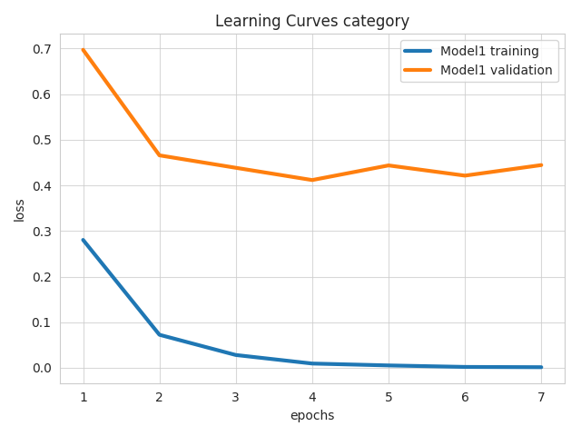
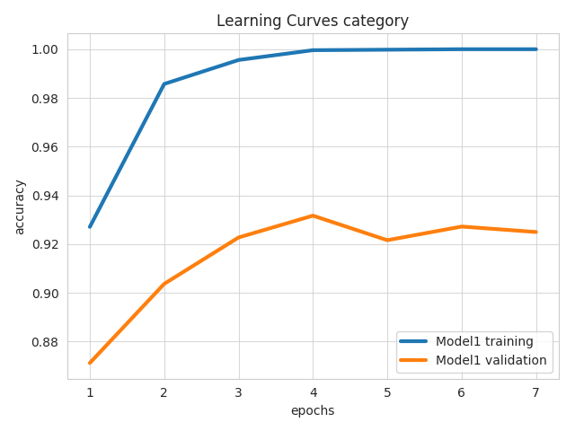
Confusion Matrix¶
confusion_matrix¶
This visualization uses the top_n_classes, normalize, ground_truth_metadata, test_statistics and model_names parameters.
For each model (in the aligned lists of test_statistics and model_names) it produces a heatmap of the confusion matrix in the predictions for each field that has a confusion matrix in test_statistics.
The value of top_n_classes limits the heatmap to the n most frequent classes.
Example command:
ludwig visualize --visualization confusion_matrix --top_n_classes 2 --test_statistics results/titanic_Model1_0/test_statistics.json --ground_truth_metadata results/titanic_Model1_0/model/train_set_metadata.json
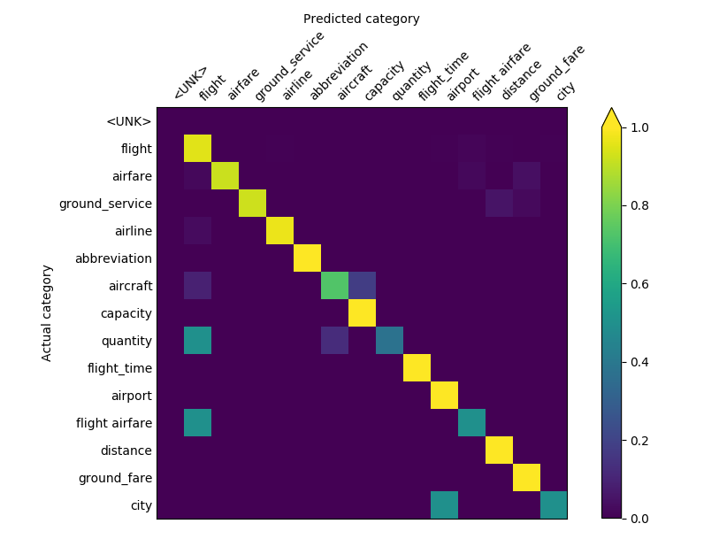
The second plot produced, is a barplot showing the entropy of each class, ranked from most entropic to least entropic.
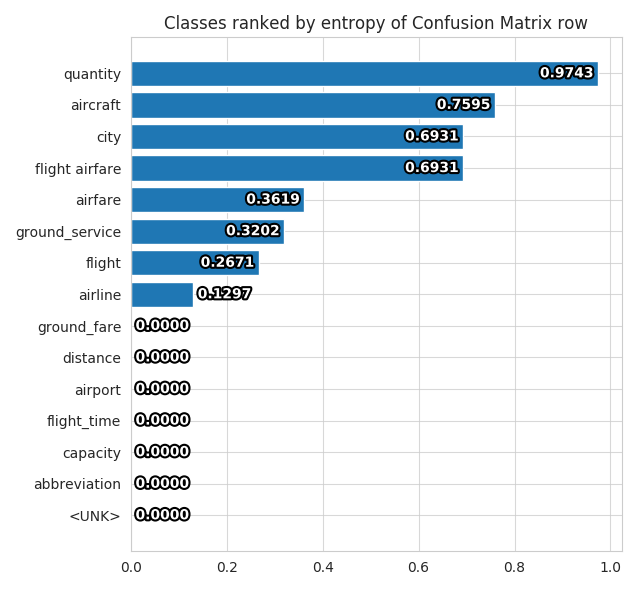
Compare Performance¶
compare_performance¶
This visualization uses the field, test_statistics and model_names parameters.
For each model (in the aligned lists of test_statistics and model_names) it produces bars in a bar plot, one for each overall metric available in the test_statistics file for the specified field.
Example command:
ludwig visualize --visualization compare_performance --model_names Model1 Model2 --test_statistics results/titanic_Model1_0/test_statistics.json results/titanic_Model2_0/test_statistics.json --field Survived
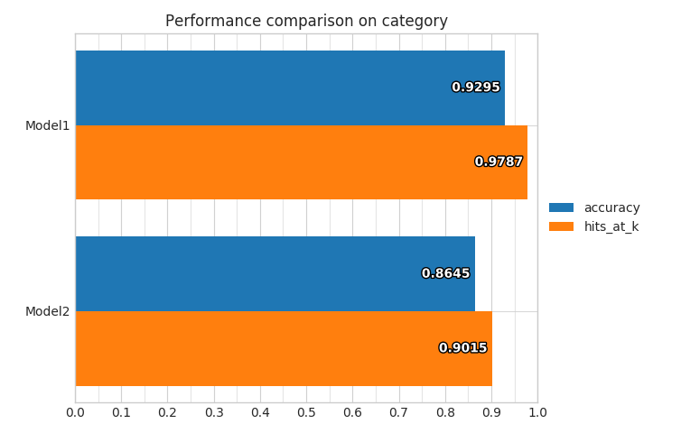
compare_classifiers_performance_from_prob¶
This visualization uses the ground_truth, field, probabilities and model_names parameters.
field needs to be a category.
For each model (in the aligned lists of probabilities and model_names) it produces bars in a bar plot, one for each overall metric computed on the fly from the probabilities of predictions for the specified field.
Example command:
ludwig visualize --visualization compare_classifiers_performance_from_prob --model_names Model1 Model2 --ground_truth train.hdf5 --field Survived --probabilities results/titanic_Model1_0/Survived_probabilities.csv results/titanic_Model2_0/Survived_probabilities.csv
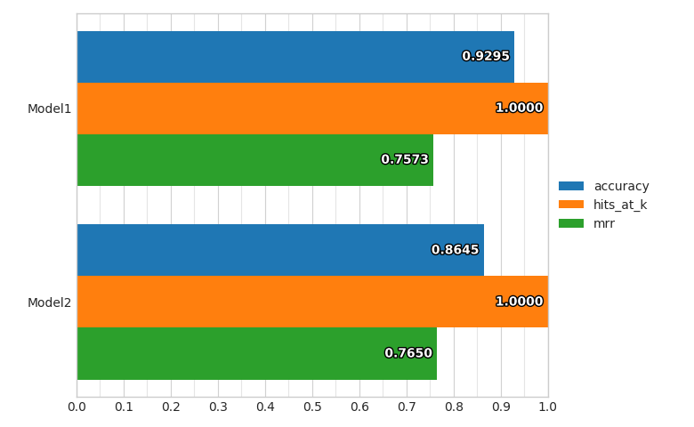
compare_classifiers_performance_from_pred¶
This visualization uses the ground_truth, ground_truth_metadata, field, predictions and model_names parameters.
field needs to be a category.
For each model (in the aligned lists of predictions and model_names) it produces bars in a bar plot, one for each overall metric computed on the fly from the predictions for the specified field.
Example command:
ludwig visualize --visualization compare_classifiers_performance_from_pred --model_names Model1 Model2 --ground_truth train.hdf5 --field Survived --ground_truth_metadata train.json --predictions results/titanic_Model1_0/Survived_predictions.csv results/titanic_Model2_0/Survived_predictions.csv
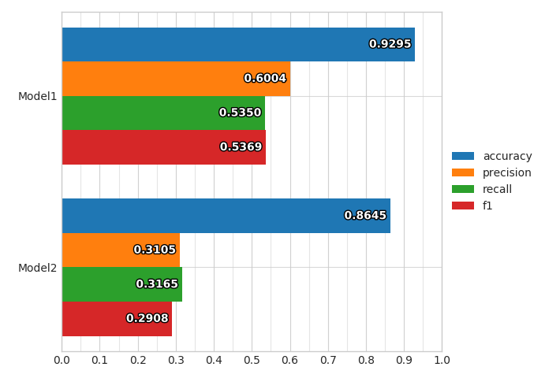
compare_classifiers_performance_subset¶
This visualization uses the top_n_classes, subset, ground_truth, ground_truth_metadata, field, probabilities and model_names parameters.
field needs to be a category.
For each model (in the aligned lists of predictions and model_names) it produces bars in a bar plot, one for each overall metric computed on the fly from the probabilities predictions for the specified field, considering only a subset of the full training set.
The way the subset is obtained is using the top_n_classes and subset parameters.
If the values of subset is ground_truth, then only datapoints where the ground truth class is within the top n most frequent ones will be considered as test set, and the percentage of datapoints that have been kept from the original set will be displayed.
Example command:
ludwig visualize --visualization compare_classifiers_performance_subset --model_names Model1 Model2 --top_n_classes 2 --subset ground_truth --ground_truth train.hdf5 --field Survived --ground_truth_metadata train.json --probabilities results/titanic_Model1_0/Survived_probabilities.csv results/titanic_Model2_0/Survived_probabilities.csv
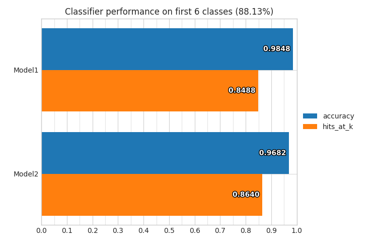
If the values of subset is predictions, then only datapoints where the the model predicts a class that is within the top n most frequent ones will be considered as test set, and the percentage of datapoints that have been kept from the original set will be displayed for each model.
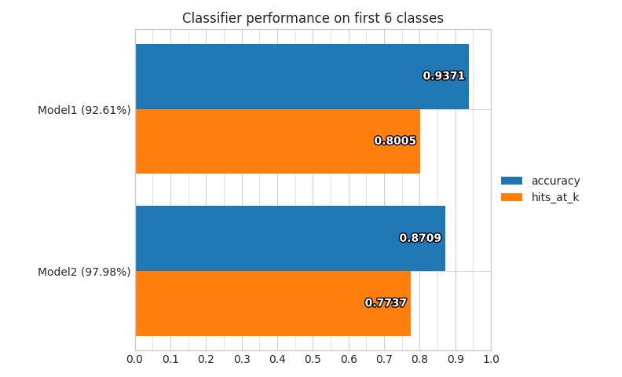
compare_classifiers_performance_changing_k¶
This visualization uses the top_k, ground_truth, field, probabilities and model_names parameters.
field needs to be a category.
For each model (in the aligned lists of probabilities and model_names) it produces a line plot that shows the Hits@K measure (that counts a prediction as correct if the model produces it among the first k) while changing k from 1 to top_k for the specified field.
Example command:
ludwig visualize --visualization compare_classifiers_performance_changing_k --model_names Model1 Model2 --top_k 5 --ground_truth train.hdf5 --field Survived --probabilities results/titanic_Model1_0/Survived_probabilities.csv results/titanic_Model2_0/Survived_probabilities.csv
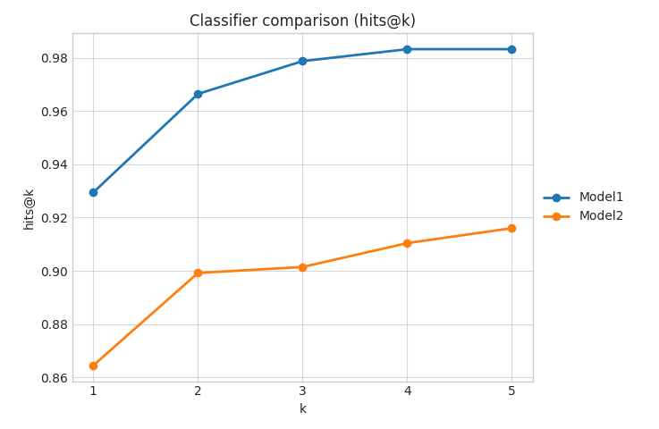
compare_classifiers_multiclass_multimetric¶
This visualization uses the top_n_classes, ground_truth_metadata, field, test_statistics and model_names parameters.
field needs to be a category.
For each model (in the aligned lists of test_statistics and model_names) it produces four plots that show the precision, recall and F1 of the model on several classes for the specified field.
The first one show the measures on the n most frequent classes.
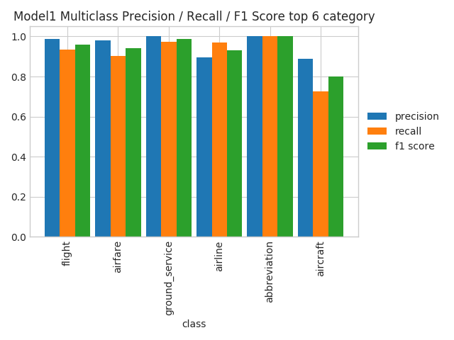
The second one shows the measures on the n classes where the model performs the best.
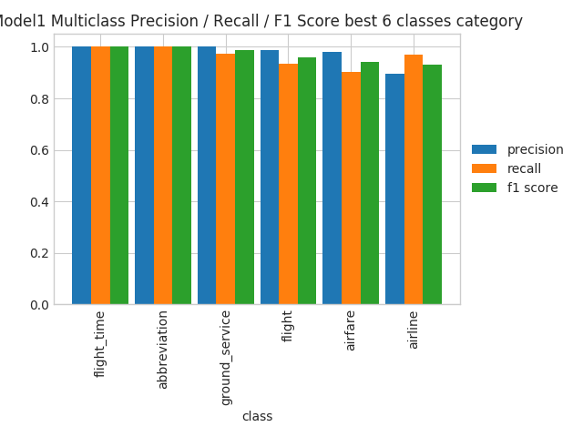
The third one shows the measures on the n classes where the model performs the worst.
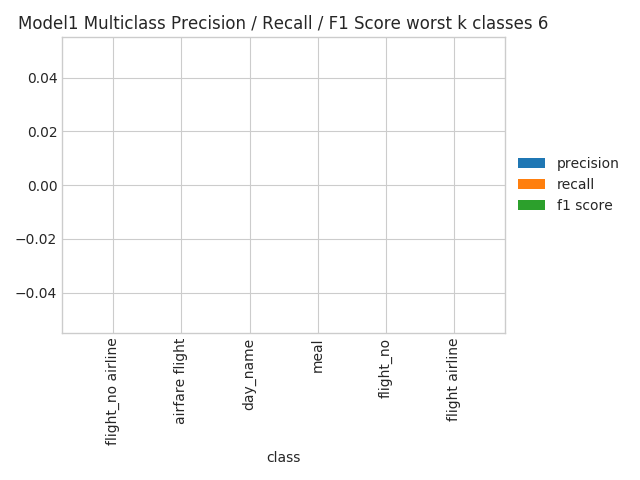
The fourth one shows the measures on all the classes, sorted by their frequency. This could become unreadable in case the number of classes is really high.
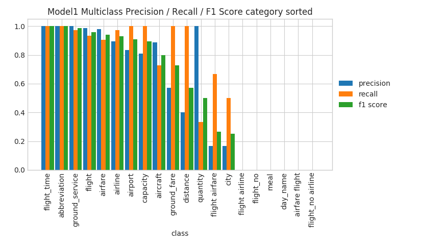
Compare Classifier Predictions¶
compare_classifiers_predictions¶
This visualization uses the ground_truth, field, predictions and model_names parameters.
field needs to be a category and there must be two and only two models (in the aligned lists of predictions and model_names).
This visualization produces a pie chart comparing the predictions of the two models for the specified field.
Example command:
ludwig visualize --visualization compare_classifiers_predictions --model_names Model1 Model2 --ground_truth train.hdf5 --field Survived --predictions results/titanic_Model1_0/Survived_predictions.csv results/titanic_Model2_0/Survived_predictions.csv
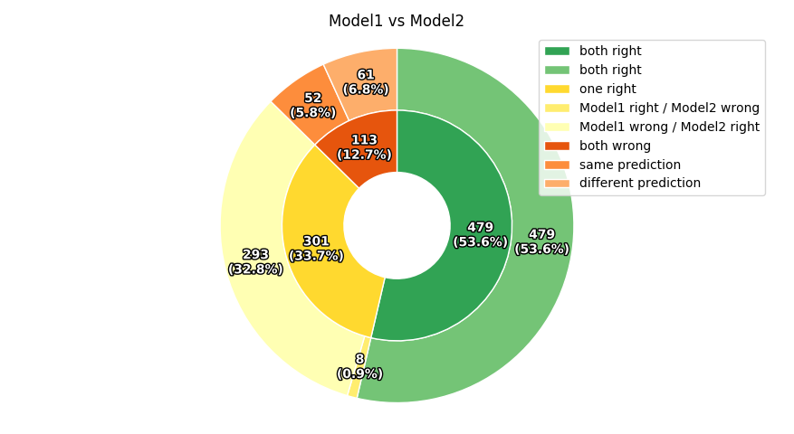
compare_classifiers_predictions_distribution¶
This visualization uses the ground_truth, field, predictions and model_names parameters.
field needs to be a category.
This visualization produces a radar plot comparing the distributions of predictions of the models for the first 10 classes of the specified field.
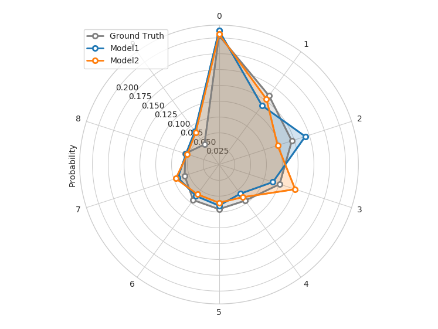
Confidence_Thresholding¶
confidence_thresholding¶
This visualization uses the ground_truth, field, probabilities and model_names parameters.
field needs to be a category.
For each model (in the aligned lists of probabilities and model_names) it produces a pair of lines indicating the accuracy of the model and the data coverage while increasing a threshold (x axis) on the probabilities of predictions for the specified field.
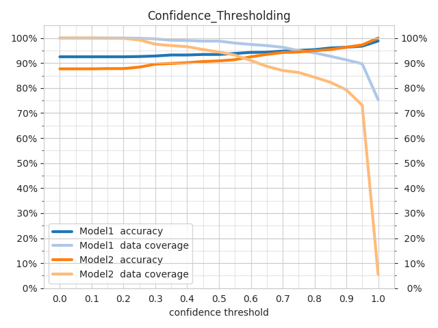
confidence_thresholding_data_vs_acc¶
This visualization uses the ground_truth, field, probabilities and model_names parameters.
field needs to be a category.
For each model (in the aligned lists of probabilities and model_names) it produces a line indicating the accuracy of the model and the data coverage while increasing a threshold on the probabilities of predictions for the specified field.
The difference with confidence_thresholding is that it uses two axes instead of three, not visualizing the threshold and having coverage as x axis instead of the threshold.
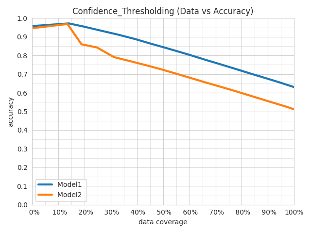
confidence_thresholding_data_vs_acc_subset¶
This visualization uses the top_n_classes, subset, ground_truth, field, probabilities and model_names parameters.
field needs to be a category.
For each model (in the aligned lists of probabilities and model_names) it produces a line indicating the accuracy of the model and the data coverage while increasing a threshold on the probabilities of predictions for the specified field, considering only a subset of the full training set.
The way the subset is obtained is using the top_n_classes and subset parameters..
The difference with confidence_thresholding is that it uses two axes instead of three, not visualizing the threshold and having coverage as x axis instead of the threshold.
If the values of subset is ground_truth, then only datapoints where the ground truth class is within the top n most frequent ones will be considered as test set, and the percentage of datapoints that have been kept from the original set will be displayed.
If the values of subset is predictions, then only datapoints where the the model predicts a class that is within the top n most frequent ones will be considered as test set, and the percentage of datapoints that have been kept from the original set will be displayed for each model.
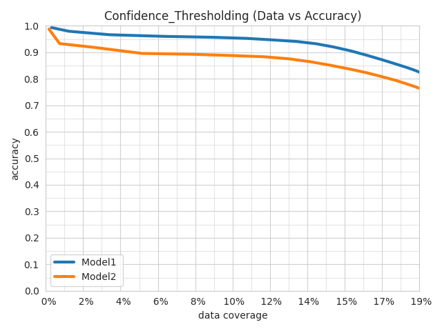
confidence_thresholding_data_vs_acc_subset_per_class¶
This visualization uses the top_n_classes, subset, ground_truth, ground_truth_metadata, field, probabilities and model_names parameters.
field needs to be a category.
For each model (in the aligned lists of probabilities and model_names) it produces a line indicating the accuracy of the model and the data coverage while increasing a threshold on the probabilities of predictions for the specified field, considering only a subset of the full training set.
The way the subset is obtained is using the top_n_classes and subset parameters..
The difference with confidence_thresholding is that it uses two axes instead of three, not visualizing the threshold and having coverage as x axis instead of the threshold.
If the values of subset is ground_truth, then only datapoints where the ground truth class is within the top n most frequent ones will be considered as test set, and the percentage of datapoints that have been kept from the original set will be displayed.
If the values of subset is predictions, then only datapoints where the the model predicts a class that is within the top n most frequent ones will be considered as test set, and the percentage of datapoints that have been kept from the original set will be displayed for each model.
The difference with confidence_thresholding_data_vs_acc_subset is that it produces one plot per class within the top_n_classes.
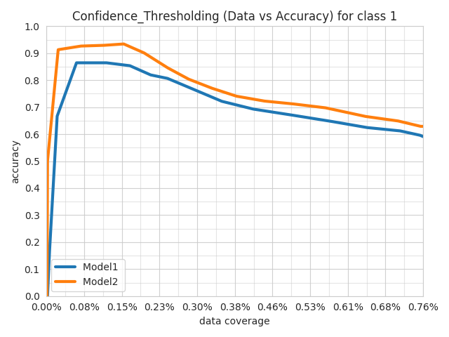
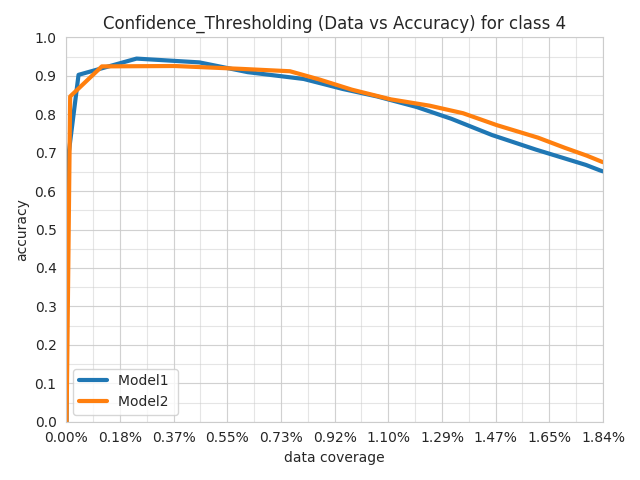
confidence_thresholding_2thresholds_2d¶
This visualization uses the ground_truth, threshold_fields, probabilities and model_names parameters.
threshold_fields need to be exactly two, either category or binary.
probabilities need to be exactly two, aligned with threshold_fields.
model_names has to be exactly one.
Three plots are produced.
The first plot shows several semi transparent lines.
They summarize the 3d surfaces displayed by confidence_thresholding_2thresholds_3d that have thresholds on the confidence of the predictions of the two threshold_fields as x and y axes and either the data coverage percentage or the accuracy as z axis.
Each line represents a slice of the data coverage surface projected onto the accuracy surface.
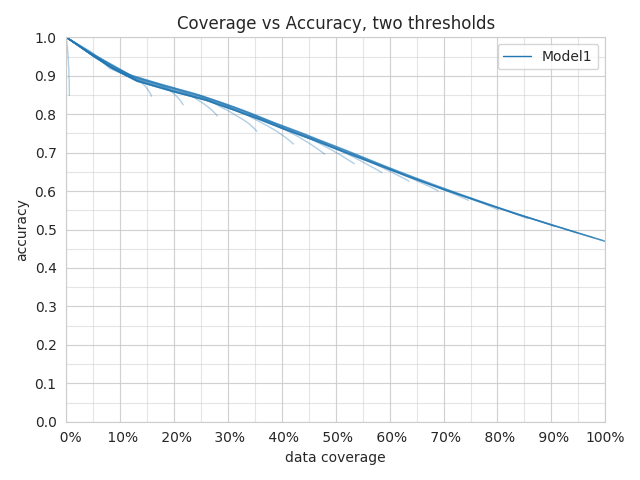
The second plot shows the max of all the lines displayed in the first plot.
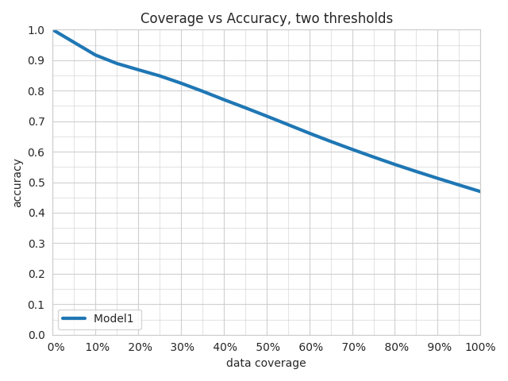
The third plot shows the max line and the values of the thresholds that obtained a specific data coverage vs accuracy pair of values.
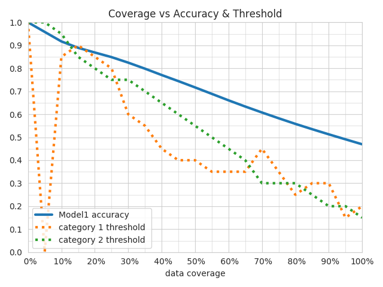
confidence_thresholding_2thresholds_3d¶
This visualization uses the ground_truth, threshold_fields and probabilities parameters.
threshold_fields need to be exactly two, either category or binary.
probabilities need to be exactly two, aligned with threshold_fields.
The plot shows the 3d surfaces displayed by confidence_thresholding_2thresholds_3d that have thresholds on the confidence of the predictions of the two threshold_fields as x and y axes and either the data coverage percentage or the accuracy as z axis.
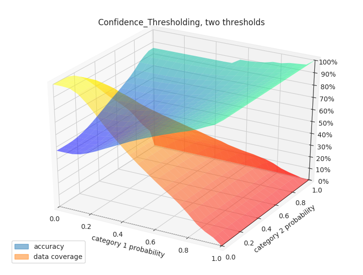
Binary Threshold vs. Metric¶
binary_threshold_vs_metric¶
This visualization uses the positive_label, metrics, ground_truth, field, probabilities and model_names parameters.
field can be a category or binary feature.
For each metric specified in metrics (options are f1, precision, recall, accuracy), this visualization produces a line chart plotting a threshold on the confidence of the model against the metric for the specified field.
If field is a category feature, positive_label indicates which is the class to be considered positive class and all the others will be considered negative.
It needs to be an integer, to figure out the association between classes and integers check the ground_truth_metadata JSON file.
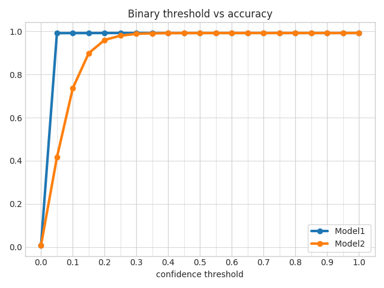
ROC Curves¶
roc_curves¶
This visualization uses the positive_label, ground_truth, field, probabilities and model_names parameters.
field can be a category or binary feature.
This visualization produces a line chart plotting the roc curves for the specified field.
If field is a category feature, positive_label indicates which is the class to be considered positive class and all the others will be considered negative.
It needs to be an integer, to figure out the association between classes and integers check the ground_truth_metadata JSON file.
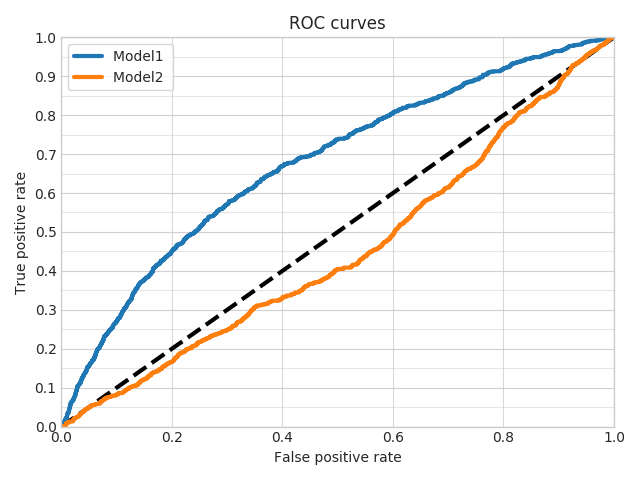
roc_curves_from_test_statistics¶
This visualization uses the output_feature_name, test_statistics and model_names parameters.
output_feature_name needs to be binary feature.
This visualization produces a line chart plotting the roc curves for the specified output_feature_name.
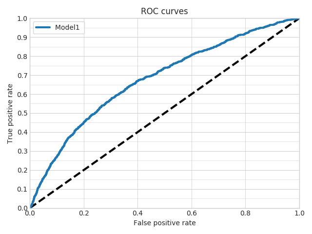
Calibration Plot¶
calibration_1_vs_all¶
This visualization uses the top_k, ground_truth, field, probabilities and model_names parameters.
field needs to be a category or binary.
For each class or each of the k most frequent classes if top_k is specified, it produces two plots computed on the fly from the probabilities of predictions for the specified field.
The first plot is a calibration curve that shows the calibration of the predictions considering the current class to be the true one and all others to be a false one, drawing one line for each model (in the aligned lists of probabilities and model_names).
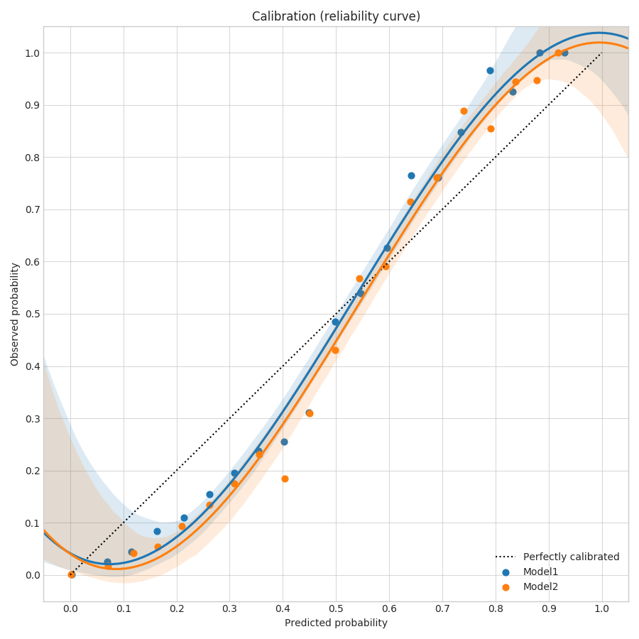
The second plot shows the distributions of the predictions considering the current class to be the true one and all others to be a false one, drawing the distribution for each model (in the aligned lists of probabilities and model_names).
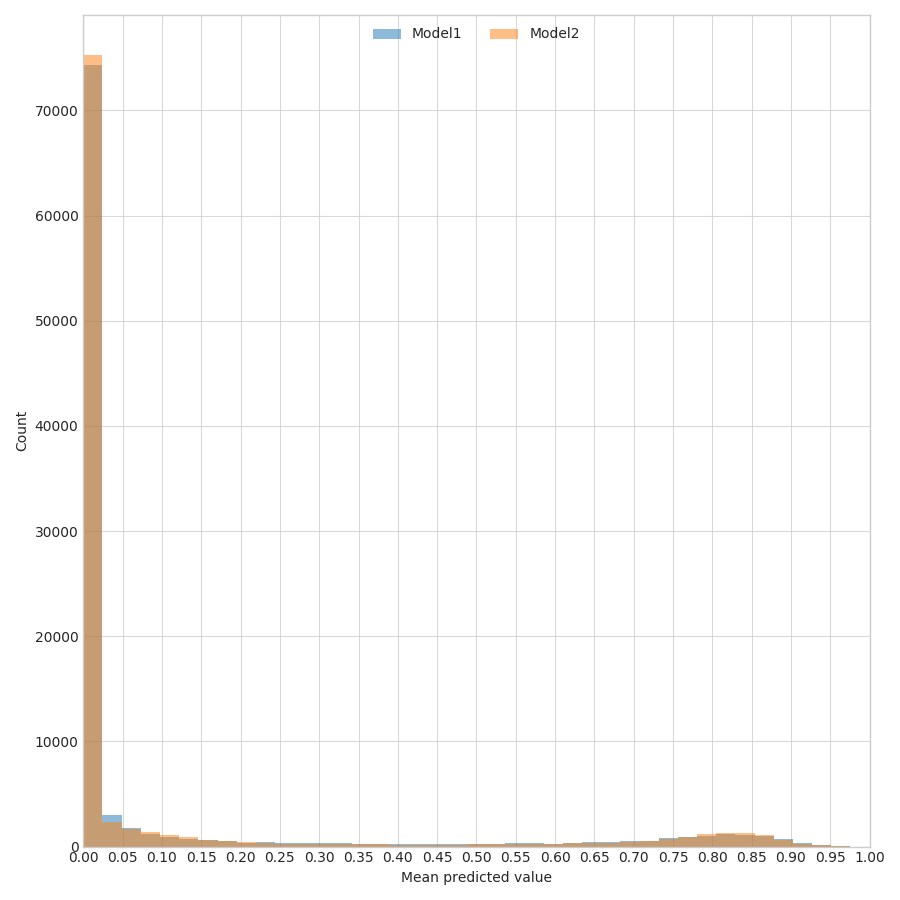
calibration_multiclass¶
This visualization uses the ground_truth, field, probabilities and model_names parameters.
field needs to be a category.
For each class, produces two plots computed on the fly from the probabilities of predictions for the specified field.
The first plot is a calibration curve that shows the calibration of the predictions considering al classes, drawing one line for each model (in the aligned lists of probabilities and model_names).
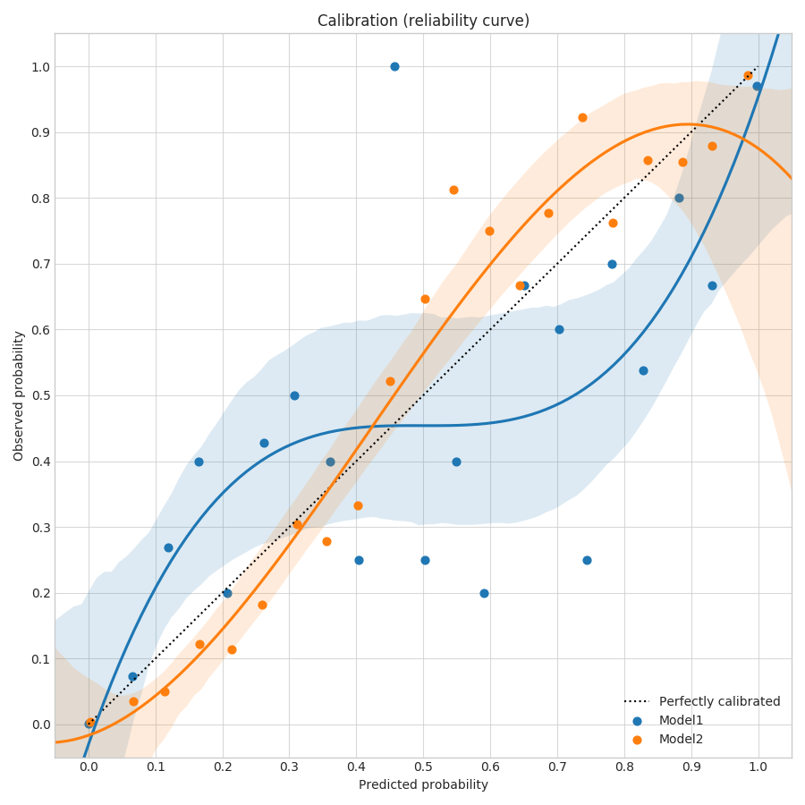
The second plot shows a bar plot of the brier score (that calculates how calibrated are the probabilities of the predictions of a model), drawing one bar for each model (in the aligned lists of probabilities and model_names).
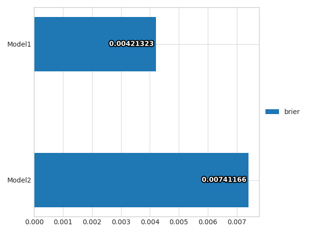
Class Frequency vs. F1 score¶
frequency_vs_f1¶
This visualization uses the ground_truth_metadata, field, test_statistics and model_names parameters.
field needs to be a category.
For each model (in the aligned lists of test_statistics and model_names), produces two plots statistics of predictions for the specified field.
The first plot is a line plot with one x axis representing the different classes and two vertical axes colored in orange and blue respectively. The orange one is the frequency of the class and an orange line is plotted to show the trend. The blue one is the F1 score for that class and a blue line is plotted to show the trend. The classes on the x axis are sorted by f1 score.
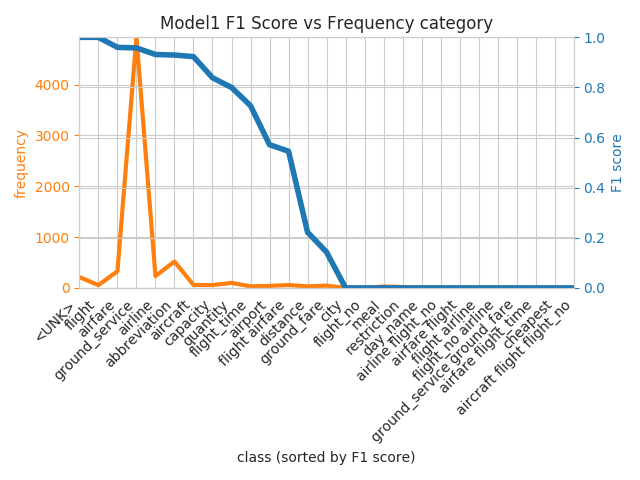
The second plot has the same structure of the first one, but the axes are flipped and the classes on the x axis are sorted by frequency.
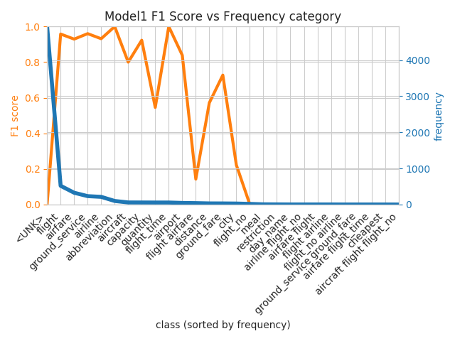
Hyper-parameter optimization visualization¶
The examples of the hyper-parameter visualizations shown here are obtained by running a random search with 100 samples on the ATIS dataset used for classifying intents given user utterances.
hyperopt_report¶
This visualization uses the hyperopt_stats_path parameter.
The visualization creates one plot for each hyper-parameter in the file at hyperopt_stats_path, plus an additional one containing a pair plot of hyper-parameters interactions.
Each plot will show the distribution of the parameters with respect to the metric to optimize.
For float and int parameters, a scatter plot is used, while for category parameters, a violin plot is used instead.
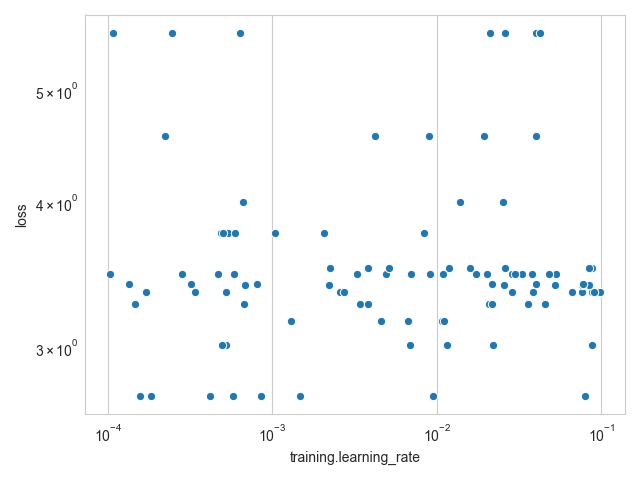
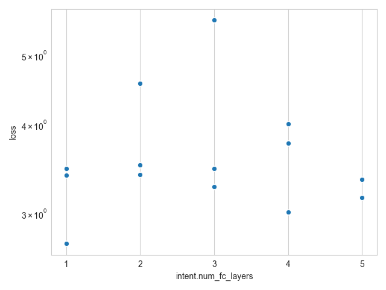
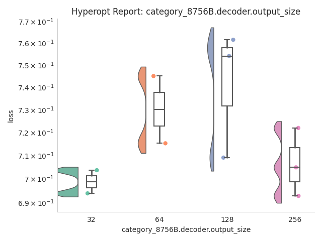
The pair plot shows a heatmap of how the values of pairs of hyper-parameters correlate with the metric to optimize.
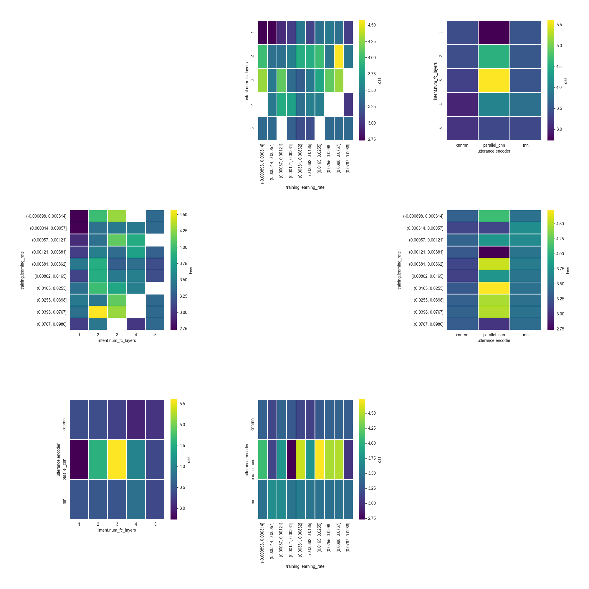
hyperopt_hiplot¶
This visualization uses the hyperopt_stats_path parameter.
The visualization creates an interactive HTML page visualizing all the results from the hyper-parameter optimization at once, using a parallel coordinate plot.
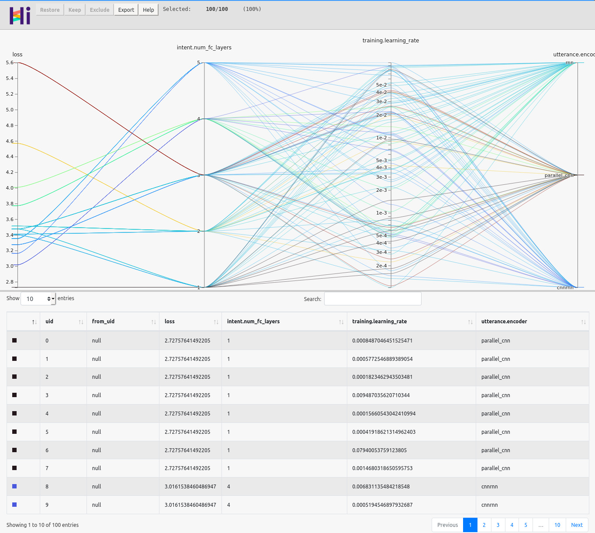